Modelación clustering#
Librerías#
import warnings
warnings.filterwarnings("ignore")
import os
import time
import pickle
import hdbscan
import numpy as np
import pandas as pd
import seaborn as sns
from tqdm import tqdm
import tensorflow as tf
from minisom import MiniSom
import plotly.express as px
from tensorflow import keras
from itertools import product
import matplotlib.pyplot as plt
from sklearn.manifold import TSNE
from sklearn.utils import resample
from sklearn.pipeline import Pipeline
from sklearn.decomposition import PCA
from sklearn.model_selection import KFold
from sklearn_extra.cluster import KMedoids
from sklearn.mixture import GaussianMixture
from tensorflow.keras.optimizers import Adam
from sklearn.compose import ColumnTransformer
from sklearn.preprocessing import LabelEncoder
from sklearn.model_selection import GridSearchCV
from tensorflow.keras.layers import Input, Dense
from tensorflow.keras.models import Model, load_model
from sklearn.base import BaseEstimator, TransformerMixin
from sklearn.preprocessing import StandardScaler, OneHotEncoder
from sklearn.model_selection import train_test_split, ParameterGrid
from sklearn.cluster import KMeans, DBSCAN, Birch, MeanShift, AgglomerativeClustering
from sklearn.metrics import silhouette_score, davies_bouldin_score, calinski_harabasz_score
Selección de Variables#
with open('taxi_df.pkl', 'rb') as f:
taxi_df = pickle.load(f)
# seleccion de variables
print(taxi_df.columns)
Index(['PULocationID', 'DOLocationID', 'Passengers', 'Distance', 'RatecodeID',
'fare_amount', 'total_amount', 'PickUpYear', 'PickUpMonth',
'PickUpWeek', 'PickUpDay', 'PickUpHour', 'PickUpDayWeek',
'payment_type', 'tolls_amount', 'Duration', 'Zone_pickup',
'Zone_dropoff', 'Duration_seconds', 'Duration_minutes',
'Duration_range', 'Amount_range'],
dtype='object')
# DataFrame con las variables seleccionadas para los modelos de clustering
variables_clustering = [
'total_amount',
'Distance',
'Passengers',
'tolls_amount',
'Duration_seconds',
'payment_type',
'RatecodeID'
]
# Crear una copia con solo esas columnas
df_clustering = taxi_df[variables_clustering].copy()
# Mostrar las primeras filas
df_clustering.head()
| total_amount | Distance | Passengers | tolls_amount | Duration_seconds | payment_type | RatecodeID | |
|---|---|---|---|---|---|---|---|
| 0 | 9.95 | 1.5 | 1.0 | 0.0 | 400.0 | 1 | 1.0 |
| 1 | 16.30 | 2.6 | 1.0 | 0.0 | 1152.0 | 1 | 1.0 |
| 7 | 9.05 | 1.3 | 1.0 | 0.0 | 429.0 | 1 | 1.0 |
| 8 | 18.50 | 3.7 | 1.0 | 0.0 | 818.0 | 1 | 1.0 |
| 9 | 13.00 | 2.1 | 2.0 | 0.0 | 720.0 | 1 | 1.0 |
# Variables
numeric_features = ['Distance', 'Passengers', 'tolls_amount', 'Duration_seconds', 'total_amount']
categorical_features = ['payment_type', 'RatecodeID']
# Preprocesador
preprocessor = ColumnTransformer([
('num', StandardScaler(), numeric_features),
('cat', OneHotEncoder(handle_unknown='ignore'), categorical_features)
])
X = df_clustering[numeric_features + categorical_features]
X_transf = preprocessor.fit_transform(X)
X_sample = resample(X_transf, n_samples=150000, random_state=42)
Modelos de Machine Learning#
Kmeans#
Silhouette#
# Definir el rango de parámetros para el ajuste
param_grid = {
'n_clusters': [2, 3, 4, 5, 6],
'init': ['k-means++', 'random'],
'max_iter': [300, 400, 500]
}
# Definir el modelo base
kmeans = KMeans(random_state=42, n_init='auto')
# Función de scoring personalizada para Silhouette
def silhouette_scorer(estimator, X):
labels = estimator.fit_predict(X)
return silhouette_score(X, labels)
# Configurar GridSearchCV
grid_search = GridSearchCV(
estimator=kmeans,
param_grid=param_grid,
scoring=silhouette_scorer,
cv=3,
verbose=1,
n_jobs=-1
)
print(" Comenzando la búsqueda de hiperparámetros...\n")
grid_search.fit(X_sample)
# Mostrar mejores parámetros
print("\n Mejores parámetros encontrados:")
print(grid_search.best_params_)
# -------------------------------------------
# Mostrar tabla completa de resultados
# -------------------------------------------
print("\n Resultados completos ordenados por mejor score:\n")
# Crear DataFrame con resultados
results_df = pd.DataFrame(grid_search.cv_results_)
# Seleccionar columnas útiles
columns_to_show = ['params', 'mean_test_score', 'std_test_score', 'mean_fit_time', 'mean_score_time']
results_df = results_df[columns_to_show]
# Ordenar por mayor Silhouette Score
results_df_sorted = results_df.sort_values(by='mean_test_score', ascending=False)
# Mostrar todo
pd.set_option('display.max_rows', None) # Mostrar todas las filas
print(results_df_sorted)
Comenzando la búsqueda de hiperparámetros...
Fitting 3 folds for each of 30 candidates, totalling 90 fits
Mejores parámetros encontrados:
{'init': 'k-means++', 'max_iter': 300, 'n_clusters': 2}
Resultados completos ordenados por mejor score:
params mean_test_score \
0 {'init': 'k-means++', 'max_iter': 300, 'n_clus... 0.769978
5 {'init': 'k-means++', 'max_iter': 400, 'n_clus... 0.769978
10 {'init': 'k-means++', 'max_iter': 500, 'n_clus... 0.769978
25 {'init': 'random', 'max_iter': 500, 'n_cluster... 0.712788
20 {'init': 'random', 'max_iter': 400, 'n_cluster... 0.712788
15 {'init': 'random', 'max_iter': 300, 'n_cluster... 0.712788
6 {'init': 'k-means++', 'max_iter': 400, 'n_clus... 0.658873
11 {'init': 'k-means++', 'max_iter': 500, 'n_clus... 0.658873
1 {'init': 'k-means++', 'max_iter': 300, 'n_clus... 0.658873
3 {'init': 'k-means++', 'max_iter': 300, 'n_clus... 0.554181
8 {'init': 'k-means++', 'max_iter': 400, 'n_clus... 0.554181
13 {'init': 'k-means++', 'max_iter': 500, 'n_clus... 0.554181
2 {'init': 'k-means++', 'max_iter': 300, 'n_clus... 0.545471
12 {'init': 'k-means++', 'max_iter': 500, 'n_clus... 0.545471
7 {'init': 'k-means++', 'max_iter': 400, 'n_clus... 0.545471
26 {'init': 'random', 'max_iter': 500, 'n_cluster... 0.539644
16 {'init': 'random', 'max_iter': 300, 'n_cluster... 0.539644
21 {'init': 'random', 'max_iter': 400, 'n_cluster... 0.539644
24 {'init': 'random', 'max_iter': 400, 'n_cluster... 0.512203
29 {'init': 'random', 'max_iter': 500, 'n_cluster... 0.512203
19 {'init': 'random', 'max_iter': 300, 'n_cluster... 0.512203
17 {'init': 'random', 'max_iter': 300, 'n_cluster... 0.510875
22 {'init': 'random', 'max_iter': 400, 'n_cluster... 0.510875
27 {'init': 'random', 'max_iter': 500, 'n_cluster... 0.510875
23 {'init': 'random', 'max_iter': 400, 'n_cluster... 0.485426
28 {'init': 'random', 'max_iter': 500, 'n_cluster... 0.485426
18 {'init': 'random', 'max_iter': 300, 'n_cluster... 0.485426
14 {'init': 'k-means++', 'max_iter': 500, 'n_clus... 0.465872
4 {'init': 'k-means++', 'max_iter': 300, 'n_clus... 0.465872
9 {'init': 'k-means++', 'max_iter': 400, 'n_clus... 0.465872
std_test_score mean_fit_time mean_score_time
0 0.082934 0.231352 148.041433
5 0.082934 0.268759 121.500416
10 0.082934 0.229548 106.610025
25 0.002475 0.926451 107.372455
20 0.002475 1.210191 107.475930
15 0.002475 1.063632 109.086374
6 0.084066 0.284712 111.593256
11 0.084066 0.281367 108.292633
1 0.084066 0.257781 148.436663
3 0.005062 0.297466 150.060024
8 0.005062 0.340137 108.323332
13 0.005062 0.398106 106.802192
2 0.038309 0.269735 153.750006
12 0.038309 0.321077 106.528111
7 0.038309 0.292987 112.362004
26 0.001771 1.448334 97.710421
16 0.001771 1.504416 111.351739
21 0.001771 1.458955 106.947416
24 0.001088 2.806898 108.288621
29 0.001088 2.578729 64.109928
19 0.001088 2.749016 111.160168
17 0.088444 1.853954 110.069304
22 0.088444 1.700961 106.044068
27 0.088444 1.905507 74.341791
23 0.009449 2.704586 114.142421
28 0.009449 2.726543 66.084195
18 0.009449 2.769523 105.352468
14 0.065177 0.483805 111.308260
4 0.065177 0.313217 151.188293
9 0.065177 0.368177 106.745788
# Extraer mejores parámetros desde grid_search
best_params = grid_search.best_params_
# Crear el modelo con los mejores parámetros
kmeans_silhouette = KMeans(
n_clusters=best_params['n_clusters'],
init=best_params['init'],
max_iter=best_params['max_iter'],
random_state=42,
n_init='auto'
)
# Entrenar el modelo
kmeans_silhouette.fit(X_sample)
# Obtener las etiquetas del modelo
labels_silhouette = kmeans_silhouette.labels_
# Calcular métricas
silhouette_final = silhouette_score(X_sample, labels_silhouette)
davies_bouldin_final = davies_bouldin_score(X_sample, labels_silhouette)
calinski_harabasz_final = calinski_harabasz_score(X_sample, labels_silhouette)
# Imprimir resultados
print(f"Silhouette Score (final): {silhouette_final:.4f}")
print(f"Davies-Bouldin Score (final): {davies_bouldin_final:.4f}")
print(f"Calinski-Harabasz Score (final): {calinski_harabasz_final:.4f}")
Silhouette Score (final): 0.7129
Davies-Bouldin Score (final): 0.7252
Calinski-Harabasz Score (final): 86988.6291
Davies-Bouldin#
# Definir el rango de parámetros para el ajuste
param_grid = {
'n_clusters': [2, 3, 4, 5, 6],
'init': ['k-means++', 'random'],
'max_iter': [300, 400, 500]
}
# Definir el modelo KMeans
kmeans = KMeans(random_state=42, n_init='auto')
# Definir una función de scoring para Davies-Bouldin (negativo)
def negative_davies_bouldin(estimator, X):
labels = estimator.fit_predict(X)
score = davies_bouldin_score(X, labels)
return -score
# Realizar la búsqueda de hiperparámetros
grid_search = GridSearchCV(kmeans, param_grid, cv=3, scoring=negative_davies_bouldin)
print("Comenzando la búsqueda de hiperparámetros...")
results = []
grid_search.fit(X_sample) # Ajustar GridSearchCV
for i in range(len(grid_search.cv_results_['params'])):
params = grid_search.cv_results_['params'][i]
mean_neg_db = grid_search.cv_results_['mean_test_score'][i]
duration = grid_search.cv_results_['mean_fit_time'][i] + grid_search.cv_results_['mean_score_time'][i]
results.append((params, mean_neg_db, duration))
print(f"Parámetros: {params}, Score Promedio (neg_Davies-Bouldin): {mean_neg_db:.4f}, Tiempo: {duration:.2f} segundos")
# Mostrar todos los resultados
print("\nTodos los resultados de la búsqueda:")
for params, score, duration in results:
print(f"Parámetros: {params}, Score Promedio (neg_Davies-Bouldin): {score:.4f}, Tiempo: {duration:.2f} segundos")
# Mostrar el mejor conjunto de hiperparámetros
print("\nMejores parámetros: ", grid_search.best_params_)
Comenzando la búsqueda de hiperparámetros...
Parámetros: {'init': 'k-means++', 'max_iter': 300, 'n_clusters': 2}, Score Promedio (neg_Davies-Bouldin): -0.5514, Tiempo: 0.05 segundos
Parámetros: {'init': 'k-means++', 'max_iter': 300, 'n_clusters': 3}, Score Promedio (neg_Davies-Bouldin): -0.6333, Tiempo: 0.05 segundos
Parámetros: {'init': 'k-means++', 'max_iter': 300, 'n_clusters': 4}, Score Promedio (neg_Davies-Bouldin): -0.6586, Tiempo: 0.05 segundos
Parámetros: {'init': 'k-means++', 'max_iter': 300, 'n_clusters': 5}, Score Promedio (neg_Davies-Bouldin): -0.6913, Tiempo: 0.06 segundos
Parámetros: {'init': 'k-means++', 'max_iter': 300, 'n_clusters': 6}, Score Promedio (neg_Davies-Bouldin): -0.7532, Tiempo: 0.07 segundos
Parámetros: {'init': 'k-means++', 'max_iter': 400, 'n_clusters': 2}, Score Promedio (neg_Davies-Bouldin): -0.5514, Tiempo: 0.04 segundos
Parámetros: {'init': 'k-means++', 'max_iter': 400, 'n_clusters': 3}, Score Promedio (neg_Davies-Bouldin): -0.6333, Tiempo: 0.05 segundos
Parámetros: {'init': 'k-means++', 'max_iter': 400, 'n_clusters': 4}, Score Promedio (neg_Davies-Bouldin): -0.6586, Tiempo: 0.05 segundos
Parámetros: {'init': 'k-means++', 'max_iter': 400, 'n_clusters': 5}, Score Promedio (neg_Davies-Bouldin): -0.6913, Tiempo: 0.06 segundos
Parámetros: {'init': 'k-means++', 'max_iter': 400, 'n_clusters': 6}, Score Promedio (neg_Davies-Bouldin): -0.7532, Tiempo: 0.06 segundos
Parámetros: {'init': 'k-means++', 'max_iter': 500, 'n_clusters': 2}, Score Promedio (neg_Davies-Bouldin): -0.5514, Tiempo: 0.05 segundos
Parámetros: {'init': 'k-means++', 'max_iter': 500, 'n_clusters': 3}, Score Promedio (neg_Davies-Bouldin): -0.6333, Tiempo: 0.05 segundos
Parámetros: {'init': 'k-means++', 'max_iter': 500, 'n_clusters': 4}, Score Promedio (neg_Davies-Bouldin): -0.6586, Tiempo: 0.05 segundos
Parámetros: {'init': 'k-means++', 'max_iter': 500, 'n_clusters': 5}, Score Promedio (neg_Davies-Bouldin): -0.6913, Tiempo: 0.06 segundos
Parámetros: {'init': 'k-means++', 'max_iter': 500, 'n_clusters': 6}, Score Promedio (neg_Davies-Bouldin): -0.7532, Tiempo: 0.06 segundos
Parámetros: {'init': 'random', 'max_iter': 300, 'n_clusters': 2}, Score Promedio (neg_Davies-Bouldin): -0.7254, Tiempo: 0.15 segundos
Parámetros: {'init': 'random', 'max_iter': 300, 'n_clusters': 3}, Score Promedio (neg_Davies-Bouldin): -0.8062, Tiempo: 0.17 segundos
Parámetros: {'init': 'random', 'max_iter': 300, 'n_clusters': 4}, Score Promedio (neg_Davies-Bouldin): -0.8251, Tiempo: 0.20 segundos
Parámetros: {'init': 'random', 'max_iter': 300, 'n_clusters': 5}, Score Promedio (neg_Davies-Bouldin): -0.7777, Tiempo: 0.25 segundos
Parámetros: {'init': 'random', 'max_iter': 300, 'n_clusters': 6}, Score Promedio (neg_Davies-Bouldin): -0.6939, Tiempo: 0.28 segundos
Parámetros: {'init': 'random', 'max_iter': 400, 'n_clusters': 2}, Score Promedio (neg_Davies-Bouldin): -0.7254, Tiempo: 0.15 segundos
Parámetros: {'init': 'random', 'max_iter': 400, 'n_clusters': 3}, Score Promedio (neg_Davies-Bouldin): -0.8062, Tiempo: 0.17 segundos
Parámetros: {'init': 'random', 'max_iter': 400, 'n_clusters': 4}, Score Promedio (neg_Davies-Bouldin): -0.8251, Tiempo: 0.19 segundos
Parámetros: {'init': 'random', 'max_iter': 400, 'n_clusters': 5}, Score Promedio (neg_Davies-Bouldin): -0.7777, Tiempo: 0.25 segundos
Parámetros: {'init': 'random', 'max_iter': 400, 'n_clusters': 6}, Score Promedio (neg_Davies-Bouldin): -0.6939, Tiempo: 0.27 segundos
Parámetros: {'init': 'random', 'max_iter': 500, 'n_clusters': 2}, Score Promedio (neg_Davies-Bouldin): -0.7254, Tiempo: 0.14 segundos
Parámetros: {'init': 'random', 'max_iter': 500, 'n_clusters': 3}, Score Promedio (neg_Davies-Bouldin): -0.8062, Tiempo: 0.18 segundos
Parámetros: {'init': 'random', 'max_iter': 500, 'n_clusters': 4}, Score Promedio (neg_Davies-Bouldin): -0.8251, Tiempo: 0.19 segundos
Parámetros: {'init': 'random', 'max_iter': 500, 'n_clusters': 5}, Score Promedio (neg_Davies-Bouldin): -0.7777, Tiempo: 0.26 segundos
Parámetros: {'init': 'random', 'max_iter': 500, 'n_clusters': 6}, Score Promedio (neg_Davies-Bouldin): -0.6939, Tiempo: 0.27 segundos
Todos los resultados de la búsqueda:
Parámetros: {'init': 'k-means++', 'max_iter': 300, 'n_clusters': 2}, Score Promedio (neg_Davies-Bouldin): -0.5514, Tiempo: 0.05 segundos
Parámetros: {'init': 'k-means++', 'max_iter': 300, 'n_clusters': 3}, Score Promedio (neg_Davies-Bouldin): -0.6333, Tiempo: 0.05 segundos
Parámetros: {'init': 'k-means++', 'max_iter': 300, 'n_clusters': 4}, Score Promedio (neg_Davies-Bouldin): -0.6586, Tiempo: 0.05 segundos
Parámetros: {'init': 'k-means++', 'max_iter': 300, 'n_clusters': 5}, Score Promedio (neg_Davies-Bouldin): -0.6913, Tiempo: 0.06 segundos
Parámetros: {'init': 'k-means++', 'max_iter': 300, 'n_clusters': 6}, Score Promedio (neg_Davies-Bouldin): -0.7532, Tiempo: 0.07 segundos
Parámetros: {'init': 'k-means++', 'max_iter': 400, 'n_clusters': 2}, Score Promedio (neg_Davies-Bouldin): -0.5514, Tiempo: 0.04 segundos
Parámetros: {'init': 'k-means++', 'max_iter': 400, 'n_clusters': 3}, Score Promedio (neg_Davies-Bouldin): -0.6333, Tiempo: 0.05 segundos
Parámetros: {'init': 'k-means++', 'max_iter': 400, 'n_clusters': 4}, Score Promedio (neg_Davies-Bouldin): -0.6586, Tiempo: 0.05 segundos
Parámetros: {'init': 'k-means++', 'max_iter': 400, 'n_clusters': 5}, Score Promedio (neg_Davies-Bouldin): -0.6913, Tiempo: 0.06 segundos
Parámetros: {'init': 'k-means++', 'max_iter': 400, 'n_clusters': 6}, Score Promedio (neg_Davies-Bouldin): -0.7532, Tiempo: 0.06 segundos
Parámetros: {'init': 'k-means++', 'max_iter': 500, 'n_clusters': 2}, Score Promedio (neg_Davies-Bouldin): -0.5514, Tiempo: 0.05 segundos
Parámetros: {'init': 'k-means++', 'max_iter': 500, 'n_clusters': 3}, Score Promedio (neg_Davies-Bouldin): -0.6333, Tiempo: 0.05 segundos
Parámetros: {'init': 'k-means++', 'max_iter': 500, 'n_clusters': 4}, Score Promedio (neg_Davies-Bouldin): -0.6586, Tiempo: 0.05 segundos
Parámetros: {'init': 'k-means++', 'max_iter': 500, 'n_clusters': 5}, Score Promedio (neg_Davies-Bouldin): -0.6913, Tiempo: 0.06 segundos
Parámetros: {'init': 'k-means++', 'max_iter': 500, 'n_clusters': 6}, Score Promedio (neg_Davies-Bouldin): -0.7532, Tiempo: 0.06 segundos
Parámetros: {'init': 'random', 'max_iter': 300, 'n_clusters': 2}, Score Promedio (neg_Davies-Bouldin): -0.7254, Tiempo: 0.15 segundos
Parámetros: {'init': 'random', 'max_iter': 300, 'n_clusters': 3}, Score Promedio (neg_Davies-Bouldin): -0.8062, Tiempo: 0.17 segundos
Parámetros: {'init': 'random', 'max_iter': 300, 'n_clusters': 4}, Score Promedio (neg_Davies-Bouldin): -0.8251, Tiempo: 0.20 segundos
Parámetros: {'init': 'random', 'max_iter': 300, 'n_clusters': 5}, Score Promedio (neg_Davies-Bouldin): -0.7777, Tiempo: 0.25 segundos
Parámetros: {'init': 'random', 'max_iter': 300, 'n_clusters': 6}, Score Promedio (neg_Davies-Bouldin): -0.6939, Tiempo: 0.28 segundos
Parámetros: {'init': 'random', 'max_iter': 400, 'n_clusters': 2}, Score Promedio (neg_Davies-Bouldin): -0.7254, Tiempo: 0.15 segundos
Parámetros: {'init': 'random', 'max_iter': 400, 'n_clusters': 3}, Score Promedio (neg_Davies-Bouldin): -0.8062, Tiempo: 0.17 segundos
Parámetros: {'init': 'random', 'max_iter': 400, 'n_clusters': 4}, Score Promedio (neg_Davies-Bouldin): -0.8251, Tiempo: 0.19 segundos
Parámetros: {'init': 'random', 'max_iter': 400, 'n_clusters': 5}, Score Promedio (neg_Davies-Bouldin): -0.7777, Tiempo: 0.25 segundos
Parámetros: {'init': 'random', 'max_iter': 400, 'n_clusters': 6}, Score Promedio (neg_Davies-Bouldin): -0.6939, Tiempo: 0.27 segundos
Parámetros: {'init': 'random', 'max_iter': 500, 'n_clusters': 2}, Score Promedio (neg_Davies-Bouldin): -0.7254, Tiempo: 0.14 segundos
Parámetros: {'init': 'random', 'max_iter': 500, 'n_clusters': 3}, Score Promedio (neg_Davies-Bouldin): -0.8062, Tiempo: 0.18 segundos
Parámetros: {'init': 'random', 'max_iter': 500, 'n_clusters': 4}, Score Promedio (neg_Davies-Bouldin): -0.8251, Tiempo: 0.19 segundos
Parámetros: {'init': 'random', 'max_iter': 500, 'n_clusters': 5}, Score Promedio (neg_Davies-Bouldin): -0.7777, Tiempo: 0.26 segundos
Parámetros: {'init': 'random', 'max_iter': 500, 'n_clusters': 6}, Score Promedio (neg_Davies-Bouldin): -0.6939, Tiempo: 0.27 segundos
Mejores parámetros: {'init': 'k-means++', 'max_iter': 300, 'n_clusters': 2}
# Crear el modelo con los mejores parámetros encontrados por MSE
kmeans_davies = KMeans(n_clusters=2, init='k-means++', max_iter=300, random_state=42)
# Entrenar el modelo
kmeans_davies.fit(X_sample)
# Obtener las etiquetas del modelo basado en MSE
labels_davies = kmeans_davies.labels_
# Calcular métricas
silhouette_mse = silhouette_score(X_sample, labels_davies)
davies_bouldin_mse = davies_bouldin_score(X_sample, labels_davies)
calinski_harabasz_mse = calinski_harabasz_score(X_sample, labels_davies)
# Imprimir resultados
print(f"Silhouette Score (MSE): {silhouette_mse:.4f}")
print(f"Davies-Bouldin Score (MSE): {davies_bouldin_mse:.4f}")
print(f"Calinski-Harabasz Score (MSE): {calinski_harabasz_mse:.4f}")
Silhouette Score (MSE): 0.7129
Davies-Bouldin Score (MSE): 0.7252
Calinski-Harabasz Score (MSE): 86988.6291
Calinski-Harabasz#
# Definir el rango de parámetros para el ajuste
param_grid = {
'n_clusters': [2, 3, 4, 5, 6],
'init': ['k-means++', 'random'],
'max_iter': [300, 400, 500]
}
# Definir el modelo KMeans
kmeans = KMeans(random_state=42, n_init='auto')
# Definir función de scoring con Calinski-Harabasz
def calinski_harabasz_scorer(estimator, X):
labels = estimator.fit_predict(X)
score = calinski_harabasz_score(X, labels)
return score # Se maximiza
# Realizar la búsqueda de hiperparámetros con uso de todos los núcleos
grid_search = GridSearchCV(
estimator=kmeans,
param_grid=param_grid,
cv=3,
scoring=calinski_harabasz_scorer,
n_jobs=-1,
verbose=2
)
print("Comenzando la búsqueda de hiperparámetros...")
results = []
grid_search.fit(X_sample) # Ajustar GridSearchCV
for i in range(len(grid_search.cv_results_['params'])):
params = grid_search.cv_results_['params'][i]
mean_ch = grid_search.cv_results_['mean_test_score'][i]
duration = grid_search.cv_results_['mean_fit_time'][i] + grid_search.cv_results_['mean_score_time'][i]
results.append((params, mean_ch, duration))
print(f"Parámetros: {params}, Score Promedio (Calinski-Harabasz): {mean_ch:.4f}, Tiempo: {duration:.2f} segundos")
# Mostrar todos los resultados
print("\nTodos los resultados de la búsqueda:")
for params, score, duration in results:
print(f"Parámetros: {params}, Score Promedio (Calinski-Harabasz): {score:.4f}, Tiempo: {duration:.2f} segundos")
# Mostrar el mejor conjunto de hiperparámetros
print("\nMejores parámetros: ", grid_search.best_params_)
Comenzando la búsqueda de hiperparámetros...
Fitting 3 folds for each of 30 candidates, totalling 90 fits
Parámetros: {'init': 'k-means++', 'max_iter': 300, 'n_clusters': 2}, Score Promedio (Calinski-Harabasz): 22655.3701, Tiempo: 0.28 segundos
Parámetros: {'init': 'k-means++', 'max_iter': 300, 'n_clusters': 3}, Score Promedio (Calinski-Harabasz): 28406.8834, Tiempo: 0.31 segundos
Parámetros: {'init': 'k-means++', 'max_iter': 300, 'n_clusters': 4}, Score Promedio (Calinski-Harabasz): 32103.1283, Tiempo: 0.33 segundos
Parámetros: {'init': 'k-means++', 'max_iter': 300, 'n_clusters': 5}, Score Promedio (Calinski-Harabasz): 36640.7579, Tiempo: 0.36 segundos
Parámetros: {'init': 'k-means++', 'max_iter': 300, 'n_clusters': 6}, Score Promedio (Calinski-Harabasz): 39394.7964, Tiempo: 0.40 segundos
Parámetros: {'init': 'k-means++', 'max_iter': 400, 'n_clusters': 2}, Score Promedio (Calinski-Harabasz): 22655.3701, Tiempo: 0.21 segundos
Parámetros: {'init': 'k-means++', 'max_iter': 400, 'n_clusters': 3}, Score Promedio (Calinski-Harabasz): 28406.8834, Tiempo: 0.19 segundos
Parámetros: {'init': 'k-means++', 'max_iter': 400, 'n_clusters': 4}, Score Promedio (Calinski-Harabasz): 32103.1283, Tiempo: 0.23 segundos
Parámetros: {'init': 'k-means++', 'max_iter': 400, 'n_clusters': 5}, Score Promedio (Calinski-Harabasz): 36640.7579, Tiempo: 0.31 segundos
Parámetros: {'init': 'k-means++', 'max_iter': 400, 'n_clusters': 6}, Score Promedio (Calinski-Harabasz): 39394.7964, Tiempo: 0.37 segundos
Parámetros: {'init': 'k-means++', 'max_iter': 500, 'n_clusters': 2}, Score Promedio (Calinski-Harabasz): 22655.3701, Tiempo: 0.20 segundos
Parámetros: {'init': 'k-means++', 'max_iter': 500, 'n_clusters': 3}, Score Promedio (Calinski-Harabasz): 28406.8834, Tiempo: 0.24 segundos
Parámetros: {'init': 'k-means++', 'max_iter': 500, 'n_clusters': 4}, Score Promedio (Calinski-Harabasz): 32103.1283, Tiempo: 0.26 segundos
Parámetros: {'init': 'k-means++', 'max_iter': 500, 'n_clusters': 5}, Score Promedio (Calinski-Harabasz): 36640.7579, Tiempo: 0.31 segundos
Parámetros: {'init': 'k-means++', 'max_iter': 500, 'n_clusters': 6}, Score Promedio (Calinski-Harabasz): 39394.7964, Tiempo: 0.38 segundos
Parámetros: {'init': 'random', 'max_iter': 300, 'n_clusters': 2}, Score Promedio (Calinski-Harabasz): 29007.1091, Tiempo: 0.77 segundos
Parámetros: {'init': 'random', 'max_iter': 300, 'n_clusters': 3}, Score Promedio (Calinski-Harabasz): 25524.0865, Tiempo: 1.06 segundos
Parámetros: {'init': 'random', 'max_iter': 300, 'n_clusters': 4}, Score Promedio (Calinski-Harabasz): 28275.7980, Tiempo: 1.27 segundos
Parámetros: {'init': 'random', 'max_iter': 300, 'n_clusters': 5}, Score Promedio (Calinski-Harabasz): 31696.8385, Tiempo: 1.90 segundos
Parámetros: {'init': 'random', 'max_iter': 300, 'n_clusters': 6}, Score Promedio (Calinski-Harabasz): 41687.1613, Tiempo: 2.16 segundos
Parámetros: {'init': 'random', 'max_iter': 400, 'n_clusters': 2}, Score Promedio (Calinski-Harabasz): 29007.1091, Tiempo: 0.72 segundos
Parámetros: {'init': 'random', 'max_iter': 400, 'n_clusters': 3}, Score Promedio (Calinski-Harabasz): 25524.0865, Tiempo: 0.97 segundos
Parámetros: {'init': 'random', 'max_iter': 400, 'n_clusters': 4}, Score Promedio (Calinski-Harabasz): 28275.7980, Tiempo: 1.21 segundos
Parámetros: {'init': 'random', 'max_iter': 400, 'n_clusters': 5}, Score Promedio (Calinski-Harabasz): 31696.8385, Tiempo: 1.85 segundos
Parámetros: {'init': 'random', 'max_iter': 400, 'n_clusters': 6}, Score Promedio (Calinski-Harabasz): 41687.1613, Tiempo: 2.04 segundos
Parámetros: {'init': 'random', 'max_iter': 500, 'n_clusters': 2}, Score Promedio (Calinski-Harabasz): 29007.1091, Tiempo: 0.71 segundos
Parámetros: {'init': 'random', 'max_iter': 500, 'n_clusters': 3}, Score Promedio (Calinski-Harabasz): 25524.0865, Tiempo: 0.98 segundos
Parámetros: {'init': 'random', 'max_iter': 500, 'n_clusters': 4}, Score Promedio (Calinski-Harabasz): 28275.7980, Tiempo: 1.18 segundos
Parámetros: {'init': 'random', 'max_iter': 500, 'n_clusters': 5}, Score Promedio (Calinski-Harabasz): 31696.8385, Tiempo: 1.45 segundos
Parámetros: {'init': 'random', 'max_iter': 500, 'n_clusters': 6}, Score Promedio (Calinski-Harabasz): 41687.1613, Tiempo: 1.41 segundos
Todos los resultados de la búsqueda:
Parámetros: {'init': 'k-means++', 'max_iter': 300, 'n_clusters': 2}, Score Promedio (Calinski-Harabasz): 22655.3701, Tiempo: 0.28 segundos
Parámetros: {'init': 'k-means++', 'max_iter': 300, 'n_clusters': 3}, Score Promedio (Calinski-Harabasz): 28406.8834, Tiempo: 0.31 segundos
Parámetros: {'init': 'k-means++', 'max_iter': 300, 'n_clusters': 4}, Score Promedio (Calinski-Harabasz): 32103.1283, Tiempo: 0.33 segundos
Parámetros: {'init': 'k-means++', 'max_iter': 300, 'n_clusters': 5}, Score Promedio (Calinski-Harabasz): 36640.7579, Tiempo: 0.36 segundos
Parámetros: {'init': 'k-means++', 'max_iter': 300, 'n_clusters': 6}, Score Promedio (Calinski-Harabasz): 39394.7964, Tiempo: 0.40 segundos
Parámetros: {'init': 'k-means++', 'max_iter': 400, 'n_clusters': 2}, Score Promedio (Calinski-Harabasz): 22655.3701, Tiempo: 0.21 segundos
Parámetros: {'init': 'k-means++', 'max_iter': 400, 'n_clusters': 3}, Score Promedio (Calinski-Harabasz): 28406.8834, Tiempo: 0.19 segundos
Parámetros: {'init': 'k-means++', 'max_iter': 400, 'n_clusters': 4}, Score Promedio (Calinski-Harabasz): 32103.1283, Tiempo: 0.23 segundos
Parámetros: {'init': 'k-means++', 'max_iter': 400, 'n_clusters': 5}, Score Promedio (Calinski-Harabasz): 36640.7579, Tiempo: 0.31 segundos
Parámetros: {'init': 'k-means++', 'max_iter': 400, 'n_clusters': 6}, Score Promedio (Calinski-Harabasz): 39394.7964, Tiempo: 0.37 segundos
Parámetros: {'init': 'k-means++', 'max_iter': 500, 'n_clusters': 2}, Score Promedio (Calinski-Harabasz): 22655.3701, Tiempo: 0.20 segundos
Parámetros: {'init': 'k-means++', 'max_iter': 500, 'n_clusters': 3}, Score Promedio (Calinski-Harabasz): 28406.8834, Tiempo: 0.24 segundos
Parámetros: {'init': 'k-means++', 'max_iter': 500, 'n_clusters': 4}, Score Promedio (Calinski-Harabasz): 32103.1283, Tiempo: 0.26 segundos
Parámetros: {'init': 'k-means++', 'max_iter': 500, 'n_clusters': 5}, Score Promedio (Calinski-Harabasz): 36640.7579, Tiempo: 0.31 segundos
Parámetros: {'init': 'k-means++', 'max_iter': 500, 'n_clusters': 6}, Score Promedio (Calinski-Harabasz): 39394.7964, Tiempo: 0.38 segundos
Parámetros: {'init': 'random', 'max_iter': 300, 'n_clusters': 2}, Score Promedio (Calinski-Harabasz): 29007.1091, Tiempo: 0.77 segundos
Parámetros: {'init': 'random', 'max_iter': 300, 'n_clusters': 3}, Score Promedio (Calinski-Harabasz): 25524.0865, Tiempo: 1.06 segundos
Parámetros: {'init': 'random', 'max_iter': 300, 'n_clusters': 4}, Score Promedio (Calinski-Harabasz): 28275.7980, Tiempo: 1.27 segundos
Parámetros: {'init': 'random', 'max_iter': 300, 'n_clusters': 5}, Score Promedio (Calinski-Harabasz): 31696.8385, Tiempo: 1.90 segundos
Parámetros: {'init': 'random', 'max_iter': 300, 'n_clusters': 6}, Score Promedio (Calinski-Harabasz): 41687.1613, Tiempo: 2.16 segundos
Parámetros: {'init': 'random', 'max_iter': 400, 'n_clusters': 2}, Score Promedio (Calinski-Harabasz): 29007.1091, Tiempo: 0.72 segundos
Parámetros: {'init': 'random', 'max_iter': 400, 'n_clusters': 3}, Score Promedio (Calinski-Harabasz): 25524.0865, Tiempo: 0.97 segundos
Parámetros: {'init': 'random', 'max_iter': 400, 'n_clusters': 4}, Score Promedio (Calinski-Harabasz): 28275.7980, Tiempo: 1.21 segundos
Parámetros: {'init': 'random', 'max_iter': 400, 'n_clusters': 5}, Score Promedio (Calinski-Harabasz): 31696.8385, Tiempo: 1.85 segundos
Parámetros: {'init': 'random', 'max_iter': 400, 'n_clusters': 6}, Score Promedio (Calinski-Harabasz): 41687.1613, Tiempo: 2.04 segundos
Parámetros: {'init': 'random', 'max_iter': 500, 'n_clusters': 2}, Score Promedio (Calinski-Harabasz): 29007.1091, Tiempo: 0.71 segundos
Parámetros: {'init': 'random', 'max_iter': 500, 'n_clusters': 3}, Score Promedio (Calinski-Harabasz): 25524.0865, Tiempo: 0.98 segundos
Parámetros: {'init': 'random', 'max_iter': 500, 'n_clusters': 4}, Score Promedio (Calinski-Harabasz): 28275.7980, Tiempo: 1.18 segundos
Parámetros: {'init': 'random', 'max_iter': 500, 'n_clusters': 5}, Score Promedio (Calinski-Harabasz): 31696.8385, Tiempo: 1.45 segundos
Parámetros: {'init': 'random', 'max_iter': 500, 'n_clusters': 6}, Score Promedio (Calinski-Harabasz): 41687.1613, Tiempo: 1.41 segundos
Mejores parámetros: {'init': 'random', 'max_iter': 300, 'n_clusters': 6}
# Extraer los mejores parámetros del grid search
best_params_ch = grid_search.best_params_
# Crear el modelo con los mejores parámetros
kmeans_ch = KMeans(
n_clusters=best_params_ch['n_clusters'],
init=best_params_ch['init'],
max_iter=best_params_ch['max_iter'],
random_state=42,
n_init='auto'
)
# Entrenar el modelo
kmeans_ch.fit(X_sample)
# Obtener las etiquetas del modelo
labels_ch = kmeans_ch.labels_
# Calcular las métricas
silhouette_ch = silhouette_score(X_sample, labels_ch)
davies_bouldin_ch = davies_bouldin_score(X_sample, labels_ch)
calinski_harabasz_ch = calinski_harabasz_score(X_sample, labels_ch)
# Mostrar métricas
print(f"Silhouette Score (CH): {silhouette_ch:.4f}")
print(f"Davies-Bouldin Score (CH): {davies_bouldin_ch:.4f}")
print(f"Calinski-Harabasz Score (CH): {calinski_harabasz_ch:.4f}")
Silhouette Score (CH): 0.5121
Davies-Bouldin Score (CH): 0.6943
Calinski-Harabasz Score (CH): 125011.9021
Visualización Clusters K-Means#
# Aplicamos PCA solo una vez a X_sample (mismo espacio para todos)
pca = PCA(n_components=2)
X_pca = pca.fit_transform(X_sample)
# Diccionario con los modelos y etiquetas
modelos = {
'Silhouette': kmeans_silhouette.labels_,
'Davies-Bouldin': kmeans_davies.labels_,
'Calinski-Harabasz': kmeans_ch.labels_
}
# Crear figura con 3 subplots
fig, axs = plt.subplots(1, 3, figsize=(18, 6), sharex=True, sharey=True)
# Recorrer los modelos y graficarlos en subplots
for i, (titulo, labels) in enumerate(modelos.items()):
axs[i].scatter(X_pca[:, 0], X_pca[:, 1], c=labels, cmap='viridis', s=10, alpha=0.6)
axs[i].set_title(f'K-Means ({titulo})')
axs[i].set_xlabel('PCA 1')
axs[i].set_ylabel('PCA 2')
axs[i].grid(True)
plt.suptitle('Comparación de Clusters - PCA (Silhouette vs Davies vs Calinski)', fontsize=16)
plt.tight_layout(rect=[0, 0, 1, 0.95])
plt.show()
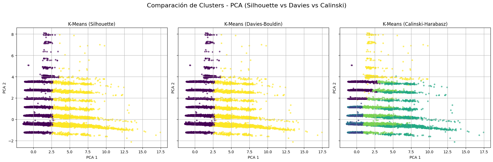
DBSCAN#
Silhouette#
# Definir el rango de parámetros para DBSCAN
param_grid_dbscan = [
{'eps': eps, 'min_samples': min_samples}
for eps in np.arange(0.1, 1.0, 0.1)
for min_samples in range(5, 50, 5)
]
# Objeto para dividir los datos en 3 folds
kf = KFold(n_splits=3, shuffle=True, random_state=42)
results_dbscan = []
print(" Comenzando la búsqueda de hiperparámetros para DBSCAN...\n")
for params in tqdm(param_grid_dbscan, desc="Buscando"):
scores = []
fit_times = []
score_times = []
for train_index, val_index in kf.split(X_sample):
X_train, X_val = X_sample[train_index], X_sample[val_index]
start_fit = time.time()
dbscan_temp = DBSCAN(**params)
labels_train = dbscan_temp.fit_predict(X_train)
fit_times.append(time.time() - start_fit)
start_score = time.time()
score = -1
if len(np.unique(labels_train)) > 1:
labels_val = dbscan_temp.fit_predict(X_val)
if len(np.unique(labels_val)) > 1:
score = silhouette_score(X_val, labels_val)
scores.append(score)
score_times.append(time.time() - start_score)
mean_silhouette = np.mean(scores)
mean_fit_time = np.mean(fit_times)
mean_score_time = np.mean(score_times)
duration = mean_fit_time + mean_score_time
results_dbscan.append((params, mean_silhouette, duration))
tqdm.write(f"Parámetros: {params}, Silhouette Score Promedio: {mean_silhouette:.4f}, Tiempo total: {duration:.2f} segundos")
# Mostrar todos los resultados
print("\n Resultados de la búsqueda:")
for params, score, duration in results_dbscan:
print(f"Parámetros: {params}, Silhouette Score Promedio: {score:.4f}, Tiempo: {duration:.2f} s")
# Obtener los mejores parámetros
best_result = max(results_dbscan, key=lambda x: x[1])
best_params_dbscan = best_result[0]
best_score_dbscan = best_result[1]
print("\n Mejores parámetros encontrados para DBSCAN:")
print(f"Parámetros: {best_params_dbscan}")
print(f" Mejor Silhouette Score: {best_score_dbscan:.4f}")
Comenzando la búsqueda de hiperparámetros para DBSCAN...
Buscando: 0%| | 0/81 [00:00<?, ?it/s]
Buscando: 0%| | 0/81 [02:00<?, ?it/s]
Buscando: 1%|▊ | 1/81 [02:00<2:40:55, 120.69s/it]
Parámetros: {'eps': 0.1, 'min_samples': 5}, Silhouette Score Promedio: 0.2037, Tiempo total: 40.22 segundos
Buscando: 1%|▊ | 1/81 [04:01<2:40:55, 120.69s/it]
Buscando: 2%|█▋ | 2/81 [04:01<2:38:50, 120.64s/it]
Parámetros: {'eps': 0.1, 'min_samples': 10}, Silhouette Score Promedio: 0.2618, Tiempo total: 40.20 segundos
Buscando: 2%|█▋ | 2/81 [06:01<2:38:50, 120.64s/it]
Buscando: 4%|██▌ | 3/81 [06:01<2:36:41, 120.53s/it]
Parámetros: {'eps': 0.1, 'min_samples': 15}, Silhouette Score Promedio: 0.2622, Tiempo total: 40.12 segundos
Buscando: 4%|██▌ | 3/81 [08:01<2:36:41, 120.53s/it]
Buscando: 5%|███▍ | 4/81 [08:01<2:34:28, 120.37s/it]
Parámetros: {'eps': 0.1, 'min_samples': 20}, Silhouette Score Promedio: 0.2805, Tiempo total: 40.03 segundos
Buscando: 5%|███▍ | 4/81 [10:01<2:34:28, 120.37s/it]
Buscando: 6%|████▎ | 5/81 [10:01<2:32:20, 120.27s/it]
Parámetros: {'eps': 0.1, 'min_samples': 25}, Silhouette Score Promedio: 0.2889, Tiempo total: 40.03 segundos
Buscando: 6%|████▎ | 5/81 [12:02<2:32:20, 120.27s/it]
Buscando: 7%|█████▏ | 6/81 [12:02<2:30:17, 120.23s/it]
Parámetros: {'eps': 0.1, 'min_samples': 30}, Silhouette Score Promedio: 0.2600, Tiempo total: 40.04 segundos
Buscando: 7%|█████▏ | 6/81 [14:01<2:30:17, 120.23s/it]
Buscando: 9%|██████ | 7/81 [14:01<2:28:08, 120.11s/it]
Parámetros: {'eps': 0.1, 'min_samples': 35}, Silhouette Score Promedio: 0.3026, Tiempo total: 39.95 segundos
Buscando: 9%|██████ | 7/81 [16:02<2:28:08, 120.11s/it]
Buscando: 10%|██████▉ | 8/81 [16:02<2:26:07, 120.11s/it]
Parámetros: {'eps': 0.1, 'min_samples': 40}, Silhouette Score Promedio: 0.3185, Tiempo total: 40.01 segundos
Buscando: 10%|██████▉ | 8/81 [18:01<2:26:07, 120.11s/it]
Buscando: 11%|███████▊ | 9/81 [18:01<2:24:03, 120.05s/it]
Parámetros: {'eps': 0.1, 'min_samples': 45}, Silhouette Score Promedio: 0.3252, Tiempo total: 39.97 segundos
# Mejores hiperparámetros
best_eps = 0.8
best_min_samples = 5
# Ajustar el modelo final en el subconjunto
dbscan_final = DBSCAN(eps=best_eps, min_samples=best_min_samples)
labels_final = dbscan_final.fit_predict(X_sample)
# Calcular métricas si hay más de un cluster
if len(set(labels_final)) > 1:
silhouette = silhouette_score(X_sample, labels_final)
davies_bouldin = davies_bouldin_score(X_sample, labels_final)
calinski_harabasz = calinski_harabasz_score(X_sample, labels_final)
n_clusters = len(set(labels_final)) - (1 if -1 in labels_final else 0)
print(f" Métricas del modelo final DBSCAN (sobre muestra):")
print(f"• Número de clusters encontrados: {n_clusters}")
print(f"• Silhouette Score: {silhouette:.4f}")
print(f"• Davies-Bouldin Score: {davies_bouldin:.4f}")
print(f"• Calinski-Harabasz Score: {calinski_harabasz:.4f}")
else:
print(" No se pueden calcular las métricas porque DBSCAN no formó más de un cluster válido.")
Métricas del modelo final DBSCAN (sobre muestra):
• Número de clusters encontrados: 110
• Silhouette Score: 0.3539
• Davies-Bouldin Score: 1.6536
• Calinski-Harabasz Score: 5699.6303
Davies - Bouldin#
# Definir el rango de parámetros para DBSCAN
param_grid_dbscan = [
{'eps': eps, 'min_samples': min_samples}
for eps in np.arange(0.1, 1.0, 0.1)
for min_samples in range(5, 50, 5)
]
# Objeto para dividir los datos en 3 folds
kf = KFold(n_splits=3, shuffle=True, random_state=42)
results_dbscan = []
print(" Comenzando la búsqueda de hiperparámetros para DBSCAN con Davies-Bouldin...\n")
for params in tqdm(param_grid_dbscan, desc="Buscando"):
scores = []
fit_times = []
score_times = []
for train_index, val_index in kf.split(X_sample):
X_train, X_val = X_sample[train_index], X_sample[val_index]
start_fit = time.time()
dbscan_temp = DBSCAN(**params)
labels_train = dbscan_temp.fit_predict(X_train)
fit_times.append(time.time() - start_fit)
start_score = time.time()
score = np.inf # Davies-Bouldin se minimiza
if len(np.unique(labels_train)) > 1:
labels_val = dbscan_temp.fit_predict(X_val)
if len(np.unique(labels_val)) > 1:
score = davies_bouldin_score(X_val, labels_val)
scores.append(score)
score_times.append(time.time() - start_score)
mean_db = np.mean(scores)
mean_fit_time = np.mean(fit_times)
mean_score_time = np.mean(score_times)
duration = mean_fit_time + mean_score_time
results_dbscan.append((params, mean_db, duration))
tqdm.write(f"Parámetros: {params}, DB Score Promedio: {mean_db:.4f}, Tiempo total: {duration:.2f} segundos")
# Mostrar todos los resultados
print("\n Resultados de la búsqueda:")
for params, score, duration in results_dbscan:
print(f"Parámetros: {params}, DB Score Promedio: {score:.4f}, Tiempo: {duration:.2f} s")
# Obtener los mejores parámetros (mínimo DB)
best_result = min(results_dbscan, key=lambda x: x[1])
best_params_dbscan = best_result[0]
best_score_dbscan = best_result[1]
print("\n Mejores parámetros encontrados para DBSCAN:")
print(f"Parámetros: {best_params_dbscan}")
print(f"Mejor Davies-Bouldin Score: {best_score_dbscan:.4f}")
🌀 Comenzando la búsqueda de hiperparámetros para DBSCAN con Davies-Bouldin...
Buscando: 1%| | 1/81 [01:19<1:45:36, 79.20s/it]
Parámetros: {'eps': 0.1, 'min_samples': 5}, DB Score Promedio: 1.2574, Tiempo total: 26.39 segundos
Buscando: 2%|▏ | 2/81 [02:37<1:43:45, 78.80s/it]
Parámetros: {'eps': 0.1, 'min_samples': 10}, DB Score Promedio: 1.1944, Tiempo total: 26.16 segundos
Buscando: 4%|▎ | 3/81 [03:55<1:42:03, 78.51s/it]
Parámetros: {'eps': 0.1, 'min_samples': 15}, DB Score Promedio: 1.1763, Tiempo total: 26.05 segundos
Buscando: 5%|▍ | 4/81 [05:13<1:40:28, 78.29s/it]
Parámetros: {'eps': 0.1, 'min_samples': 20}, DB Score Promedio: 1.1101, Tiempo total: 25.97 segundos
Buscando: 6%|▌ | 5/81 [06:35<1:40:47, 79.58s/it]
Parámetros: {'eps': 0.1, 'min_samples': 25}, DB Score Promedio: 1.0603, Tiempo total: 27.28 segundos
Buscando: 7%|▋ | 6/81 [08:02<1:42:27, 81.96s/it]
Parámetros: {'eps': 0.1, 'min_samples': 30}, DB Score Promedio: 1.1028, Tiempo total: 28.86 segundos
Buscando: 9%|▊ | 7/81 [09:23<1:40:47, 81.72s/it]
Parámetros: {'eps': 0.1, 'min_samples': 35}, DB Score Promedio: 1.0640, Tiempo total: 27.07 segundos
Buscando: 10%|▉ | 8/81 [10:46<1:39:51, 82.08s/it]
Parámetros: {'eps': 0.1, 'min_samples': 40}, DB Score Promedio: 1.0517, Tiempo total: 27.61 segundos
Buscando: 11%|█ | 9/81 [12:08<1:38:22, 81.98s/it]
Parámetros: {'eps': 0.1, 'min_samples': 45}, DB Score Promedio: 1.0581, Tiempo total: 27.24 segundos
Buscando: 12%|█▏ | 10/81 [14:16<1:53:55, 96.28s/it]
Parámetros: {'eps': 0.2, 'min_samples': 5}, DB Score Promedio: 1.2918, Tiempo total: 42.76 segundos
Buscando: 14%|█▎ | 11/81 [16:23<2:03:25, 105.79s/it]
Parámetros: {'eps': 0.2, 'min_samples': 10}, DB Score Promedio: 1.2301, Tiempo total: 42.45 segundos
Buscando: 15%|█▍ | 12/81 [18:30<2:09:03, 112.22s/it]
Parámetros: {'eps': 0.2, 'min_samples': 15}, DB Score Promedio: 1.2009, Tiempo total: 42.30 segundos
Buscando: 16%|█▌ | 13/81 [20:38<2:12:26, 116.87s/it]
Parámetros: {'eps': 0.2, 'min_samples': 20}, DB Score Promedio: 1.1454, Tiempo total: 42.51 segundos
Buscando: 17%|█▋ | 14/81 [22:44<2:13:49, 119.84s/it]
Parámetros: {'eps': 0.2, 'min_samples': 25}, DB Score Promedio: 1.0872, Tiempo total: 42.23 segundos
Buscando: 19%|█▊ | 15/81 [24:50<2:13:42, 121.55s/it]
Parámetros: {'eps': 0.2, 'min_samples': 30}, DB Score Promedio: 1.0622, Tiempo total: 41.83 segundos
Buscando: 20%|█▉ | 16/81 [26:58<2:13:37, 123.35s/it]
Parámetros: {'eps': 0.2, 'min_samples': 35}, DB Score Promedio: 1.0653, Tiempo total: 42.51 segundos
Buscando: 21%|██ | 17/81 [29:08<2:13:42, 125.35s/it]
Parámetros: {'eps': 0.2, 'min_samples': 40}, DB Score Promedio: 1.0575, Tiempo total: 43.33 segundos
Buscando: 22%|██▏ | 18/81 [31:14<2:11:53, 125.61s/it]
Parámetros: {'eps': 0.2, 'min_samples': 45}, DB Score Promedio: 1.0259, Tiempo total: 42.06 segundos
Buscando: 23%|██▎ | 19/81 [33:51<2:19:33, 135.06s/it]
Parámetros: {'eps': 0.30000000000000004, 'min_samples': 5}, DB Score Promedio: 1.3937, Tiempo total: 52.35 segundos
Buscando: 25%|██▍ | 20/81 [36:28<2:23:59, 141.63s/it]
Parámetros: {'eps': 0.30000000000000004, 'min_samples': 10}, DB Score Promedio: 1.3411, Tiempo total: 52.31 segundos
Buscando: 26%|██▌ | 21/81 [39:07<2:26:55, 146.93s/it]
Parámetros: {'eps': 0.30000000000000004, 'min_samples': 15}, DB Score Promedio: 1.2807, Tiempo total: 53.09 segundos
Buscando: 27%|██▋ | 22/81 [41:46<2:28:04, 150.58s/it]
Parámetros: {'eps': 0.30000000000000004, 'min_samples': 20}, DB Score Promedio: 1.2522, Tiempo total: 53.01 segundos
Buscando: 28%|██▊ | 23/81 [44:28<2:28:57, 154.09s/it]
Parámetros: {'eps': 0.30000000000000004, 'min_samples': 25}, DB Score Promedio: 1.2379, Tiempo total: 54.09 segundos
Buscando: 30%|██▉ | 24/81 [47:40<2:37:12, 165.48s/it]
Parámetros: {'eps': 0.30000000000000004, 'min_samples': 30}, DB Score Promedio: 1.2206, Tiempo total: 64.01 segundos
Buscando: 31%|███ | 25/81 [50:58<2:43:25, 175.10s/it]
Parámetros: {'eps': 0.30000000000000004, 'min_samples': 35}, DB Score Promedio: 1.1721, Tiempo total: 65.83 segundos
Buscando: 32%|███▏ | 26/81 [54:27<2:49:47, 185.23s/it]
Parámetros: {'eps': 0.30000000000000004, 'min_samples': 40}, DB Score Promedio: 1.1463, Tiempo total: 69.61 segundos
Buscando: 33%|███▎ | 27/81 [58:24<3:00:40, 200.75s/it]
Parámetros: {'eps': 0.30000000000000004, 'min_samples': 45}, DB Score Promedio: 1.1150, Tiempo total: 78.98 segundos
Buscando: 35%|███▍ | 28/81 [1:03:08<3:19:18, 225.63s/it]
Parámetros: {'eps': 0.4, 'min_samples': 5}, DB Score Promedio: 1.4852, Tiempo total: 94.55 segundos
Buscando: 36%|███▌ | 29/81 [1:07:45<3:29:06, 241.29s/it]
Parámetros: {'eps': 0.4, 'min_samples': 10}, DB Score Promedio: 1.4055, Tiempo total: 92.59 segundos
Buscando: 37%|███▋ | 30/81 [1:12:02<3:28:56, 245.81s/it]
Parámetros: {'eps': 0.4, 'min_samples': 15}, DB Score Promedio: 1.3555, Tiempo total: 85.44 segundos
Buscando: 38%|███▊ | 31/81 [1:16:16<3:26:51, 248.23s/it]
Parámetros: {'eps': 0.4, 'min_samples': 20}, DB Score Promedio: 1.3217, Tiempo total: 84.61 segundos
Buscando: 40%|███▉ | 32/81 [1:20:32<3:24:37, 250.56s/it]
Parámetros: {'eps': 0.4, 'min_samples': 25}, DB Score Promedio: 1.2822, Tiempo total: 85.31 segundos
Buscando: 41%|████ | 33/81 [1:24:49<3:22:11, 252.73s/it]
Parámetros: {'eps': 0.4, 'min_samples': 30}, DB Score Promedio: 1.2959, Tiempo total: 85.92 segundos
Buscando: 42%|████▏ | 34/81 [1:29:05<3:18:43, 253.69s/it]
Parámetros: {'eps': 0.4, 'min_samples': 35}, DB Score Promedio: 1.2801, Tiempo total: 85.29 segundos
Buscando: 43%|████▎ | 35/81 [1:32:33<3:03:52, 239.85s/it]
Parámetros: {'eps': 0.4, 'min_samples': 40}, DB Score Promedio: 1.2647, Tiempo total: 69.17 segundos
Buscando: 44%|████▍ | 36/81 [1:36:32<2:59:48, 239.74s/it]
Parámetros: {'eps': 0.4, 'min_samples': 45}, DB Score Promedio: 1.2399, Tiempo total: 79.83 segundos
Buscando: 46%|████▌ | 37/81 [1:40:04<2:49:34, 231.23s/it]
Parámetros: {'eps': 0.5, 'min_samples': 5}, DB Score Promedio: 1.5286, Tiempo total: 70.45 segundos
Buscando: 47%|████▋ | 38/81 [1:44:22<2:51:31, 239.35s/it]
Parámetros: {'eps': 0.5, 'min_samples': 10}, DB Score Promedio: 1.4759, Tiempo total: 86.08 segundos
Buscando: 48%|████▊ | 39/81 [1:47:46<2:40:02, 228.62s/it]
Parámetros: {'eps': 0.5, 'min_samples': 15}, DB Score Promedio: 1.4334, Tiempo total: 67.86 segundos
Buscando: 49%|████▉ | 40/81 [1:51:29<2:35:04, 226.94s/it]
Parámetros: {'eps': 0.5, 'min_samples': 20}, DB Score Promedio: 1.3827, Tiempo total: 74.33 segundos
Buscando: 51%|█████ | 41/81 [1:56:44<2:49:01, 253.54s/it]
Parámetros: {'eps': 0.5, 'min_samples': 25}, DB Score Promedio: 1.3712, Tiempo total: 105.20 segundos
Buscando: 52%|█████▏ | 42/81 [2:01:17<2:48:29, 259.23s/it]
Parámetros: {'eps': 0.5, 'min_samples': 30}, DB Score Promedio: 1.3135, Tiempo total: 90.82 segundos
Buscando: 53%|█████▎ | 43/81 [2:04:36<2:32:42, 241.11s/it]
Parámetros: {'eps': 0.5, 'min_samples': 35}, DB Score Promedio: 1.3155, Tiempo total: 66.27 segundos
Buscando: 54%|█████▍ | 44/81 [2:08:00<2:21:59, 230.26s/it]
Parámetros: {'eps': 0.5, 'min_samples': 40}, DB Score Promedio: 1.3227, Tiempo total: 68.31 segundos
Buscando: 56%|█████▌ | 45/81 [2:11:41<2:16:22, 227.29s/it]
Parámetros: {'eps': 0.5, 'min_samples': 45}, DB Score Promedio: 1.3159, Tiempo total: 73.43 segundos
Buscando: 57%|█████▋ | 46/81 [2:26:48<4:11:29, 431.13s/it]
Parámetros: {'eps': 0.6, 'min_samples': 5}, DB Score Promedio: 1.5665, Tiempo total: 302.23 segundos
Buscando: 58%|█████▊ | 47/81 [2:40:28<5:10:26, 547.83s/it]
Parámetros: {'eps': 0.6, 'min_samples': 10}, DB Score Promedio: 1.5343, Tiempo total: 273.36 segundos
Buscando: 59%|█████▉ | 48/81 [2:44:08<4:07:17, 449.62s/it]
Parámetros: {'eps': 0.6, 'min_samples': 15}, DB Score Promedio: 1.4822, Tiempo total: 73.48 segundos
Buscando: 60%|██████ | 49/81 [2:47:47<3:22:51, 380.36s/it]
Parámetros: {'eps': 0.6, 'min_samples': 20}, DB Score Promedio: 1.4269, Tiempo total: 72.90 segundos
Buscando: 62%|██████▏ | 50/81 [2:51:27<2:51:42, 332.35s/it]
Parámetros: {'eps': 0.6, 'min_samples': 25}, DB Score Promedio: 1.3884, Tiempo total: 73.44 segundos
Buscando: 63%|██████▎ | 51/81 [2:55:01<2:28:22, 296.74s/it]
Parámetros: {'eps': 0.6, 'min_samples': 30}, DB Score Promedio: 1.3851, Tiempo total: 71.21 segundos
Buscando: 64%|██████▍ | 52/81 [2:58:33<2:11:12, 271.47s/it]
Parámetros: {'eps': 0.6, 'min_samples': 35}, DB Score Promedio: 1.3490, Tiempo total: 70.82 segundos
Buscando: 65%|██████▌ | 53/81 [3:02:06<1:58:26, 253.79s/it]
Parámetros: {'eps': 0.6, 'min_samples': 40}, DB Score Promedio: 1.3512, Tiempo total: 70.84 segundos
Buscando: 67%|██████▋ | 54/81 [3:05:40<1:48:52, 241.96s/it]
Parámetros: {'eps': 0.6, 'min_samples': 45}, DB Score Promedio: 1.3626, Tiempo total: 71.45 segundos
Buscando: 68%|██████▊ | 55/81 [3:09:29<1:43:06, 237.93s/it]
Parámetros: {'eps': 0.7000000000000001, 'min_samples': 5}, DB Score Promedio: 1.6059, Tiempo total: 76.17 segundos
Buscando: 69%|██████▉ | 56/81 [3:13:17<1:37:53, 234.95s/it]
Parámetros: {'eps': 0.7000000000000001, 'min_samples': 10}, DB Score Promedio: 1.5795, Tiempo total: 75.99 segundos
Buscando: 70%|███████ | 57/81 [3:17:03<1:32:58, 232.46s/it]
Parámetros: {'eps': 0.7000000000000001, 'min_samples': 15}, DB Score Promedio: 1.5278, Tiempo total: 75.54 segundos
Buscando: 72%|███████▏ | 58/81 [3:20:51<1:28:31, 230.92s/it]
Parámetros: {'eps': 0.7000000000000001, 'min_samples': 20}, DB Score Promedio: 1.4971, Tiempo total: 75.77 segundos
Buscando: 73%|███████▎ | 59/81 [3:24:36<1:24:05, 229.34s/it]
Parámetros: {'eps': 0.7000000000000001, 'min_samples': 25}, DB Score Promedio: 1.4403, Tiempo total: 75.21 segundos
Buscando: 74%|███████▍ | 60/81 [3:28:23<1:19:58, 228.49s/it]
Parámetros: {'eps': 0.7000000000000001, 'min_samples': 30}, DB Score Promedio: 1.4119, Tiempo total: 75.49 segundos
Buscando: 75%|███████▌ | 61/81 [3:32:11<1:16:04, 228.21s/it]
Parámetros: {'eps': 0.7000000000000001, 'min_samples': 35}, DB Score Promedio: 1.3977, Tiempo total: 75.85 segundos
Buscando: 77%|███████▋ | 62/81 [3:35:56<1:11:59, 227.34s/it]
Parámetros: {'eps': 0.7000000000000001, 'min_samples': 40}, DB Score Promedio: 1.3948, Tiempo total: 75.09 segundos
Buscando: 78%|███████▊ | 63/81 [3:39:40<1:07:53, 226.29s/it]
Parámetros: {'eps': 0.7000000000000001, 'min_samples': 45}, DB Score Promedio: 1.3800, Tiempo total: 74.61 segundos
Buscando: 79%|███████▉ | 64/81 [3:43:39<1:05:12, 230.12s/it]
Parámetros: {'eps': 0.8, 'min_samples': 5}, DB Score Promedio: 1.6427, Tiempo total: 79.68 segundos
Buscando: 80%|████████ | 65/81 [3:47:31<1:01:31, 230.70s/it]
Parámetros: {'eps': 0.8, 'min_samples': 10}, DB Score Promedio: 1.6107, Tiempo total: 77.34 segundos
Buscando: 81%|████████▏ | 66/81 [3:51:21<57:37, 230.50s/it]
Parámetros: {'eps': 0.8, 'min_samples': 15}, DB Score Promedio: 1.5567, Tiempo total: 76.67 segundos
Buscando: 83%|████████▎ | 67/81 [3:55:12<53:49, 230.70s/it]
Parámetros: {'eps': 0.8, 'min_samples': 20}, DB Score Promedio: 1.5291, Tiempo total: 77.05 segundos
Buscando: 84%|████████▍ | 68/81 [3:59:04<50:05, 231.19s/it]
Parámetros: {'eps': 0.8, 'min_samples': 25}, DB Score Promedio: 1.4948, Tiempo total: 77.43 segundos
Buscando: 85%|████████▌ | 69/81 [4:02:55<46:14, 231.18s/it]
Parámetros: {'eps': 0.8, 'min_samples': 30}, DB Score Promedio: 1.4391, Tiempo total: 77.06 segundos
Buscando: 86%|████████▋ | 70/81 [4:06:46<42:20, 230.91s/it]
Parámetros: {'eps': 0.8, 'min_samples': 35}, DB Score Promedio: 1.4441, Tiempo total: 76.76 segundos
Buscando: 88%|████████▊ | 71/81 [4:10:39<38:35, 231.55s/it]
Parámetros: {'eps': 0.8, 'min_samples': 40}, DB Score Promedio: 1.4200, Tiempo total: 77.67 segundos
Buscando: 89%|████████▉ | 72/81 [4:14:31<34:45, 231.67s/it]
Parámetros: {'eps': 0.8, 'min_samples': 45}, DB Score Promedio: 1.4134, Tiempo total: 77.32 segundos
Buscando: 90%|█████████ | 73/81 [4:20:52<36:52, 276.52s/it]
Parámetros: {'eps': 0.9, 'min_samples': 5}, DB Score Promedio: 1.7004, Tiempo total: 127.03 segundos
Buscando: 91%|█████████▏| 74/81 [4:27:17<36:04, 309.15s/it]
Parámetros: {'eps': 0.9, 'min_samples': 10}, DB Score Promedio: 1.7760, Tiempo total: 128.39 segundos
Buscando: 93%|█████████▎| 75/81 [4:33:44<33:14, 332.48s/it]
Parámetros: {'eps': 0.9, 'min_samples': 15}, DB Score Promedio: 1.7225, Tiempo total: 128.95 segundos
Buscando: 94%|█████████▍| 76/81 [4:40:16<29:11, 350.32s/it]
Parámetros: {'eps': 0.9, 'min_samples': 20}, DB Score Promedio: 1.6769, Tiempo total: 130.61 segundos
Buscando: 95%|█████████▌| 77/81 [4:46:40<24:01, 360.47s/it]
Parámetros: {'eps': 0.9, 'min_samples': 25}, DB Score Promedio: 1.6501, Tiempo total: 128.02 segundos
Buscando: 96%|█████████▋| 78/81 [4:53:08<18:25, 368.55s/it]
Parámetros: {'eps': 0.9, 'min_samples': 30}, DB Score Promedio: 1.6036, Tiempo total: 129.10 segundos
Buscando: 98%|█████████▊| 79/81 [4:59:32<12:26, 373.44s/it]
Parámetros: {'eps': 0.9, 'min_samples': 35}, DB Score Promedio: 1.6030, Tiempo total: 128.25 segundos
Buscando: 99%|█████████▉| 80/81 [5:05:59<06:17, 377.37s/it]
Parámetros: {'eps': 0.9, 'min_samples': 40}, DB Score Promedio: 1.6648, Tiempo total: 128.81 segundos
Buscando: 100%|██████████| 81/81 [5:12:27<00:00, 231.45s/it]
Parámetros: {'eps': 0.9, 'min_samples': 45}, DB Score Promedio: 1.6701, Tiempo total: 129.25 segundos
Resultados de la búsqueda:
Parámetros: {'eps': 0.1, 'min_samples': 5}, DB Score Promedio: 1.2574, Tiempo: 26.39 s
Parámetros: {'eps': 0.1, 'min_samples': 10}, DB Score Promedio: 1.1944, Tiempo: 26.16 s
Parámetros: {'eps': 0.1, 'min_samples': 15}, DB Score Promedio: 1.1763, Tiempo: 26.05 s
Parámetros: {'eps': 0.1, 'min_samples': 20}, DB Score Promedio: 1.1101, Tiempo: 25.97 s
Parámetros: {'eps': 0.1, 'min_samples': 25}, DB Score Promedio: 1.0603, Tiempo: 27.28 s
Parámetros: {'eps': 0.1, 'min_samples': 30}, DB Score Promedio: 1.1028, Tiempo: 28.86 s
Parámetros: {'eps': 0.1, 'min_samples': 35}, DB Score Promedio: 1.0640, Tiempo: 27.07 s
Parámetros: {'eps': 0.1, 'min_samples': 40}, DB Score Promedio: 1.0517, Tiempo: 27.61 s
Parámetros: {'eps': 0.1, 'min_samples': 45}, DB Score Promedio: 1.0581, Tiempo: 27.24 s
Parámetros: {'eps': 0.2, 'min_samples': 5}, DB Score Promedio: 1.2918, Tiempo: 42.76 s
Parámetros: {'eps': 0.2, 'min_samples': 10}, DB Score Promedio: 1.2301, Tiempo: 42.45 s
Parámetros: {'eps': 0.2, 'min_samples': 15}, DB Score Promedio: 1.2009, Tiempo: 42.30 s
Parámetros: {'eps': 0.2, 'min_samples': 20}, DB Score Promedio: 1.1454, Tiempo: 42.51 s
Parámetros: {'eps': 0.2, 'min_samples': 25}, DB Score Promedio: 1.0872, Tiempo: 42.23 s
Parámetros: {'eps': 0.2, 'min_samples': 30}, DB Score Promedio: 1.0622, Tiempo: 41.83 s
Parámetros: {'eps': 0.2, 'min_samples': 35}, DB Score Promedio: 1.0653, Tiempo: 42.51 s
Parámetros: {'eps': 0.2, 'min_samples': 40}, DB Score Promedio: 1.0575, Tiempo: 43.33 s
Parámetros: {'eps': 0.2, 'min_samples': 45}, DB Score Promedio: 1.0259, Tiempo: 42.06 s
Parámetros: {'eps': 0.30000000000000004, 'min_samples': 5}, DB Score Promedio: 1.3937, Tiempo: 52.35 s
Parámetros: {'eps': 0.30000000000000004, 'min_samples': 10}, DB Score Promedio: 1.3411, Tiempo: 52.31 s
Parámetros: {'eps': 0.30000000000000004, 'min_samples': 15}, DB Score Promedio: 1.2807, Tiempo: 53.09 s
Parámetros: {'eps': 0.30000000000000004, 'min_samples': 20}, DB Score Promedio: 1.2522, Tiempo: 53.01 s
Parámetros: {'eps': 0.30000000000000004, 'min_samples': 25}, DB Score Promedio: 1.2379, Tiempo: 54.09 s
Parámetros: {'eps': 0.30000000000000004, 'min_samples': 30}, DB Score Promedio: 1.2206, Tiempo: 64.01 s
Parámetros: {'eps': 0.30000000000000004, 'min_samples': 35}, DB Score Promedio: 1.1721, Tiempo: 65.83 s
Parámetros: {'eps': 0.30000000000000004, 'min_samples': 40}, DB Score Promedio: 1.1463, Tiempo: 69.61 s
Parámetros: {'eps': 0.30000000000000004, 'min_samples': 45}, DB Score Promedio: 1.1150, Tiempo: 78.98 s
Parámetros: {'eps': 0.4, 'min_samples': 5}, DB Score Promedio: 1.4852, Tiempo: 94.55 s
Parámetros: {'eps': 0.4, 'min_samples': 10}, DB Score Promedio: 1.4055, Tiempo: 92.59 s
Parámetros: {'eps': 0.4, 'min_samples': 15}, DB Score Promedio: 1.3555, Tiempo: 85.44 s
Parámetros: {'eps': 0.4, 'min_samples': 20}, DB Score Promedio: 1.3217, Tiempo: 84.61 s
Parámetros: {'eps': 0.4, 'min_samples': 25}, DB Score Promedio: 1.2822, Tiempo: 85.31 s
Parámetros: {'eps': 0.4, 'min_samples': 30}, DB Score Promedio: 1.2959, Tiempo: 85.92 s
Parámetros: {'eps': 0.4, 'min_samples': 35}, DB Score Promedio: 1.2801, Tiempo: 85.29 s
Parámetros: {'eps': 0.4, 'min_samples': 40}, DB Score Promedio: 1.2647, Tiempo: 69.17 s
Parámetros: {'eps': 0.4, 'min_samples': 45}, DB Score Promedio: 1.2399, Tiempo: 79.83 s
Parámetros: {'eps': 0.5, 'min_samples': 5}, DB Score Promedio: 1.5286, Tiempo: 70.45 s
Parámetros: {'eps': 0.5, 'min_samples': 10}, DB Score Promedio: 1.4759, Tiempo: 86.08 s
Parámetros: {'eps': 0.5, 'min_samples': 15}, DB Score Promedio: 1.4334, Tiempo: 67.86 s
Parámetros: {'eps': 0.5, 'min_samples': 20}, DB Score Promedio: 1.3827, Tiempo: 74.33 s
Parámetros: {'eps': 0.5, 'min_samples': 25}, DB Score Promedio: 1.3712, Tiempo: 105.20 s
Parámetros: {'eps': 0.5, 'min_samples': 30}, DB Score Promedio: 1.3135, Tiempo: 90.82 s
Parámetros: {'eps': 0.5, 'min_samples': 35}, DB Score Promedio: 1.3155, Tiempo: 66.27 s
Parámetros: {'eps': 0.5, 'min_samples': 40}, DB Score Promedio: 1.3227, Tiempo: 68.31 s
Parámetros: {'eps': 0.5, 'min_samples': 45}, DB Score Promedio: 1.3159, Tiempo: 73.43 s
Parámetros: {'eps': 0.6, 'min_samples': 5}, DB Score Promedio: 1.5665, Tiempo: 302.23 s
Parámetros: {'eps': 0.6, 'min_samples': 10}, DB Score Promedio: 1.5343, Tiempo: 273.36 s
Parámetros: {'eps': 0.6, 'min_samples': 15}, DB Score Promedio: 1.4822, Tiempo: 73.48 s
Parámetros: {'eps': 0.6, 'min_samples': 20}, DB Score Promedio: 1.4269, Tiempo: 72.90 s
Parámetros: {'eps': 0.6, 'min_samples': 25}, DB Score Promedio: 1.3884, Tiempo: 73.44 s
Parámetros: {'eps': 0.6, 'min_samples': 30}, DB Score Promedio: 1.3851, Tiempo: 71.21 s
Parámetros: {'eps': 0.6, 'min_samples': 35}, DB Score Promedio: 1.3490, Tiempo: 70.82 s
Parámetros: {'eps': 0.6, 'min_samples': 40}, DB Score Promedio: 1.3512, Tiempo: 70.84 s
Parámetros: {'eps': 0.6, 'min_samples': 45}, DB Score Promedio: 1.3626, Tiempo: 71.45 s
Parámetros: {'eps': 0.7000000000000001, 'min_samples': 5}, DB Score Promedio: 1.6059, Tiempo: 76.17 s
Parámetros: {'eps': 0.7000000000000001, 'min_samples': 10}, DB Score Promedio: 1.5795, Tiempo: 75.99 s
Parámetros: {'eps': 0.7000000000000001, 'min_samples': 15}, DB Score Promedio: 1.5278, Tiempo: 75.54 s
Parámetros: {'eps': 0.7000000000000001, 'min_samples': 20}, DB Score Promedio: 1.4971, Tiempo: 75.77 s
Parámetros: {'eps': 0.7000000000000001, 'min_samples': 25}, DB Score Promedio: 1.4403, Tiempo: 75.21 s
Parámetros: {'eps': 0.7000000000000001, 'min_samples': 30}, DB Score Promedio: 1.4119, Tiempo: 75.49 s
Parámetros: {'eps': 0.7000000000000001, 'min_samples': 35}, DB Score Promedio: 1.3977, Tiempo: 75.85 s
Parámetros: {'eps': 0.7000000000000001, 'min_samples': 40}, DB Score Promedio: 1.3948, Tiempo: 75.09 s
Parámetros: {'eps': 0.7000000000000001, 'min_samples': 45}, DB Score Promedio: 1.3800, Tiempo: 74.61 s
Parámetros: {'eps': 0.8, 'min_samples': 5}, DB Score Promedio: 1.6427, Tiempo: 79.68 s
Parámetros: {'eps': 0.8, 'min_samples': 10}, DB Score Promedio: 1.6107, Tiempo: 77.34 s
Parámetros: {'eps': 0.8, 'min_samples': 15}, DB Score Promedio: 1.5567, Tiempo: 76.67 s
Parámetros: {'eps': 0.8, 'min_samples': 20}, DB Score Promedio: 1.5291, Tiempo: 77.05 s
Parámetros: {'eps': 0.8, 'min_samples': 25}, DB Score Promedio: 1.4948, Tiempo: 77.43 s
Parámetros: {'eps': 0.8, 'min_samples': 30}, DB Score Promedio: 1.4391, Tiempo: 77.06 s
Parámetros: {'eps': 0.8, 'min_samples': 35}, DB Score Promedio: 1.4441, Tiempo: 76.76 s
Parámetros: {'eps': 0.8, 'min_samples': 40}, DB Score Promedio: 1.4200, Tiempo: 77.67 s
Parámetros: {'eps': 0.8, 'min_samples': 45}, DB Score Promedio: 1.4134, Tiempo: 77.32 s
Parámetros: {'eps': 0.9, 'min_samples': 5}, DB Score Promedio: 1.7004, Tiempo: 127.03 s
Parámetros: {'eps': 0.9, 'min_samples': 10}, DB Score Promedio: 1.7760, Tiempo: 128.39 s
Parámetros: {'eps': 0.9, 'min_samples': 15}, DB Score Promedio: 1.7225, Tiempo: 128.95 s
Parámetros: {'eps': 0.9, 'min_samples': 20}, DB Score Promedio: 1.6769, Tiempo: 130.61 s
Parámetros: {'eps': 0.9, 'min_samples': 25}, DB Score Promedio: 1.6501, Tiempo: 128.02 s
Parámetros: {'eps': 0.9, 'min_samples': 30}, DB Score Promedio: 1.6036, Tiempo: 129.10 s
Parámetros: {'eps': 0.9, 'min_samples': 35}, DB Score Promedio: 1.6030, Tiempo: 128.25 s
Parámetros: {'eps': 0.9, 'min_samples': 40}, DB Score Promedio: 1.6648, Tiempo: 128.81 s
Parámetros: {'eps': 0.9, 'min_samples': 45}, DB Score Promedio: 1.6701, Tiempo: 129.25 s
Mejores parámetros encontrados para DBSCAN:
Parámetros: {'eps': 0.2, 'min_samples': 45}
Mejor Davies-Bouldin Score: 1.0259
# Definir directamente los mejores hiperparámetros encontrados
best_eps = 0.2
best_min_samples = 45
# Entrenar el modelo con los mejores parámetros
dbscan_best = DBSCAN(eps=best_eps, min_samples=best_min_samples)
labels_dbscan = dbscan_best.fit_predict(X_sample)
# Calcular métricas (solo si hay más de un cluster válido)
if len(set(labels_dbscan)) > 1:
silhouette_dbscan = silhouette_score(X_sample, labels_dbscan)
davies_bouldin_dbscan = davies_bouldin_score(X_sample, labels_dbscan)
calinski_harabasz_dbscan = calinski_harabasz_score(X_sample, labels_dbscan)
n_clusters_dbscan = len(set(labels_dbscan)) - (1 if -1 in labels_dbscan else 0)
n_noise_dbscan = list(labels_dbscan).count(-1)
print(f"\n🔍 Métricas del modelo DBSCAN con eps={best_eps} y min_samples={best_min_samples}:")
print(f"• Número de clusters encontrados: {n_clusters_dbscan}")
print(f"• Número de puntos ruido: {n_noise_dbscan}")
print(f"• Silhouette Score: {silhouette_dbscan:.4f}")
print(f"• Davies-Bouldin Score: {davies_bouldin_dbscan:.4f}")
print(f"• Calinski-Harabasz Score: {calinski_harabasz_dbscan:.4f}")
else:
print(f"\n❗ DBSCAN con eps={best_eps} y min_samples={best_min_samples} no encontró más de un clúster válido.")
🔍 Métricas del modelo DBSCAN con eps=0.2 y min_samples=45:
• Número de clusters encontrados: 27
• Número de puntos ruido: 9303
• Silhouette Score: 0.3184
• Davies-Bouldin Score: 1.1676
• Calinski-Harabasz Score: 7957.5621
Calinski - Harabasz#
# Definir el rango de parámetros para DBSCAN
param_grid_dbscan = [
{'eps': eps, 'min_samples': min_samples}
for eps in np.arange(0.1, 1.0, 0.1)
for min_samples in range(5, 50, 5)
]
# Objeto para dividir los datos en 3 folds
kf = KFold(n_splits=3, shuffle=True, random_state=42)
results_dbscan_ch = []
print("🔍 Comenzando la búsqueda de hiperparámetros para DBSCAN con Calinski-Harabasz...\n")
for params in tqdm(param_grid_dbscan, desc="Buscando"):
scores = []
fit_times = []
score_times = []
for train_index, val_index in kf.split(X_sample):
X_train, X_val = X_sample[train_index], X_sample[val_index]
start_fit = time.time()
dbscan_temp = DBSCAN(**params)
labels_train = dbscan_temp.fit_predict(X_train)
fit_times.append(time.time() - start_fit)
start_score = time.time()
score = -1 # CH score no es válido con 1 solo cluster
if len(np.unique(labels_train)) > 1:
labels_val = dbscan_temp.fit_predict(X_val)
if len(np.unique(labels_val)) > 1:
score = calinski_harabasz_score(X_val, labels_val)
scores.append(score)
score_times.append(time.time() - start_score)
mean_ch = np.mean(scores)
mean_fit_time = np.mean(fit_times)
mean_score_time = np.mean(score_times)
duration = mean_fit_time + mean_score_time
results_dbscan_ch.append((params, mean_ch, duration))
tqdm.write(f"Parámetros: {params}, CH Score Promedio: {mean_ch:.4f}, Tiempo total: {duration:.2f} segundos")
# Mostrar todos los resultados
print("\n Resultados de la búsqueda:")
for params, score, duration in results_dbscan_ch:
print(f"Parámetros: {params}, CH Score Promedio: {score:.4f}, Tiempo: {duration:.2f} s")
# Obtener los mejores parámetros (máximo CH)
best_result_ch = max(results_dbscan_ch, key=lambda x: x[1])
best_params_dbscan_ch = best_result_ch[0]
best_score_dbscan_ch = best_result_ch[1]
print("\n Mejores parámetros encontrados para DBSCAN (Calinski-Harabasz):")
print(f"Parámetros: {best_params_dbscan_ch}")
print(f"Mejor Calinski-Harabasz Score: {best_score_dbscan_ch:.4f}")
🔍 Comenzando la búsqueda de hiperparámetros para DBSCAN con Calinski-Harabasz...
Buscando: 1%| | 1/81 [01:26<1:55:03, 86.30s/it]
Parámetros: {'eps': 0.1, 'min_samples': 5}, CH Score Promedio: 687.3525, Tiempo total: 28.75 segundos
Buscando: 2%|▏ | 2/81 [02:50<1:51:46, 84.89s/it]
Parámetros: {'eps': 0.1, 'min_samples': 10}, CH Score Promedio: 1424.1599, Tiempo total: 27.96 segundos
Buscando: 4%|▎ | 3/81 [04:11<1:47:59, 83.07s/it]
Parámetros: {'eps': 0.1, 'min_samples': 15}, CH Score Promedio: 1938.9900, Tiempo total: 26.96 segundos
Buscando: 5%|▍ | 4/81 [05:31<1:45:00, 81.82s/it]
Parámetros: {'eps': 0.1, 'min_samples': 20}, CH Score Promedio: 2174.8832, Tiempo total: 26.62 segundos
Buscando: 6%|▌ | 5/81 [06:51<1:42:54, 81.24s/it]
Parámetros: {'eps': 0.1, 'min_samples': 25}, CH Score Promedio: 2368.0556, Tiempo total: 26.72 segundos
Buscando: 7%|▋ | 6/81 [08:11<1:41:02, 80.83s/it]
Parámetros: {'eps': 0.1, 'min_samples': 30}, CH Score Promedio: 2137.2628, Tiempo total: 26.67 segundos
Buscando: 9%|▊ | 7/81 [09:31<1:39:26, 80.63s/it]
Parámetros: {'eps': 0.1, 'min_samples': 35}, CH Score Promedio: 2342.7719, Tiempo total: 26.73 segundos
Buscando: 10%|▉ | 8/81 [10:51<1:38:00, 80.56s/it]
Parámetros: {'eps': 0.1, 'min_samples': 40}, CH Score Promedio: 2340.9401, Tiempo total: 26.79 segundos
Buscando: 11%|█ | 9/81 [12:11<1:36:22, 80.32s/it]
Parámetros: {'eps': 0.1, 'min_samples': 45}, CH Score Promedio: 2381.0914, Tiempo total: 26.58 segundos
Buscando: 12%|█▏ | 10/81 [14:20<1:52:43, 95.26s/it]
Parámetros: {'eps': 0.2, 'min_samples': 5}, CH Score Promedio: 1220.1272, Tiempo total: 42.88 segundos
Buscando: 14%|█▎ | 11/81 [16:27<2:02:25, 104.94s/it]
Parámetros: {'eps': 0.2, 'min_samples': 10}, CH Score Promedio: 2045.9629, Tiempo total: 42.29 segundos
Buscando: 15%|█▍ | 12/81 [18:35<2:08:44, 111.95s/it]
Parámetros: {'eps': 0.2, 'min_samples': 15}, CH Score Promedio: 2574.2550, Tiempo total: 42.65 segundos
Buscando: 16%|█▌ | 13/81 [20:43<2:12:29, 116.91s/it]
Parámetros: {'eps': 0.2, 'min_samples': 20}, CH Score Promedio: 2738.1482, Tiempo total: 42.77 segundos
Buscando: 17%|█▋ | 14/81 [22:51<2:14:24, 120.37s/it]
Parámetros: {'eps': 0.2, 'min_samples': 25}, CH Score Promedio: 3278.9350, Tiempo total: 42.78 segundos
Buscando: 19%|█▊ | 15/81 [25:00<2:15:14, 122.95s/it]
Parámetros: {'eps': 0.2, 'min_samples': 30}, CH Score Promedio: 3536.0696, Tiempo total: 42.97 segundos
Buscando: 20%|█▉ | 16/81 [27:09<2:14:54, 124.53s/it]
Parámetros: {'eps': 0.2, 'min_samples': 35}, CH Score Promedio: 3403.9691, Tiempo total: 42.73 segundos
Buscando: 21%|██ | 17/81 [29:17<2:14:07, 125.74s/it]
Parámetros: {'eps': 0.2, 'min_samples': 40}, CH Score Promedio: 3298.7562, Tiempo total: 42.84 segundos
Buscando: 22%|██▏ | 18/81 [31:25<2:12:45, 126.44s/it]
Parámetros: {'eps': 0.2, 'min_samples': 45}, CH Score Promedio: 3345.8062, Tiempo total: 42.68 segundos
Buscando: 23%|██▎ | 19/81 [34:05<2:21:02, 136.50s/it]
Parámetros: {'eps': 0.30000000000000004, 'min_samples': 5}, CH Score Promedio: 1818.9938, Tiempo total: 53.31 segundos
Buscando: 25%|██▍ | 20/81 [36:45<2:25:50, 143.46s/it]
Parámetros: {'eps': 0.30000000000000004, 'min_samples': 10}, CH Score Promedio: 2305.6039, Tiempo total: 53.21 segundos
Buscando: 26%|██▌ | 21/81 [39:25<2:28:31, 148.53s/it]
Parámetros: {'eps': 0.30000000000000004, 'min_samples': 15}, CH Score Promedio: 2877.5965, Tiempo total: 53.44 segundos
Buscando: 27%|██▋ | 22/81 [42:05<2:29:21, 151.89s/it]
Parámetros: {'eps': 0.30000000000000004, 'min_samples': 20}, CH Score Promedio: 3036.9036, Tiempo total: 53.24 segundos
Buscando: 28%|██▊ | 23/81 [44:45<2:29:21, 154.50s/it]
Parámetros: {'eps': 0.30000000000000004, 'min_samples': 25}, CH Score Promedio: 3140.8074, Tiempo total: 53.51 segundos
Buscando: 30%|██▉ | 24/81 [47:25<2:28:13, 156.02s/it]
Parámetros: {'eps': 0.30000000000000004, 'min_samples': 30}, CH Score Promedio: 3245.1206, Tiempo total: 53.18 segundos
Buscando: 31%|███ | 25/81 [50:03<2:26:14, 156.68s/it]
Parámetros: {'eps': 0.30000000000000004, 'min_samples': 35}, CH Score Promedio: 3487.8863, Tiempo total: 52.72 segundos
Buscando: 32%|███▏ | 26/81 [52:42<2:24:13, 157.34s/it]
Parámetros: {'eps': 0.30000000000000004, 'min_samples': 40}, CH Score Promedio: 3628.1965, Tiempo total: 52.95 segundos
Buscando: 33%|███▎ | 27/81 [55:20<2:21:47, 157.54s/it]
Parámetros: {'eps': 0.30000000000000004, 'min_samples': 45}, CH Score Promedio: 3829.7506, Tiempo total: 52.67 segundos
Buscando: 35%|███▍ | 28/81 [58:24<2:26:05, 165.38s/it]
Parámetros: {'eps': 0.4, 'min_samples': 5}, CH Score Promedio: 2154.9650, Tiempo total: 61.21 segundos
Buscando: 36%|███▌ | 29/81 [1:01:25<2:27:26, 170.12s/it]
Parámetros: {'eps': 0.4, 'min_samples': 10}, CH Score Promedio: 2599.5774, Tiempo total: 60.38 segundos
Buscando: 37%|███▋ | 30/81 [1:04:26<2:27:28, 173.49s/it]
Parámetros: {'eps': 0.4, 'min_samples': 15}, CH Score Promedio: 2936.0245, Tiempo total: 60.45 segundos
Buscando: 38%|███▊ | 31/81 [1:07:29<2:26:44, 176.09s/it]
Parámetros: {'eps': 0.4, 'min_samples': 20}, CH Score Promedio: 3217.0032, Tiempo total: 60.71 segundos
Buscando: 40%|███▉ | 32/81 [1:10:31<2:25:25, 178.07s/it]
Parámetros: {'eps': 0.4, 'min_samples': 25}, CH Score Promedio: 3288.0815, Tiempo total: 60.89 segundos
Buscando: 41%|████ | 33/81 [1:13:33<2:23:25, 179.29s/it]
Parámetros: {'eps': 0.4, 'min_samples': 30}, CH Score Promedio: 3289.2953, Tiempo total: 60.71 segundos
Buscando: 42%|████▏ | 34/81 [1:16:37<2:21:35, 180.75s/it]
Parámetros: {'eps': 0.4, 'min_samples': 35}, CH Score Promedio: 3435.2470, Tiempo total: 61.38 segundos
Buscando: 43%|████▎ | 35/81 [1:19:44<2:19:57, 182.56s/it]
Parámetros: {'eps': 0.4, 'min_samples': 40}, CH Score Promedio: 3489.9058, Tiempo total: 62.24 segundos
Buscando: 44%|████▍ | 36/81 [1:22:49<2:17:22, 183.16s/it]
Parámetros: {'eps': 0.4, 'min_samples': 45}, CH Score Promedio: 3552.0844, Tiempo total: 61.52 segundos
Buscando: 46%|████▌ | 37/81 [1:26:57<2:28:33, 202.59s/it]
Parámetros: {'eps': 0.5, 'min_samples': 5}, CH Score Promedio: 2361.1894, Tiempo total: 82.63 segundos
Buscando: 47%|████▋ | 38/81 [1:31:14<2:37:01, 219.11s/it]
Parámetros: {'eps': 0.5, 'min_samples': 10}, CH Score Promedio: 2803.2024, Tiempo total: 85.88 segundos
Buscando: 48%|████▊ | 39/81 [1:35:26<2:40:13, 228.90s/it]
Parámetros: {'eps': 0.5, 'min_samples': 15}, CH Score Promedio: 2890.5959, Tiempo total: 83.91 segundos
Buscando: 49%|████▉ | 40/81 [1:39:35<2:40:33, 234.97s/it]
Parámetros: {'eps': 0.5, 'min_samples': 20}, CH Score Promedio: 3271.8108, Tiempo total: 83.03 segundos
Buscando: 51%|█████ | 41/81 [1:43:48<2:40:06, 240.16s/it]
Parámetros: {'eps': 0.5, 'min_samples': 25}, CH Score Promedio: 3213.0727, Tiempo total: 84.08 segundos
Buscando: 52%|█████▏ | 42/81 [1:47:54<2:37:20, 242.05s/it]
Parámetros: {'eps': 0.5, 'min_samples': 30}, CH Score Promedio: 3559.1737, Tiempo total: 82.15 segundos
Buscando: 53%|█████▎ | 43/81 [1:52:06<2:35:07, 244.92s/it]
Parámetros: {'eps': 0.5, 'min_samples': 35}, CH Score Promedio: 3573.9763, Tiempo total: 83.87 segundos
Buscando: 54%|█████▍ | 44/81 [1:56:13<2:31:34, 245.79s/it]
Parámetros: {'eps': 0.5, 'min_samples': 40}, CH Score Promedio: 3501.0968, Tiempo total: 82.59 segundos
Buscando: 56%|█████▌ | 45/81 [2:00:23<2:28:03, 246.77s/it]
Parámetros: {'eps': 0.5, 'min_samples': 45}, CH Score Promedio: 3562.1630, Tiempo total: 83.01 segundos
Buscando: 57%|█████▋ | 46/81 [2:04:44<2:26:36, 251.33s/it]
Parámetros: {'eps': 0.6, 'min_samples': 5}, CH Score Promedio: 2378.3928, Tiempo total: 87.31 segundos
Buscando: 58%|█████▊ | 47/81 [2:09:10<2:24:54, 255.72s/it]
Parámetros: {'eps': 0.6, 'min_samples': 10}, CH Score Promedio: 3003.4283, Tiempo total: 88.65 segundos
Buscando: 59%|█████▉ | 48/81 [2:13:33<2:21:48, 257.85s/it]
Parámetros: {'eps': 0.6, 'min_samples': 15}, CH Score Promedio: 3015.9227, Tiempo total: 87.60 segundos
Buscando: 60%|██████ | 49/81 [2:17:55<2:18:09, 259.06s/it]
Parámetros: {'eps': 0.6, 'min_samples': 20}, CH Score Promedio: 3291.7134, Tiempo total: 87.29 segundos
Buscando: 62%|██████▏ | 50/81 [2:22:21<2:14:56, 261.18s/it]
Parámetros: {'eps': 0.6, 'min_samples': 25}, CH Score Promedio: 3572.6401, Tiempo total: 88.69 segundos
Buscando: 63%|██████▎ | 51/81 [2:26:46<2:11:04, 262.15s/it]
Parámetros: {'eps': 0.6, 'min_samples': 30}, CH Score Promedio: 3590.0814, Tiempo total: 88.13 segundos
Buscando: 64%|██████▍ | 52/81 [2:31:07<2:06:34, 261.87s/it]
Parámetros: {'eps': 0.6, 'min_samples': 35}, CH Score Promedio: 3672.2801, Tiempo total: 87.06 segundos
Buscando: 65%|██████▌ | 53/81 [2:35:06<1:58:59, 254.98s/it]
Parámetros: {'eps': 0.6, 'min_samples': 40}, CH Score Promedio: 3691.3938, Tiempo total: 79.62 segundos
Buscando: 67%|██████▋ | 54/81 [2:38:30<1:47:56, 239.85s/it]
Parámetros: {'eps': 0.6, 'min_samples': 45}, CH Score Promedio: 3531.7146, Tiempo total: 68.18 segundos
Buscando: 68%|██████▊ | 55/81 [2:42:15<1:41:59, 235.35s/it]
Parámetros: {'eps': 0.7000000000000001, 'min_samples': 5}, CH Score Promedio: 2499.0472, Tiempo total: 74.94 segundos
Buscando: 69%|██████▉ | 56/81 [2:45:53<1:35:49, 229.98s/it]
Parámetros: {'eps': 0.7000000000000001, 'min_samples': 10}, CH Score Promedio: 3150.7933, Tiempo total: 72.47 segundos
Buscando: 70%|███████ | 57/81 [2:49:30<1:30:31, 226.31s/it]
Parámetros: {'eps': 0.7000000000000001, 'min_samples': 15}, CH Score Promedio: 3212.5994, Tiempo total: 72.58 segundos
Buscando: 72%|███████▏ | 58/81 [2:53:10<1:25:56, 224.22s/it]
Parámetros: {'eps': 0.7000000000000001, 'min_samples': 20}, CH Score Promedio: 3201.4132, Tiempo total: 73.10 segundos
Buscando: 73%|███████▎ | 59/81 [2:56:46<1:21:18, 221.75s/it]
Parámetros: {'eps': 0.7000000000000001, 'min_samples': 25}, CH Score Promedio: 3656.3829, Tiempo total: 71.98 segundos
Buscando: 74%|███████▍ | 60/81 [3:00:26<1:17:26, 221.26s/it]
Parámetros: {'eps': 0.7000000000000001, 'min_samples': 30}, CH Score Promedio: 3657.3993, Tiempo total: 73.37 segundos
Buscando: 75%|███████▌ | 61/81 [3:04:11<1:14:11, 222.58s/it]
Parámetros: {'eps': 0.7000000000000001, 'min_samples': 35}, CH Score Promedio: 3669.4552, Tiempo total: 75.22 segundos
Buscando: 77%|███████▋ | 62/81 [3:08:02<1:11:12, 224.86s/it]
Parámetros: {'eps': 0.7000000000000001, 'min_samples': 40}, CH Score Promedio: 3777.0843, Tiempo total: 76.72 segundos
Buscando: 78%|███████▊ | 63/81 [3:11:53<1:08:02, 226.81s/it]
Parámetros: {'eps': 0.7000000000000001, 'min_samples': 45}, CH Score Promedio: 3764.6035, Tiempo total: 77.12 segundos
Buscando: 79%|███████▉ | 64/81 [3:15:53<1:05:22, 230.73s/it]
Parámetros: {'eps': 0.8, 'min_samples': 5}, CH Score Promedio: 2535.2921, Tiempo total: 79.95 segundos
Buscando: 80%|████████ | 65/81 [3:19:52<1:02:11, 233.24s/it]
Parámetros: {'eps': 0.8, 'min_samples': 10}, CH Score Promedio: 3214.2637, Tiempo total: 79.69 segundos
Buscando: 81%|████████▏ | 66/81 [3:23:51<58:44, 234.95s/it]
Parámetros: {'eps': 0.8, 'min_samples': 15}, CH Score Promedio: 3325.7378, Tiempo total: 79.63 segundos
Buscando: 83%|████████▎ | 67/81 [3:27:55<55:28, 237.74s/it]
Parámetros: {'eps': 0.8, 'min_samples': 20}, CH Score Promedio: 3356.6382, Tiempo total: 81.41 segundos
Buscando: 84%|████████▍ | 68/81 [3:31:53<51:29, 237.64s/it]
Parámetros: {'eps': 0.8, 'min_samples': 25}, CH Score Promedio: 3573.3457, Tiempo total: 79.13 segundos
Buscando: 85%|████████▌ | 69/81 [3:35:52<47:38, 238.23s/it]
Parámetros: {'eps': 0.8, 'min_samples': 30}, CH Score Promedio: 3811.5859, Tiempo total: 79.87 segundos
Buscando: 86%|████████▋ | 70/81 [3:39:57<44:02, 240.18s/it]
Parámetros: {'eps': 0.8, 'min_samples': 35}, CH Score Promedio: 3628.9251, Tiempo total: 81.57 segundos
Buscando: 88%|████████▊ | 71/81 [3:44:02<40:15, 241.53s/it]
Parámetros: {'eps': 0.8, 'min_samples': 40}, CH Score Promedio: 3796.4637, Tiempo total: 81.55 segundos
Buscando: 89%|████████▉ | 72/81 [3:48:04<36:14, 241.65s/it]
Parámetros: {'eps': 0.8, 'min_samples': 45}, CH Score Promedio: 3819.8131, Tiempo total: 80.63 segundos
Buscando: 90%|█████████ | 73/81 [3:54:38<38:20, 287.57s/it]
Parámetros: {'eps': 0.9, 'min_samples': 5}, CH Score Promedio: 3002.5113, Tiempo total: 131.55 segundos
Buscando: 91%|█████████▏| 74/81 [4:01:24<37:41, 323.01s/it]
Parámetros: {'eps': 0.9, 'min_samples': 10}, CH Score Promedio: 3833.1627, Tiempo total: 135.19 segundos
Buscando: 93%|█████████▎| 75/81 [4:08:01<34:32, 345.35s/it]
Parámetros: {'eps': 0.9, 'min_samples': 15}, CH Score Promedio: 4076.8049, Tiempo total: 132.45 segundos
Buscando: 94%|█████████▍| 76/81 [4:14:29<29:49, 357.93s/it]
Parámetros: {'eps': 0.9, 'min_samples': 20}, CH Score Promedio: 3997.9276, Tiempo total: 129.06 segundos
Buscando: 95%|█████████▌| 77/81 [4:20:57<24:28, 367.11s/it]
Parámetros: {'eps': 0.9, 'min_samples': 25}, CH Score Promedio: 4290.7456, Tiempo total: 129.49 segundos
Buscando: 96%|█████████▋| 78/81 [4:27:32<18:46, 375.37s/it]
Parámetros: {'eps': 0.9, 'min_samples': 30}, CH Score Promedio: 4455.5229, Tiempo total: 131.50 segundos
Buscando: 98%|█████████▊| 79/81 [4:34:04<12:40, 380.42s/it]
Parámetros: {'eps': 0.9, 'min_samples': 35}, CH Score Promedio: 4553.0719, Tiempo total: 130.69 segundos
Buscando: 99%|█████████▉| 80/81 [4:40:50<06:27, 388.00s/it]
Parámetros: {'eps': 0.9, 'min_samples': 40}, CH Score Promedio: 4420.6019, Tiempo total: 135.19 segundos
Buscando: 100%|██████████| 81/81 [4:47:31<00:00, 212.98s/it]
Parámetros: {'eps': 0.9, 'min_samples': 45}, CH Score Promedio: 4372.8803, Tiempo total: 133.78 segundos
Resultados de la búsqueda:
Parámetros: {'eps': 0.1, 'min_samples': 5}, CH Score Promedio: 687.3525, Tiempo: 28.75 s
Parámetros: {'eps': 0.1, 'min_samples': 10}, CH Score Promedio: 1424.1599, Tiempo: 27.96 s
Parámetros: {'eps': 0.1, 'min_samples': 15}, CH Score Promedio: 1938.9900, Tiempo: 26.96 s
Parámetros: {'eps': 0.1, 'min_samples': 20}, CH Score Promedio: 2174.8832, Tiempo: 26.62 s
Parámetros: {'eps': 0.1, 'min_samples': 25}, CH Score Promedio: 2368.0556, Tiempo: 26.72 s
Parámetros: {'eps': 0.1, 'min_samples': 30}, CH Score Promedio: 2137.2628, Tiempo: 26.67 s
Parámetros: {'eps': 0.1, 'min_samples': 35}, CH Score Promedio: 2342.7719, Tiempo: 26.73 s
Parámetros: {'eps': 0.1, 'min_samples': 40}, CH Score Promedio: 2340.9401, Tiempo: 26.79 s
Parámetros: {'eps': 0.1, 'min_samples': 45}, CH Score Promedio: 2381.0914, Tiempo: 26.58 s
Parámetros: {'eps': 0.2, 'min_samples': 5}, CH Score Promedio: 1220.1272, Tiempo: 42.88 s
Parámetros: {'eps': 0.2, 'min_samples': 10}, CH Score Promedio: 2045.9629, Tiempo: 42.29 s
Parámetros: {'eps': 0.2, 'min_samples': 15}, CH Score Promedio: 2574.2550, Tiempo: 42.65 s
Parámetros: {'eps': 0.2, 'min_samples': 20}, CH Score Promedio: 2738.1482, Tiempo: 42.77 s
Parámetros: {'eps': 0.2, 'min_samples': 25}, CH Score Promedio: 3278.9350, Tiempo: 42.78 s
Parámetros: {'eps': 0.2, 'min_samples': 30}, CH Score Promedio: 3536.0696, Tiempo: 42.97 s
Parámetros: {'eps': 0.2, 'min_samples': 35}, CH Score Promedio: 3403.9691, Tiempo: 42.73 s
Parámetros: {'eps': 0.2, 'min_samples': 40}, CH Score Promedio: 3298.7562, Tiempo: 42.84 s
Parámetros: {'eps': 0.2, 'min_samples': 45}, CH Score Promedio: 3345.8062, Tiempo: 42.68 s
Parámetros: {'eps': 0.30000000000000004, 'min_samples': 5}, CH Score Promedio: 1818.9938, Tiempo: 53.31 s
Parámetros: {'eps': 0.30000000000000004, 'min_samples': 10}, CH Score Promedio: 2305.6039, Tiempo: 53.21 s
Parámetros: {'eps': 0.30000000000000004, 'min_samples': 15}, CH Score Promedio: 2877.5965, Tiempo: 53.44 s
Parámetros: {'eps': 0.30000000000000004, 'min_samples': 20}, CH Score Promedio: 3036.9036, Tiempo: 53.24 s
Parámetros: {'eps': 0.30000000000000004, 'min_samples': 25}, CH Score Promedio: 3140.8074, Tiempo: 53.51 s
Parámetros: {'eps': 0.30000000000000004, 'min_samples': 30}, CH Score Promedio: 3245.1206, Tiempo: 53.18 s
Parámetros: {'eps': 0.30000000000000004, 'min_samples': 35}, CH Score Promedio: 3487.8863, Tiempo: 52.72 s
Parámetros: {'eps': 0.30000000000000004, 'min_samples': 40}, CH Score Promedio: 3628.1965, Tiempo: 52.95 s
Parámetros: {'eps': 0.30000000000000004, 'min_samples': 45}, CH Score Promedio: 3829.7506, Tiempo: 52.67 s
Parámetros: {'eps': 0.4, 'min_samples': 5}, CH Score Promedio: 2154.9650, Tiempo: 61.21 s
Parámetros: {'eps': 0.4, 'min_samples': 10}, CH Score Promedio: 2599.5774, Tiempo: 60.38 s
Parámetros: {'eps': 0.4, 'min_samples': 15}, CH Score Promedio: 2936.0245, Tiempo: 60.45 s
Parámetros: {'eps': 0.4, 'min_samples': 20}, CH Score Promedio: 3217.0032, Tiempo: 60.71 s
Parámetros: {'eps': 0.4, 'min_samples': 25}, CH Score Promedio: 3288.0815, Tiempo: 60.89 s
Parámetros: {'eps': 0.4, 'min_samples': 30}, CH Score Promedio: 3289.2953, Tiempo: 60.71 s
Parámetros: {'eps': 0.4, 'min_samples': 35}, CH Score Promedio: 3435.2470, Tiempo: 61.38 s
Parámetros: {'eps': 0.4, 'min_samples': 40}, CH Score Promedio: 3489.9058, Tiempo: 62.24 s
Parámetros: {'eps': 0.4, 'min_samples': 45}, CH Score Promedio: 3552.0844, Tiempo: 61.52 s
Parámetros: {'eps': 0.5, 'min_samples': 5}, CH Score Promedio: 2361.1894, Tiempo: 82.63 s
Parámetros: {'eps': 0.5, 'min_samples': 10}, CH Score Promedio: 2803.2024, Tiempo: 85.88 s
Parámetros: {'eps': 0.5, 'min_samples': 15}, CH Score Promedio: 2890.5959, Tiempo: 83.91 s
Parámetros: {'eps': 0.5, 'min_samples': 20}, CH Score Promedio: 3271.8108, Tiempo: 83.03 s
Parámetros: {'eps': 0.5, 'min_samples': 25}, CH Score Promedio: 3213.0727, Tiempo: 84.08 s
Parámetros: {'eps': 0.5, 'min_samples': 30}, CH Score Promedio: 3559.1737, Tiempo: 82.15 s
Parámetros: {'eps': 0.5, 'min_samples': 35}, CH Score Promedio: 3573.9763, Tiempo: 83.87 s
Parámetros: {'eps': 0.5, 'min_samples': 40}, CH Score Promedio: 3501.0968, Tiempo: 82.59 s
Parámetros: {'eps': 0.5, 'min_samples': 45}, CH Score Promedio: 3562.1630, Tiempo: 83.01 s
Parámetros: {'eps': 0.6, 'min_samples': 5}, CH Score Promedio: 2378.3928, Tiempo: 87.31 s
Parámetros: {'eps': 0.6, 'min_samples': 10}, CH Score Promedio: 3003.4283, Tiempo: 88.65 s
Parámetros: {'eps': 0.6, 'min_samples': 15}, CH Score Promedio: 3015.9227, Tiempo: 87.60 s
Parámetros: {'eps': 0.6, 'min_samples': 20}, CH Score Promedio: 3291.7134, Tiempo: 87.29 s
Parámetros: {'eps': 0.6, 'min_samples': 25}, CH Score Promedio: 3572.6401, Tiempo: 88.69 s
Parámetros: {'eps': 0.6, 'min_samples': 30}, CH Score Promedio: 3590.0814, Tiempo: 88.13 s
Parámetros: {'eps': 0.6, 'min_samples': 35}, CH Score Promedio: 3672.2801, Tiempo: 87.06 s
Parámetros: {'eps': 0.6, 'min_samples': 40}, CH Score Promedio: 3691.3938, Tiempo: 79.62 s
Parámetros: {'eps': 0.6, 'min_samples': 45}, CH Score Promedio: 3531.7146, Tiempo: 68.18 s
Parámetros: {'eps': 0.7000000000000001, 'min_samples': 5}, CH Score Promedio: 2499.0472, Tiempo: 74.94 s
Parámetros: {'eps': 0.7000000000000001, 'min_samples': 10}, CH Score Promedio: 3150.7933, Tiempo: 72.47 s
Parámetros: {'eps': 0.7000000000000001, 'min_samples': 15}, CH Score Promedio: 3212.5994, Tiempo: 72.58 s
Parámetros: {'eps': 0.7000000000000001, 'min_samples': 20}, CH Score Promedio: 3201.4132, Tiempo: 73.10 s
Parámetros: {'eps': 0.7000000000000001, 'min_samples': 25}, CH Score Promedio: 3656.3829, Tiempo: 71.98 s
Parámetros: {'eps': 0.7000000000000001, 'min_samples': 30}, CH Score Promedio: 3657.3993, Tiempo: 73.37 s
Parámetros: {'eps': 0.7000000000000001, 'min_samples': 35}, CH Score Promedio: 3669.4552, Tiempo: 75.22 s
Parámetros: {'eps': 0.7000000000000001, 'min_samples': 40}, CH Score Promedio: 3777.0843, Tiempo: 76.72 s
Parámetros: {'eps': 0.7000000000000001, 'min_samples': 45}, CH Score Promedio: 3764.6035, Tiempo: 77.12 s
Parámetros: {'eps': 0.8, 'min_samples': 5}, CH Score Promedio: 2535.2921, Tiempo: 79.95 s
Parámetros: {'eps': 0.8, 'min_samples': 10}, CH Score Promedio: 3214.2637, Tiempo: 79.69 s
Parámetros: {'eps': 0.8, 'min_samples': 15}, CH Score Promedio: 3325.7378, Tiempo: 79.63 s
Parámetros: {'eps': 0.8, 'min_samples': 20}, CH Score Promedio: 3356.6382, Tiempo: 81.41 s
Parámetros: {'eps': 0.8, 'min_samples': 25}, CH Score Promedio: 3573.3457, Tiempo: 79.13 s
Parámetros: {'eps': 0.8, 'min_samples': 30}, CH Score Promedio: 3811.5859, Tiempo: 79.87 s
Parámetros: {'eps': 0.8, 'min_samples': 35}, CH Score Promedio: 3628.9251, Tiempo: 81.57 s
Parámetros: {'eps': 0.8, 'min_samples': 40}, CH Score Promedio: 3796.4637, Tiempo: 81.55 s
Parámetros: {'eps': 0.8, 'min_samples': 45}, CH Score Promedio: 3819.8131, Tiempo: 80.63 s
Parámetros: {'eps': 0.9, 'min_samples': 5}, CH Score Promedio: 3002.5113, Tiempo: 131.55 s
Parámetros: {'eps': 0.9, 'min_samples': 10}, CH Score Promedio: 3833.1627, Tiempo: 135.19 s
Parámetros: {'eps': 0.9, 'min_samples': 15}, CH Score Promedio: 4076.8049, Tiempo: 132.45 s
Parámetros: {'eps': 0.9, 'min_samples': 20}, CH Score Promedio: 3997.9276, Tiempo: 129.06 s
Parámetros: {'eps': 0.9, 'min_samples': 25}, CH Score Promedio: 4290.7456, Tiempo: 129.49 s
Parámetros: {'eps': 0.9, 'min_samples': 30}, CH Score Promedio: 4455.5229, Tiempo: 131.50 s
Parámetros: {'eps': 0.9, 'min_samples': 35}, CH Score Promedio: 4553.0719, Tiempo: 130.69 s
Parámetros: {'eps': 0.9, 'min_samples': 40}, CH Score Promedio: 4420.6019, Tiempo: 135.19 s
Parámetros: {'eps': 0.9, 'min_samples': 45}, CH Score Promedio: 4372.8803, Tiempo: 133.78 s
Mejores parámetros encontrados para DBSCAN (Calinski-Harabasz):
Parámetros: {'eps': 0.9, 'min_samples': 35}
Mejor Calinski-Harabasz Score: 4553.0719
# Definir los mejores parámetros encontrados previamente por Calinski-Harabasz
best_params_dbscan_ch = {
'eps': 0.9,
'min_samples': 35
}
# Crear el modelo con los mejores parámetros
dbscan_ch = DBSCAN(**best_params_dbscan_ch)
# Ajustar el modelo al conjunto de datos
labels_dbscan_ch = dbscan_ch.fit_predict(X_sample)
# Contar número de clusters (sin incluir ruido)
n_clusters_ch = len(set(labels_dbscan_ch)) - (1 if -1 in labels_dbscan_ch else 0)
print(f"\nNúmero de clusters encontrados por DBSCAN: {n_clusters_ch}")
# Calcular métricas solo si hay más de 1 cluster
if n_clusters_ch > 1:
silhouette_ch = silhouette_score(X_sample, labels_dbscan_ch)
davies_ch = davies_bouldin_score(X_sample, labels_dbscan_ch)
calinski_ch = calinski_harabasz_score(X_sample, labels_dbscan_ch)
print("\n Métricas del modelo DBSCAN (optimizadas por Calinski-Harabasz):")
print(f"Silhouette Score: {silhouette_ch:.4f}")
print(f"Davies-Bouldin Score: {davies_ch:.4f}")
print(f"Calinski-Harabasz Score: {calinski_ch:.4f}")
else:
print("\n DBSCAN detectó menos de 2 clusters. No se pueden calcular métricas.")
Número de clusters encontrados por DBSCAN: 18
Métricas del modelo DBSCAN (optimizadas por Calinski-Harabasz):
Silhouette Score: 0.3015
Davies-Bouldin Score: 1.7664
Calinski-Harabasz Score: 12008.1103
Visualización Clusters DBSCAN#
Silhouette
# Aplicar PCA para reducir a 2 dimensiones solo para visualizar
pca = PCA(n_components=2)
X_pca = pca.fit_transform(X_sample)
# Visualizar los clusters con colores según etiquetas de DBSCAN
plt.figure(figsize=(10, 6))
scatter = plt.scatter(X_pca[:, 0], X_pca[:, 1],
c=labels_final, cmap='viridis', s=60, alpha=0.7, edgecolors='k')
plt.xlabel('PCA 1')
plt.ylabel('PCA 2')
plt.title('Clusters visualizados con PCA (DBSCAN)')
plt.colorbar(scatter, label='Etiqueta de Cluster')
plt.grid(True)
plt.tight_layout()
plt.show()

Davies - Bouldin
# Reducir dimensionalidad para visualización
pca = PCA(n_components=2)
X_pca = pca.fit_transform(X_sample)
# Graficar con colores según etiquetas
plt.figure(figsize=(10, 6))
scatter = plt.scatter(
X_pca[:, 0], X_pca[:, 1],
c=labels_dbscan_davies, # asegúrate que esto contenga las etiquetas correctas
cmap='nipy_spectral', # puedes cambiar por 'tab20', 'tab10', 'hsv', etc.
s=50, alpha=0.8, edgecolors='k', linewidth=0.4
)
plt.xlabel('PCA 1')
plt.ylabel('PCA 2')
plt.title('Clusters visualizados con PCA (DBSCAN - Davies-Bouldin)')
cbar = plt.colorbar(scatter, label='Etiqueta de Cluster')
plt.grid(True)
plt.tight_layout()
plt.show()
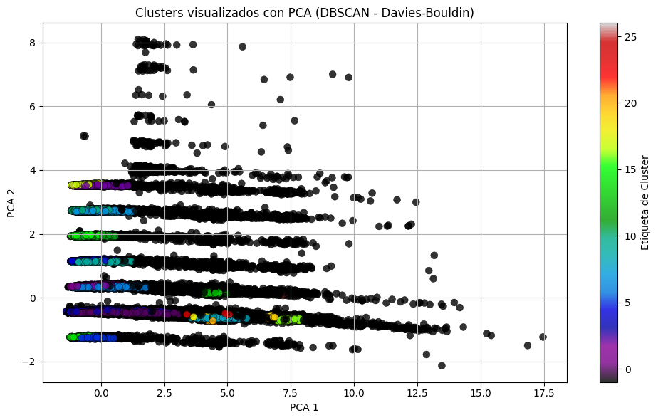
Calinski - Harabasz
# Reducimos a 2D para visualización
pca = PCA(n_components=2)
X_pca_ch = pca.fit_transform(X_sample)
# Visualizar
plt.figure(figsize=(10, 6))
scatter = plt.scatter(X_pca_ch[:, 0], X_pca_ch[:, 1],
c=labels_ch, cmap='tab20', s=60, alpha=0.7, edgecolors='k')
plt.xlabel('PCA 1')
plt.ylabel('PCA 2')
plt.title('Clusters (DBSCAN + Calinski-Harabasz)')
plt.colorbar(scatter, label='Etiqueta de Cluster')
plt.grid(True)
plt.tight_layout()
plt.show()
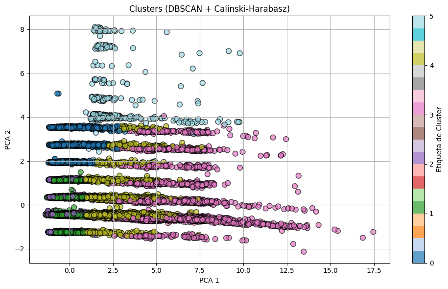
BIRCH#
Silhouette#
# Definir el grid de parámetros
param_grid = {
'n_clusters': [2, 3, 4, 5],
'threshold': [0.1, 0.3, 0.5],
'branching_factor': [25, 50, 75]
}
# Modelo base
birch = Birch()
# Función de scoring con Silhouette
def silhouette_scorer(estimator, X):
labels = estimator.fit_predict(X)
if len(np.unique(labels)) < 2: # Silhouette no es válido con 1 solo cluster
return -1
return silhouette_score(X, labels)
# GridSearchCV
grid_search = GridSearchCV(birch, param_grid, cv=3, scoring=silhouette_scorer)
print(" Buscando mejores parámetros para BIRCH usando Silhouette Score...")
grid_search.fit(X_sample)
# Resultados
results = []
for i in range(len(grid_search.cv_results_['params'])):
params = grid_search.cv_results_['params'][i]
mean_silhouette = grid_search.cv_results_['mean_test_score'][i]
duration = grid_search.cv_results_['mean_fit_time'][i] + grid_search.cv_results_['mean_score_time'][i]
results.append((params, mean_silhouette, duration))
print(f"Parámetros: {params}, Score Promedio (Silhouette): {mean_silhouette:.4f}, Tiempo: {duration:.2f} segundos")
# Mostrar mejores parámetros
print("\n Mejores parámetros encontrados:")
print(grid_search.best_params_)
Buscando mejores parámetros para BIRCH usando Silhouette Score...
Parámetros: {'branching_factor': 25, 'n_clusters': 2, 'threshold': 0.1}, Score Promedio (Silhouette): 0.8857, Tiempo: 22.01 segundos
Parámetros: {'branching_factor': 25, 'n_clusters': 2, 'threshold': 0.3}, Score Promedio (Silhouette): 0.8857, Tiempo: 21.60 segundos
Parámetros: {'branching_factor': 25, 'n_clusters': 2, 'threshold': 0.5}, Score Promedio (Silhouette): 0.8856, Tiempo: 20.93 segundos
Parámetros: {'branching_factor': 25, 'n_clusters': 3, 'threshold': 0.1}, Score Promedio (Silhouette): 0.7236, Tiempo: 21.88 segundos
Parámetros: {'branching_factor': 25, 'n_clusters': 3, 'threshold': 0.3}, Score Promedio (Silhouette): 0.7236, Tiempo: 21.17 segundos
Parámetros: {'branching_factor': 25, 'n_clusters': 3, 'threshold': 0.5}, Score Promedio (Silhouette): 0.7223, Tiempo: 20.70 segundos
Parámetros: {'branching_factor': 25, 'n_clusters': 4, 'threshold': 0.1}, Score Promedio (Silhouette): 0.5739, Tiempo: 21.69 segundos
Parámetros: {'branching_factor': 25, 'n_clusters': 4, 'threshold': 0.3}, Score Promedio (Silhouette): 0.7003, Tiempo: 21.10 segundos
Parámetros: {'branching_factor': 25, 'n_clusters': 4, 'threshold': 0.5}, Score Promedio (Silhouette): 0.7153, Tiempo: 21.16 segundos
Parámetros: {'branching_factor': 25, 'n_clusters': 5, 'threshold': 0.1}, Score Promedio (Silhouette): 0.5737, Tiempo: 22.88 segundos
Parámetros: {'branching_factor': 25, 'n_clusters': 5, 'threshold': 0.3}, Score Promedio (Silhouette): 0.6585, Tiempo: 21.77 segundos
Parámetros: {'branching_factor': 25, 'n_clusters': 5, 'threshold': 0.5}, Score Promedio (Silhouette): 0.6749, Tiempo: 20.47 segundos
Parámetros: {'branching_factor': 50, 'n_clusters': 2, 'threshold': 0.1}, Score Promedio (Silhouette): 0.8857, Tiempo: 21.65 segundos
Parámetros: {'branching_factor': 50, 'n_clusters': 2, 'threshold': 0.3}, Score Promedio (Silhouette): 0.8857, Tiempo: 20.42 segundos
Parámetros: {'branching_factor': 50, 'n_clusters': 2, 'threshold': 0.5}, Score Promedio (Silhouette): 0.8856, Tiempo: 20.48 segundos
Parámetros: {'branching_factor': 50, 'n_clusters': 3, 'threshold': 0.1}, Score Promedio (Silhouette): 0.7236, Tiempo: 21.33 segundos
Parámetros: {'branching_factor': 50, 'n_clusters': 3, 'threshold': 0.3}, Score Promedio (Silhouette): 0.7236, Tiempo: 20.32 segundos
Parámetros: {'branching_factor': 50, 'n_clusters': 3, 'threshold': 0.5}, Score Promedio (Silhouette): 0.7234, Tiempo: 20.00 segundos
Parámetros: {'branching_factor': 50, 'n_clusters': 4, 'threshold': 0.1}, Score Promedio (Silhouette): 0.6475, Tiempo: 21.20 segundos
Parámetros: {'branching_factor': 50, 'n_clusters': 4, 'threshold': 0.3}, Score Promedio (Silhouette): 0.7043, Tiempo: 20.13 segundos
Parámetros: {'branching_factor': 50, 'n_clusters': 4, 'threshold': 0.5}, Score Promedio (Silhouette): 0.7164, Tiempo: 19.99 segundos
Parámetros: {'branching_factor': 50, 'n_clusters': 5, 'threshold': 0.1}, Score Promedio (Silhouette): 0.6480, Tiempo: 21.37 segundos
Parámetros: {'branching_factor': 50, 'n_clusters': 5, 'threshold': 0.3}, Score Promedio (Silhouette): 0.6460, Tiempo: 19.99 segundos
Parámetros: {'branching_factor': 50, 'n_clusters': 5, 'threshold': 0.5}, Score Promedio (Silhouette): 0.6619, Tiempo: 19.98 segundos
Parámetros: {'branching_factor': 75, 'n_clusters': 2, 'threshold': 0.1}, Score Promedio (Silhouette): 0.8857, Tiempo: 21.14 segundos
Parámetros: {'branching_factor': 75, 'n_clusters': 2, 'threshold': 0.3}, Score Promedio (Silhouette): 0.8857, Tiempo: 20.58 segundos
Parámetros: {'branching_factor': 75, 'n_clusters': 2, 'threshold': 0.5}, Score Promedio (Silhouette): 0.8856, Tiempo: 20.10 segundos
Parámetros: {'branching_factor': 75, 'n_clusters': 3, 'threshold': 0.1}, Score Promedio (Silhouette): 0.7236, Tiempo: 20.92 segundos
Parámetros: {'branching_factor': 75, 'n_clusters': 3, 'threshold': 0.3}, Score Promedio (Silhouette): 0.7236, Tiempo: 20.03 segundos
Parámetros: {'branching_factor': 75, 'n_clusters': 3, 'threshold': 0.5}, Score Promedio (Silhouette): 0.7236, Tiempo: 19.99 segundos
Parámetros: {'branching_factor': 75, 'n_clusters': 4, 'threshold': 0.1}, Score Promedio (Silhouette): 0.6331, Tiempo: 20.93 segundos
Parámetros: {'branching_factor': 75, 'n_clusters': 4, 'threshold': 0.3}, Score Promedio (Silhouette): 0.7064, Tiempo: 20.34 segundos
Parámetros: {'branching_factor': 75, 'n_clusters': 4, 'threshold': 0.5}, Score Promedio (Silhouette): 0.7166, Tiempo: 20.06 segundos
Parámetros: {'branching_factor': 75, 'n_clusters': 5, 'threshold': 0.1}, Score Promedio (Silhouette): 0.5654, Tiempo: 20.56 segundos
Parámetros: {'branching_factor': 75, 'n_clusters': 5, 'threshold': 0.3}, Score Promedio (Silhouette): 0.6320, Tiempo: 20.02 segundos
Parámetros: {'branching_factor': 75, 'n_clusters': 5, 'threshold': 0.5}, Score Promedio (Silhouette): 0.6385, Tiempo: 20.06 segundos
Mejores parámetros encontrados:
{'branching_factor': 25, 'n_clusters': 2, 'threshold': 0.1}
# Recuperar los mejores parámetros del grid anterior
best_params_silhouette = grid_search.best_params_
# Crear y entrenar modelo final
birch_silhouette = Birch(**best_params_silhouette)
labels_birch_silhouette = birch_silhouette.fit_predict(X_sample)
# Calcular métricas
silhouette_birch = silhouette_score(X_sample, labels_birch_silhouette)
davies_bouldin_birch = davies_bouldin_score(X_sample, labels_birch_silhouette)
calinski_harabasz_birch = calinski_harabasz_score(X_sample, labels_birch_silhouette)
# Mostrar resultados
print("\n Métricas del modelo BIRCH (opt. Silhouette):")
print(f"Silhouette Score: {silhouette_birch:.4f}")
print(f"Davies-Bouldin Score: {davies_bouldin_birch:.4f}")
print(f"Calinski-Harabasz Score: {calinski_harabasz_birch:.4f}")
Métricas del modelo BIRCH (opt. Silhouette):
Silhouette Score: 0.8052
Davies-Bouldin Score: 0.3467
Calinski-Harabasz Score: 20138.0672
Davies - Bouldin#
param_grid = {
'n_clusters': [2, 3, 4, 5],
'threshold': [0.1, 0.3, 0.5],
'branching_factor': [25, 50, 75]
}
# MODELO BASE
birch = Birch()
def negative_davies_bouldin(estimator, X):
labels = estimator.fit_predict(X)
score = davies_bouldin_score(X, labels)
return -score # GridSearch maximiza, así que usamos negativo
# GRILLA
grid_search = GridSearchCV(birch, param_grid, cv=3, scoring=negative_davies_bouldin)
print(" Buscando mejores parámetros para BIRCH...")
grid_search.fit(X_sample)
# IMPRIMIR LOS RESULTADOS
results = []
for i in range(len(grid_search.cv_results_['params'])):
params = grid_search.cv_results_['params'][i]
mean_neg_db = grid_search.cv_results_['mean_test_score'][i]
duration = grid_search.cv_results_['mean_fit_time'][i] + grid_search.cv_results_['mean_score_time'][i]
results.append((params, mean_neg_db, duration))
print(f"Parámetros: {params}, Score Promedio (neg_Davies-Bouldin): {mean_neg_db:.4f}, Tiempo: {duration:.2f} segundos")
# -----------------------------
# Mejor resultado
# -----------------------------
print("\n Mejores parámetros encontrados:")
print(grid_search.best_params_)
Buscando mejores parámetros para BIRCH...
Parámetros: {'branching_factor': 25, 'n_clusters': 2, 'threshold': 0.1}, Score Promedio (neg_Davies-Bouldin): -0.2036, Tiempo: 3.41 segundos
Parámetros: {'branching_factor': 25, 'n_clusters': 2, 'threshold': 0.3}, Score Promedio (neg_Davies-Bouldin): -0.2036, Tiempo: 2.47 segundos
Parámetros: {'branching_factor': 25, 'n_clusters': 2, 'threshold': 0.5}, Score Promedio (neg_Davies-Bouldin): -0.2048, Tiempo: 2.17 segundos
Parámetros: {'branching_factor': 25, 'n_clusters': 3, 'threshold': 0.1}, Score Promedio (neg_Davies-Bouldin): -0.4512, Tiempo: 3.31 segundos
Parámetros: {'branching_factor': 25, 'n_clusters': 3, 'threshold': 0.3}, Score Promedio (neg_Davies-Bouldin): -0.4512, Tiempo: 2.47 segundos
Parámetros: {'branching_factor': 25, 'n_clusters': 3, 'threshold': 0.5}, Score Promedio (neg_Davies-Bouldin): -0.4603, Tiempo: 2.20 segundos
Parámetros: {'branching_factor': 25, 'n_clusters': 4, 'threshold': 0.1}, Score Promedio (neg_Davies-Bouldin): -0.7160, Tiempo: 4.01 segundos
Parámetros: {'branching_factor': 25, 'n_clusters': 4, 'threshold': 0.3}, Score Promedio (neg_Davies-Bouldin): -0.6259, Tiempo: 2.49 segundos
Parámetros: {'branching_factor': 25, 'n_clusters': 4, 'threshold': 0.5}, Score Promedio (neg_Davies-Bouldin): -0.6121, Tiempo: 2.21 segundos
Parámetros: {'branching_factor': 25, 'n_clusters': 5, 'threshold': 0.1}, Score Promedio (neg_Davies-Bouldin): -0.7782, Tiempo: 4.07 segundos
Parámetros: {'branching_factor': 25, 'n_clusters': 5, 'threshold': 0.3}, Score Promedio (neg_Davies-Bouldin): -0.6945, Tiempo: 3.45 segundos
Parámetros: {'branching_factor': 25, 'n_clusters': 5, 'threshold': 0.5}, Score Promedio (neg_Davies-Bouldin): -0.7079, Tiempo: 2.55 segundos
Parámetros: {'branching_factor': 50, 'n_clusters': 2, 'threshold': 0.1}, Score Promedio (neg_Davies-Bouldin): -0.2036, Tiempo: 3.05 segundos
Parámetros: {'branching_factor': 50, 'n_clusters': 2, 'threshold': 0.3}, Score Promedio (neg_Davies-Bouldin): -0.2036, Tiempo: 1.84 segundos
Parámetros: {'branching_factor': 50, 'n_clusters': 2, 'threshold': 0.5}, Score Promedio (neg_Davies-Bouldin): -0.2048, Tiempo: 1.73 segundos
Parámetros: {'branching_factor': 50, 'n_clusters': 3, 'threshold': 0.1}, Score Promedio (neg_Davies-Bouldin): -0.4512, Tiempo: 3.13 segundos
Parámetros: {'branching_factor': 50, 'n_clusters': 3, 'threshold': 0.3}, Score Promedio (neg_Davies-Bouldin): -0.4512, Tiempo: 1.84 segundos
Parámetros: {'branching_factor': 50, 'n_clusters': 3, 'threshold': 0.5}, Score Promedio (neg_Davies-Bouldin): -0.4522, Tiempo: 1.71 segundos
Parámetros: {'branching_factor': 50, 'n_clusters': 4, 'threshold': 0.1}, Score Promedio (neg_Davies-Bouldin): -0.6905, Tiempo: 3.15 segundos
Parámetros: {'branching_factor': 50, 'n_clusters': 4, 'threshold': 0.3}, Score Promedio (neg_Davies-Bouldin): -0.6098, Tiempo: 1.81 segundos
Parámetros: {'branching_factor': 50, 'n_clusters': 4, 'threshold': 0.5}, Score Promedio (neg_Davies-Bouldin): -0.6064, Tiempo: 1.75 segundos
Parámetros: {'branching_factor': 50, 'n_clusters': 5, 'threshold': 0.1}, Score Promedio (neg_Davies-Bouldin): -0.7413, Tiempo: 3.11 segundos
Parámetros: {'branching_factor': 50, 'n_clusters': 5, 'threshold': 0.3}, Score Promedio (neg_Davies-Bouldin): -0.6932, Tiempo: 1.87 segundos
Parámetros: {'branching_factor': 50, 'n_clusters': 5, 'threshold': 0.5}, Score Promedio (neg_Davies-Bouldin): -0.6962, Tiempo: 2.04 segundos
Parámetros: {'branching_factor': 75, 'n_clusters': 2, 'threshold': 0.1}, Score Promedio (neg_Davies-Bouldin): -0.2036, Tiempo: 2.82 segundos
Parámetros: {'branching_factor': 75, 'n_clusters': 2, 'threshold': 0.3}, Score Promedio (neg_Davies-Bouldin): -0.2036, Tiempo: 1.86 segundos
Parámetros: {'branching_factor': 75, 'n_clusters': 2, 'threshold': 0.5}, Score Promedio (neg_Davies-Bouldin): -0.2048, Tiempo: 1.69 segundos
Parámetros: {'branching_factor': 75, 'n_clusters': 3, 'threshold': 0.1}, Score Promedio (neg_Davies-Bouldin): -0.4512, Tiempo: 2.65 segundos
Parámetros: {'branching_factor': 75, 'n_clusters': 3, 'threshold': 0.3}, Score Promedio (neg_Davies-Bouldin): -0.4512, Tiempo: 1.80 segundos
Parámetros: {'branching_factor': 75, 'n_clusters': 3, 'threshold': 0.5}, Score Promedio (neg_Davies-Bouldin): -0.4516, Tiempo: 1.74 segundos
Parámetros: {'branching_factor': 75, 'n_clusters': 4, 'threshold': 0.1}, Score Promedio (neg_Davies-Bouldin): -0.6677, Tiempo: 2.74 segundos
Parámetros: {'branching_factor': 75, 'n_clusters': 4, 'threshold': 0.3}, Score Promedio (neg_Davies-Bouldin): -0.6373, Tiempo: 1.80 segundos
Parámetros: {'branching_factor': 75, 'n_clusters': 4, 'threshold': 0.5}, Score Promedio (neg_Davies-Bouldin): -0.6092, Tiempo: 1.69 segundos
Parámetros: {'branching_factor': 75, 'n_clusters': 5, 'threshold': 0.1}, Score Promedio (neg_Davies-Bouldin): -0.7565, Tiempo: 2.64 segundos
Parámetros: {'branching_factor': 75, 'n_clusters': 5, 'threshold': 0.3}, Score Promedio (neg_Davies-Bouldin): -0.7085, Tiempo: 1.78 segundos
Parámetros: {'branching_factor': 75, 'n_clusters': 5, 'threshold': 0.5}, Score Promedio (neg_Davies-Bouldin): -0.7301, Tiempo: 1.69 segundos
Mejores parámetros encontrados:
{'branching_factor': 25, 'n_clusters': 2, 'threshold': 0.1}
# Obtener mejores parámetros encontrados
best_params_davies = grid_search.best_params_
# Crear y entrenar el modelo final
birch_davies = Birch(**best_params_davies)
labels_birch_davies = birch_davies.fit_predict(X_sample)
# Calcular métricas de evaluación
silhouette_birch = silhouette_score(X_sample, labels_birch_davies)
davies_bouldin_birch = davies_bouldin_score(X_sample, labels_birch_davies)
calinski_harabasz_birch = calinski_harabasz_score(X_sample, labels_birch_davies)
# Mostrar resultados
print("\n Métricas del modelo BIRCH (opt. Davies-Bouldin):")
print(f"Silhouette Score: {silhouette_birch:.4f}")
print(f"Davies-Bouldin Score: {davies_bouldin_birch:.4f}")
print(f"Calinski-Harabasz Score: {calinski_harabasz_birch:.4f}")
Métricas del modelo BIRCH (opt. Davies-Bouldin):
Silhouette Score: 0.8052
Davies-Bouldin Score: 0.3467
Calinski-Harabasz Score: 20138.0672
Calinski-Harabasz#
# Definir el grid de parámetros
param_grid = {
'n_clusters': [2, 3, 4, 5],
'threshold': [0.1, 0.3, 0.5],
'branching_factor': [25, 50, 75]
}
# Modelo base
birch = Birch()
# Función de scoring con Calinski-Harabasz
def calinski_harabasz_scorer(estimator, X):
labels = estimator.fit_predict(X)
if len(np.unique(labels)) < 2:
return -1 # No es válido para un solo cluster
return calinski_harabasz_score(X, labels)
# GridSearchCV
grid_search = GridSearchCV(birch, param_grid, cv=3, scoring=calinski_harabasz_scorer)
print(" Buscando mejores parámetros para BIRCH usando Calinski-Harabasz Score...")
grid_search.fit(X_sample)
# Resultados
results = []
for i in range(len(grid_search.cv_results_['params'])):
params = grid_search.cv_results_['params'][i]
mean_ch = grid_search.cv_results_['mean_test_score'][i]
duration = grid_search.cv_results_['mean_fit_time'][i] + grid_search.cv_results_['mean_score_time'][i]
results.append((params, mean_ch, duration))
print(f"Parámetros: {params}, Score Promedio (Calinski-Harabasz): {mean_ch:.4f}, Tiempo: {duration:.2f} segundos")
# Mostrar mejores parámetros
print("\n Mejores parámetros encontrados:")
print(grid_search.best_params_)
Buscando mejores parámetros para BIRCH usando Calinski-Harabasz Score...
Parámetros: {'branching_factor': 25, 'n_clusters': 2, 'threshold': 0.1}, Score Promedio (Calinski-Harabasz): 10650.5810, Tiempo: 3.33 segundos
Parámetros: {'branching_factor': 25, 'n_clusters': 2, 'threshold': 0.3}, Score Promedio (Calinski-Harabasz): 10650.5810, Tiempo: 2.49 segundos
Parámetros: {'branching_factor': 25, 'n_clusters': 2, 'threshold': 0.5}, Score Promedio (Calinski-Harabasz): 10652.9281, Tiempo: 2.21 segundos
Parámetros: {'branching_factor': 25, 'n_clusters': 3, 'threshold': 0.1}, Score Promedio (Calinski-Harabasz): 26203.2474, Tiempo: 3.30 segundos
Parámetros: {'branching_factor': 25, 'n_clusters': 3, 'threshold': 0.3}, Score Promedio (Calinski-Harabasz): 26203.2474, Tiempo: 2.48 segundos
Parámetros: {'branching_factor': 25, 'n_clusters': 3, 'threshold': 0.5}, Score Promedio (Calinski-Harabasz): 26095.0743, Tiempo: 2.19 segundos
Parámetros: {'branching_factor': 25, 'n_clusters': 4, 'threshold': 0.1}, Score Promedio (Calinski-Harabasz): 25452.1830, Tiempo: 3.35 segundos
Parámetros: {'branching_factor': 25, 'n_clusters': 4, 'threshold': 0.3}, Score Promedio (Calinski-Harabasz): 20055.4708, Tiempo: 2.50 segundos
Parámetros: {'branching_factor': 25, 'n_clusters': 4, 'threshold': 0.5}, Score Promedio (Calinski-Harabasz): 18136.2796, Tiempo: 2.20 segundos
Parámetros: {'branching_factor': 25, 'n_clusters': 5, 'threshold': 0.1}, Score Promedio (Calinski-Harabasz): 20571.0134, Tiempo: 3.36 segundos
Parámetros: {'branching_factor': 25, 'n_clusters': 5, 'threshold': 0.3}, Score Promedio (Calinski-Harabasz): 18117.2506, Tiempo: 2.45 segundos
Parámetros: {'branching_factor': 25, 'n_clusters': 5, 'threshold': 0.5}, Score Promedio (Calinski-Harabasz): 17761.8611, Tiempo: 2.19 segundos
Parámetros: {'branching_factor': 50, 'n_clusters': 2, 'threshold': 0.1}, Score Promedio (Calinski-Harabasz): 10650.5810, Tiempo: 3.06 segundos
Parámetros: {'branching_factor': 50, 'n_clusters': 2, 'threshold': 0.3}, Score Promedio (Calinski-Harabasz): 10650.5810, Tiempo: 1.81 segundos
Parámetros: {'branching_factor': 50, 'n_clusters': 2, 'threshold': 0.5}, Score Promedio (Calinski-Harabasz): 10652.9281, Tiempo: 1.73 segundos
Parámetros: {'branching_factor': 50, 'n_clusters': 3, 'threshold': 0.1}, Score Promedio (Calinski-Harabasz): 26203.2474, Tiempo: 3.01 segundos
Parámetros: {'branching_factor': 50, 'n_clusters': 3, 'threshold': 0.3}, Score Promedio (Calinski-Harabasz): 26203.2474, Tiempo: 1.79 segundos
Parámetros: {'branching_factor': 50, 'n_clusters': 3, 'threshold': 0.5}, Score Promedio (Calinski-Harabasz): 26254.1520, Tiempo: 1.71 segundos
Parámetros: {'branching_factor': 50, 'n_clusters': 4, 'threshold': 0.1}, Score Promedio (Calinski-Harabasz): 23531.5431, Tiempo: 3.04 segundos
Parámetros: {'branching_factor': 50, 'n_clusters': 4, 'threshold': 0.3}, Score Promedio (Calinski-Harabasz): 19859.3505, Tiempo: 1.82 segundos
Parámetros: {'branching_factor': 50, 'n_clusters': 4, 'threshold': 0.5}, Score Promedio (Calinski-Harabasz): 18236.6773, Tiempo: 1.69 segundos
Parámetros: {'branching_factor': 50, 'n_clusters': 5, 'threshold': 0.1}, Score Promedio (Calinski-Harabasz): 19095.0628, Tiempo: 3.03 segundos
Parámetros: {'branching_factor': 50, 'n_clusters': 5, 'threshold': 0.3}, Score Promedio (Calinski-Harabasz): 18648.9413, Tiempo: 1.82 segundos
Parámetros: {'branching_factor': 50, 'n_clusters': 5, 'threshold': 0.5}, Score Promedio (Calinski-Harabasz): 18143.4660, Tiempo: 1.70 segundos
Parámetros: {'branching_factor': 75, 'n_clusters': 2, 'threshold': 0.1}, Score Promedio (Calinski-Harabasz): 10650.5810, Tiempo: 2.71 segundos
Parámetros: {'branching_factor': 75, 'n_clusters': 2, 'threshold': 0.3}, Score Promedio (Calinski-Harabasz): 10650.5810, Tiempo: 1.78 segundos
Parámetros: {'branching_factor': 75, 'n_clusters': 2, 'threshold': 0.5}, Score Promedio (Calinski-Harabasz): 10652.9281, Tiempo: 1.72 segundos
Parámetros: {'branching_factor': 75, 'n_clusters': 3, 'threshold': 0.1}, Score Promedio (Calinski-Harabasz): 26203.2474, Tiempo: 2.67 segundos
Parámetros: {'branching_factor': 75, 'n_clusters': 3, 'threshold': 0.3}, Score Promedio (Calinski-Harabasz): 26203.2474, Tiempo: 1.79 segundos
Parámetros: {'branching_factor': 75, 'n_clusters': 3, 'threshold': 0.5}, Score Promedio (Calinski-Harabasz): 26209.9476, Tiempo: 1.70 segundos
Parámetros: {'branching_factor': 75, 'n_clusters': 4, 'threshold': 0.1}, Score Promedio (Calinski-Harabasz): 23351.8238, Tiempo: 2.59 segundos
Parámetros: {'branching_factor': 75, 'n_clusters': 4, 'threshold': 0.3}, Score Promedio (Calinski-Harabasz): 19493.4428, Tiempo: 1.78 segundos
Parámetros: {'branching_factor': 75, 'n_clusters': 4, 'threshold': 0.5}, Score Promedio (Calinski-Harabasz): 18203.2412, Tiempo: 1.69 segundos
Parámetros: {'branching_factor': 75, 'n_clusters': 5, 'threshold': 0.1}, Score Promedio (Calinski-Harabasz): 22495.9004, Tiempo: 2.66 segundos
Parámetros: {'branching_factor': 75, 'n_clusters': 5, 'threshold': 0.3}, Score Promedio (Calinski-Harabasz): 18159.7259, Tiempo: 1.78 segundos
Parámetros: {'branching_factor': 75, 'n_clusters': 5, 'threshold': 0.5}, Score Promedio (Calinski-Harabasz): 18899.2604, Tiempo: 1.69 segundos
Mejores parámetros encontrados:
{'branching_factor': 50, 'n_clusters': 3, 'threshold': 0.5}
# Obtener los mejores parámetros del grid anterior
best_params_ch = grid_search.best_params_
# Crear y ajustar el modelo final
birch_ch = Birch(**best_params_ch)
labels_birch_ch = birch_ch.fit_predict(X_sample)
# Calcular métricas de evaluación
silhouette_birch = silhouette_score(X_sample, labels_birch_ch)
davies_bouldin_birch = davies_bouldin_score(X_sample, labels_birch_ch)
calinski_harabasz_birch = calinski_harabasz_score(X_sample, labels_birch_ch)
# Mostrar resultados
print("\n Métricas del modelo BIRCH (opt. Calinski-Harabasz):")
print(f"Silhouette Score: {silhouette_birch:.4f}")
print(f"Davies-Bouldin Score: {davies_bouldin_birch:.4f}")
print(f"Calinski-Harabasz Score: {calinski_harabasz_birch:.4f}")
Métricas del modelo BIRCH (opt. Calinski-Harabasz):
Silhouette Score: 0.8052
Davies-Bouldin Score: 0.3467
Calinski-Harabasz Score: 20138.0672
Visualización Clusters BIRCH#
# Función para hacer los gráficos
def plot_clusters(X, labels, ax, title):
pca = PCA(n_components=2)
X_pca = pca.fit_transform(X)
scatter = ax.scatter(X_pca[:, 0], X_pca[:, 1], c=labels, cmap='viridis', marker='o')
ax.set_title(title)
# Añadir colorbar a la figura (no al ax directamente)
fig.colorbar(scatter, ax=ax)
# Crear una figura con 3 subgráficos (1 fila, 3 columnas)
fig, axs = plt.subplots(1, 3, figsize=(18, 6))
# 1. Visualizar los clusters para el modelo Davies-Bouldin
best_params_db = {'n_clusters': 2, 'branching_factor': 25, 'threshold': 0.1}
birch_db = Birch(**best_params_db)
labels_db = birch_db.fit_predict(X_sample)
plot_clusters(X_sample, labels_db, axs[0], "Clusters según Davies-Bouldin")
# 2. Visualizar los clusters para el modelo Silhouette
best_params_sil = {'n_clusters': 2, 'branching_factor': 25, 'threshold': 0.1}
birch_sil = Birch(**best_params_sil)
labels_sil = birch_sil.fit_predict(X_sample)
plot_clusters(X_sample, labels_sil, axs[1], "Clusters según Silhouette")
# 3. Visualizar los clusters para el modelo Calinski-Harabasz
best_params_ch = {'n_clusters': 3, 'branching_factor': 50, 'threshold': 0.5}
birch_ch = Birch(**best_params_ch)
labels_ch = birch_ch.fit_predict(X_sample)
plot_clusters(X_sample, labels_ch, axs[2], "Clusters según Calinski-Harabasz")
# Mostrar el lienzo con los 3 gráficos
plt.tight_layout()
plt.show()
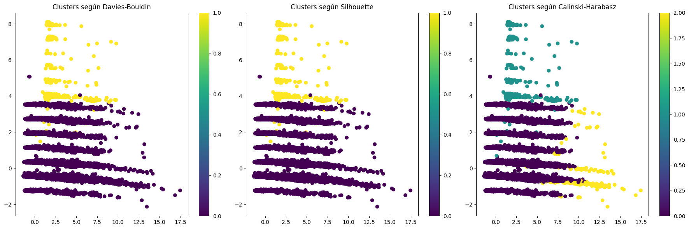
Gaussian Mixture Model (GMM)#
# %% ======================== MODELO GMM ========================
# Hiperparámetros
param_grid = {
'n_components': range(2, 11),
'covariance_type': ['full', 'tied', 'diag', 'spherical'],
'init_params': ['kmeans', 'random']
}
# Configuración
results = []
best_score = -1
best_model = None
grid = ParameterGrid(param_grid)
# Entrenamiento
start_total = time.time()
for params in tqdm(grid, desc="GMM - Progreso"):
try:
model = GaussianMixture(**params, random_state=42)
labels = model.fit_predict(X) # Usar X directamente
if len(np.unique(labels)) < 2:
continue
# Calcular métricas
sil = silhouette_score(X, labels)
results.append({
**params,
'silhouette': sil,
'davies_bouldin': davies_bouldin_score(X, labels),
'calinski_harabasz': calinski_harabasz_score(X, labels),
'n_clusters': len(np.unique(labels))
})
# Actualizar mejor modelo
if sil > best_score:
best_score = sil
best_model = model
with open('best_gmm_model.pkl', 'wb') as f:
pickle.dump(best_model, f)
except Exception as e:
print(f"Error en {params}: {str(e)}")
continue
# Resultados finales
if best_model:
clusters = best_model.predict(X)
X_clustered = X.copy()
X_clustered['cluster'] = clusters
X_clustered.to_pickle('clustered_data_gmm.pkl')
print("\n🔍 Resumen por cluster:")
print(X_clustered.groupby('cluster').mean())
pd.DataFrame(results).to_csv('gmm_final_results.csv', index=False)
print(f"\n⏱ Tiempo total: {time.time()-start_total:.2f} segundos")
gmm_results = pd.read_csv('gmm_results.csv')
# %% ------------------------ SELECCIÓN DE MEJORES HIPERPARÁMETROS ------------------------
# 1. Mejor Silhouette (mayor valor)
best_sil_gmm = gmm_results.loc[gmm_results['silhouette'].idxmax()]
# 2. Mejor Davies-Bouldin (menor valor)
best_db_gmm = gmm_results.loc[gmm_results['davies_bouldin'].idxmin()]
# 3. Mejor Calinski-Harabasz (mayor valor)
best_ch_gmm = gmm_results.loc[gmm_results['calinski_harabasz'].idxmax()]
# %% ------------------------ GENERAR REPORTE ------------------------
print("🔥 Modelos Óptimos GMM por Métrica:")
print("\n=== Silhouette ===")
print(f"• Parámetros: covariance_type={best_sil_gmm['covariance_type']}, init_params={best_sil_gmm['init_params']}")
print(f" n_components={best_sil_gmm['n_components']}")
print(f"• Métricas: Silhouette={best_sil_gmm['silhouette']:.3f}, Davies={best_sil_gmm['davies_bouldin']:.3f}, Calinski={best_sil_gmm['calinski_harabasz']:.1f}")
print("\n=== Davies-Bouldin ===")
print(f"• Parámetros: covariance_type={best_db_gmm['covariance_type']}, init_params={best_db_gmm['init_params']}")
print(f" n_components={best_db_gmm['n_components']}")
print(f"• Métricas: Silhouette={best_db_gmm['silhouette']:.3f}, Davies={best_db_gmm['davies_bouldin']:.3f}, Calinski={best_db_gmm['calinski_harabasz']:.1f}")
print("\n=== Calinski-Harabasz ===")
print(f"• Parámetros: covariance_type={best_ch_gmm['covariance_type']}, init_params={best_ch_gmm['init_params']}")
print(f" n_components={best_ch_gmm['n_components']}")
print(f"• Métricas: Silhouette={best_ch_gmm['silhouette']:.3f}, Davies={best_ch_gmm['davies_bouldin']:.3f}, Calinski={best_ch_gmm['calinski_harabasz']:.1f}")
# %% ------------------------ GUARDAR PARÁMETROS ÓPTIMOS ------------------------
best_params_gmm = {
'silhouette': best_sil_gmm[['covariance_type', 'init_params', 'n_components']].to_dict(),
'davies_bouldin': best_db_gmm[['covariance_type', 'init_params', 'n_components']].to_dict(),
'calinski_harabasz': best_ch_gmm[['covariance_type', 'init_params', 'n_components']].to_dict()
}
pd.DataFrame(best_params_gmm).to_csv('optimal_gmm_parameters.csv', index=False)
print("\n✅ Parámetros óptimos GMM guardados en: optimal_gmm_parameters.csv")
🔥 Modelos Óptimos GMM por Métrica:
=== Silhouette ===
• Parámetros: covariance_type=full, init_params=random
n_components=2
• Métricas: Silhouette=0.813, Davies=1.983, Calinski=13088.3
=== Davies-Bouldin ===
• Parámetros: covariance_type=tied, init_params=kmeans
n_components=10
• Métricas: Silhouette=0.649, Davies=0.417, Calinski=69386.5
=== Calinski-Harabasz ===
• Parámetros: covariance_type=tied, init_params=kmeans
n_components=10
• Métricas: Silhouette=0.649, Davies=0.417, Calinski=69386.5
✅ Parámetros óptimos GMM guardados en: optimal_gmm_parameters.csv
# Parámetros óptimos para cada métrica
parametros_optimos = {
"silhouette": {
"n_components": 2,
"covariance_type": "full",
"init_params": "random"
},
"davies_bouldin": {
"n_components": 10,
"covariance_type": "tied",
"init_params": "kmeans"
},
"calinski_harabasz": {
"n_components": 10,
"covariance_type": "tied",
"init_params": "kmeans"
}
}
# Entrenar y guardar modelos óptimos según cada métrica
for nombre_metrica, params in parametros_optimos.items():
print(f"\n▶ Entrenando modelo óptimo para {nombre_metrica}...")
modelo = GaussianMixture(**params, random_state=42)
modelo.fit(X_sample)
# Guardar modelo entrenado
nombre_archivo = f"best_gmm_{nombre_metrica}.pkl"
with open(nombre_archivo, "wb") as f:
pickle.dump(modelo, f)
print(f"✅ Modelo guardado como '{nombre_archivo}'")
▶ Entrenando modelo óptimo para silhouette...
✅ Modelo guardado como 'best_gmm_silhouette.pkl'
▶ Entrenando modelo óptimo para davies_bouldin...
✅ Modelo guardado como 'best_gmm_davies_bouldin.pkl'
▶ Entrenando modelo óptimo para calinski_harabasz...
✅ Modelo guardado como 'best_gmm_calinski_harabasz.pkl'
# ------------------------------------------------
# 2. Rutas de tus modelos GMM
# ------------------------------------------------
model_paths = {
"silhouette": "best_gmm_silhouette.pkl",
"davies_bouldin": "best_gmm_davies_bouldin.pkl",
"calinski_harabasz": "best_gmm_calinski_harabasz.pkl"
}
# ------------------------------------------------
# 3. Cargar cada modelo y predecir clusters
# ------------------------------------------------
labels_dict = {}
for metric, path in model_paths.items():
with open(path, "rb") as f:
gmm = pickle.load(f)
# Usamos .predict() porque el modelo ya está entrenado
labels = gmm.predict(X_sample)
labels_dict[f"cluster_{metric}"] = labels
# ------------------------------------------------
# 4. Construir DataFrame de etiquetas y unirlo a X_sample
# ------------------------------------------------
df_labels = pd.DataFrame(labels_dict, index=X_sample.index)
df_full = pd.concat([X_sample, df_labels], axis=1)
# ------------------------------------------------
# 5. Ver distribuciones de clusters (normalize=True)
# ------------------------------------------------
for metric in model_paths:
col = f"cluster_{metric}"
print(f"\nDistribución (normalizada) de {col}:")
print(df_full[col].value_counts(normalize=True).sort_index())
# ------------------------------------------------
# 6. Guardar a CSV
# ------------------------------------------------
df_full.to_csv("clusters_gmm_sample.csv", index=False)
print("\n✅ Etiquetas de cluster añadidas y guardadas en 'clusters_gmm_sample.csv'")
/usr/local/lib/python3.11/dist-packages/sklearn/utils/validation.py:2732: UserWarning: X has feature names, but GaussianMixture was fitted without feature names
warnings.warn(
/usr/local/lib/python3.11/dist-packages/sklearn/utils/validation.py:2732: UserWarning: X has feature names, but GaussianMixture was fitted without feature names
warnings.warn(
/usr/local/lib/python3.11/dist-packages/sklearn/utils/validation.py:2732: UserWarning: X has feature names, but GaussianMixture was fitted without feature names
warnings.warn(
Distribución (normalizada) de cluster_silhouette:
cluster_silhouette
0 0.035173
1 0.964827
Name: proportion, dtype: float64
Distribución (normalizada) de cluster_davies_bouldin:
cluster_davies_bouldin
0 0.056733
1 0.017593
2 0.002547
3 0.609080
4 0.243180
5 0.006027
6 0.029593
7 0.024900
8 0.005147
9 0.005200
Name: proportion, dtype: float64
Distribución (normalizada) de cluster_calinski_harabasz:
cluster_calinski_harabasz
0 0.056733
1 0.017593
2 0.002547
3 0.609080
4 0.243180
5 0.006027
6 0.029593
7 0.024900
8 0.005147
9 0.005200
Name: proportion, dtype: float64
✅ Etiquetas de cluster añadidas y guardadas en 'clusters_gmm_sample.csv'
# El CSV con las etiquetas de clusters
df_clusters = pd.read_csv("clusters_gmm_sample.csv")
# -----------------------------
# 2. Aplicar PCA a 2 dimensiones
# -----------------------------
pca = PCA(n_components=2, random_state=42)
X_pca = pca.fit_transform(X_sample)
pca_df = pd.DataFrame(X_pca, columns=['PCA1', 'PCA2'])
# Adjuntar solo las tres columnas de cluster
pca_df = pd.concat([
pca_df,
df_clusters[['cluster_silhouette', 'cluster_davies_bouldin', 'cluster_calinski_harabasz']]
], axis=1)
# -----------------------------
# 3. Graficar con matplotlib
# -----------------------------
for metric in ['cluster_silhouette', 'cluster_davies_bouldin', 'cluster_calinski_harabasz']:
fig, ax = plt.subplots(figsize=(8, 6))
sc = ax.scatter(
pca_df['PCA1'], pca_df['PCA2'],
c=pca_df[metric] # colores automáticos según etiqueta
)
ax.set_title(f"Distribución de Clústeres — {metric}")
ax.set_xlabel("PCA 1")
ax.set_ylabel("PCA 2")
plt.tight_layout()
plt.show()
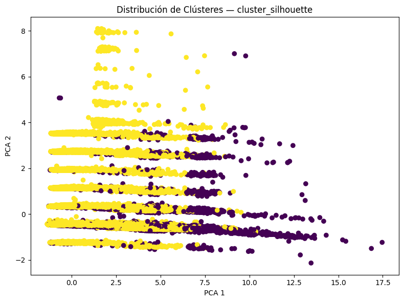
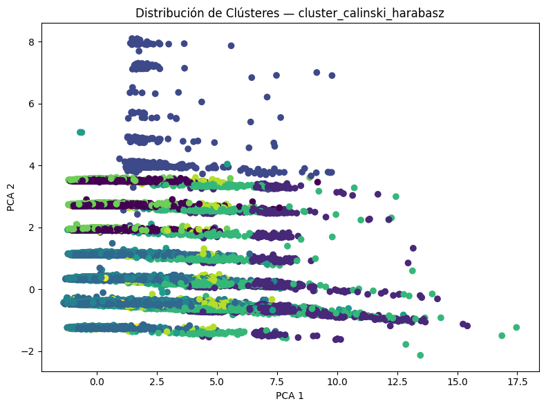
Model Mean Shift (MS)#
# %% ======================== MODELO MEAN SHIFT ========================
# Estimación de bandwidth adaptativo
bandwidth = estimate_bandwidth(X, quantile=0.25, n_samples=2000) # Usar X directamente
bandwidths = np.round([
bandwidth * factor
for factor in [0.7, 1.0, 1.3, 1.7]
], 3).tolist()
# Hiperparámetros
param_grid = {
'bandwidth': bandwidths,
'cluster_all': [True, False],
'bin_seeding': [True, False],
'min_bin_freq': [5, 10]
}
# Entrenamiento
results = []
best_score = -1
grid = ParameterGrid(param_grid)
start_total = time.time()
for params in tqdm(grid, desc="Mean Shift - Progreso"):
try:
model = MeanShift(**params, n_jobs=-1)
labels = model.fit_predict(X) # Entrenar con X
if len(np.unique(labels)) < 2:
continue
# Calcular métricas
sil = silhouette_score(X, labels)
results.append({
**params,
'silhouette': sil,
'n_clusters': len(np.unique(labels)),
'davies_bouldin': davies_bouldin_score(X, labels),
'calinski_harabasz': calinski_harabasz_score(X, labels)
})
# Actualizar mejor modelo
if sil > best_score:
best_score = sil
best_model = model
with open('best_meanshift_model.pkl', 'wb') as f:
pickle.dump(best_model, f)
except Exception as e:
print(f"Error en {params}: {str(e)}")
continue
# Resultados finales
if best_score != -1:
clusters = best_model.labels_
X_clustered = X.copy()
X_clustered['cluster'] = clusters
X_clustered.to_pickle('clustered_data_meanshift.pkl')
print("\n🔍 Distribución de clusters:")
print(X_clustered['cluster'].value_counts().sort_index())
print("\n📊 Métricas:")
print(f"Silhouette: {best_score:.3f}")
print(f"Davies-Bouldin: {results[0]['davies_bouldin']:.3f}") # Ejemplo
pd.DataFrame(results).to_csv('meanshift_results.csv', index=False)
print(f"\n⏱ Tiempo total: {time.time() - start_total:.2f} segundos")
# Parámetros óptimos para cada métrica
parametros_meanshift = {
"silhouette": {
"bandwidth": 10,
"bin_seeding": True,
"cluster_all": True
},
"davies_bouldin": {
"bandwidth": 5,
"bin_seeding": False,
"cluster_all": False
},
"calinski_harabasz": {
"bandwidth": 10,
"bin_seeding": True,
"cluster_all": True
}
}
# Entrenar y guardar modelos por cada métrica
for nombre_metrica, params in parametros_meanshift.items():
print(f"\n▶ Entrenando modelo óptimo para {nombre_metrica}...")
modelo = MeanShift(**params)
modelo.fit(X_sample)
# Guardar modelo
nombre_archivo = f"best_meanshift_{nombre_metrica}.pkl"
with open(nombre_archivo, "wb") as f:
pickle.dump(modelo, f)
print(f"✅ Modelo guardado como '{nombre_archivo}'")
# ------------------------------------------------
# 1. Rutas de tus modelos MeanShift
# ------------------------------------------------
model_paths = {
"silhouette": "best_meanshift_silhouette.pkl",
"davies_bouldin": "best_meanshift_davies_bouldin.pkl",
"calinski_harabasz": "best_meanshift_calinski_harabasz.pkl"
}
# ------------------------------------------------
# 2. Cargar cada modelo y predecir clusters
# ------------------------------------------------
labels_dict = {}
for metric, path in model_paths.items():
with open(path, "rb") as f:
ms = pickle.load(f)
# Usamos .predict() porque el modelo ya está entrenado
labels = ms.predict(X_sample)
labels_dict[f"cluster_{metric}"] = labels
# ------------------------------------------------
# 3. Construir DataFrame de etiquetas y unirlo a X_sample
# ------------------------------------------------
df_labels = pd.DataFrame(labels_dict, index=X_sample.index)
df_full = pd.concat([X_sample, df_labels], axis=1)
# ------------------------------------------------
# 4. Ver distribuciones de clusters (normalize=True)
# ------------------------------------------------
for metric in model_paths:
col = f"cluster_{metric}"
print(f"\nDistribución (normalizada) de {col}:")
print(df_full[col].value_counts(normalize=True).sort_index())
# ------------------------------------------------
# 5. Guardar a CSV
# ------------------------------------------------
df_full.to_csv("clusters_meanshift_sample.csv", index=False)
print("\n✅ Etiquetas de cluster añadidas y guardadas en 'clusters_meanshift_sample.csv'")
/usr/local/lib/python3.11/dist-packages/sklearn/utils/validation.py:2732: UserWarning: X has feature names, but MeanShift was fitted without feature names
warnings.warn(
/usr/local/lib/python3.11/dist-packages/sklearn/utils/validation.py:2732: UserWarning: X has feature names, but MeanShift was fitted without feature names
warnings.warn(
/usr/local/lib/python3.11/dist-packages/sklearn/utils/validation.py:2732: UserWarning: X has feature names, but MeanShift was fitted without feature names
warnings.warn(
Distribución (normalizada) de cluster_silhouette:
cluster_silhouette
0 0.997447
1 0.002553
Name: proportion, dtype: float64
Distribución (normalizada) de cluster_davies_bouldin:
cluster_davies_bouldin
0 0.975160
1 0.002453
2 0.022220
3 0.000087
4 0.000020
5 0.000007
6 0.000007
7 0.000007
8 0.000033
9 0.000007
Name: proportion, dtype: float64
Distribución (normalizada) de cluster_calinski_harabasz:
cluster_calinski_harabasz
0 0.997447
1 0.002553
Name: proportion, dtype: float64
✅ Etiquetas de cluster añadidas y guardadas en 'clusters_meanshift_sample.csv'
# -----------------------------
# 1. Cargar las etiquetas (MeanShift)
# CSV con etiquetas de MeanShift
df_clusters_ms = pd.read_csv("clusters_meanshift_sample.csv")
# -----------------------------
# 2. Aplicar PCA a 2 dimensiones
# -----------------------------
pca = PCA(n_components=2, random_state=42)
X_pca = pca.fit_transform(X_sample)
pca_df = pd.DataFrame(X_pca, columns=['PCA1', 'PCA2'])
pca_df = pd.concat([
pca_df,
df_clusters_ms[['cluster_silhouette', 'cluster_davies_bouldin', 'cluster_calinski_harabasz']]
], axis=1)
# -----------------------------
# 3. Graficar con matplotlib
# -----------------------------
for metric in ['cluster_silhouette', 'cluster_davies_bouldin', 'cluster_calinski_harabasz']:
fig, ax = plt.subplots(figsize=(8, 6))
scatter = ax.scatter(
pca_df['PCA1'], pca_df['PCA2'],
c=pca_df[metric], cmap='tab20', s=10
)
ax.set_title(f"MeanShift: Distribución de Clústeres — {metric}")
ax.set_xlabel("PCA 1")
ax.set_ylabel("PCA 2")
plt.colorbar(scatter, label=metric)
plt.tight_layout()
plt.show()
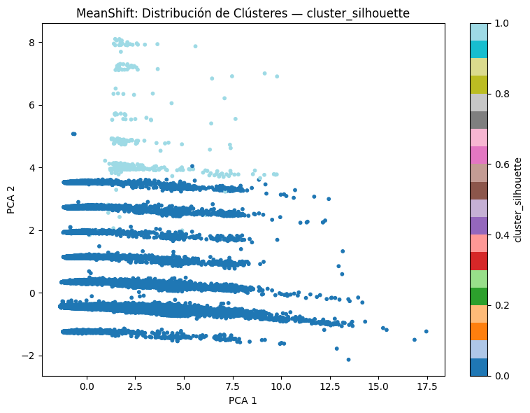
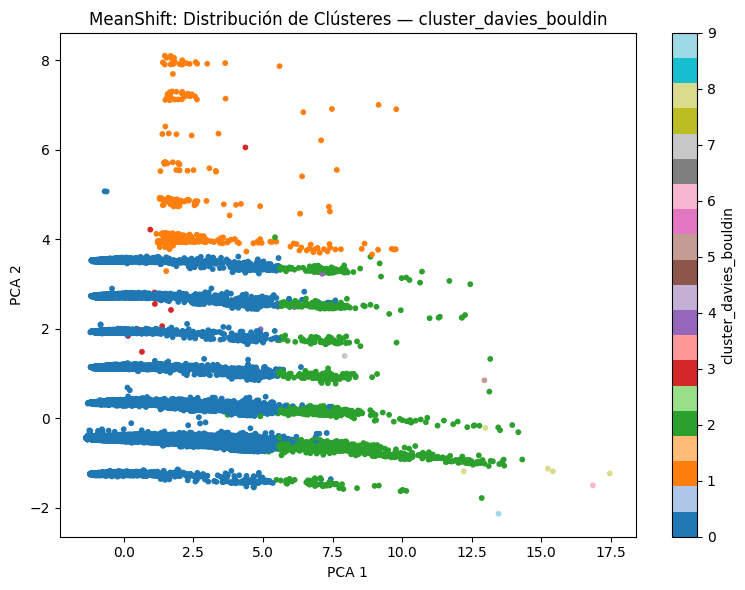
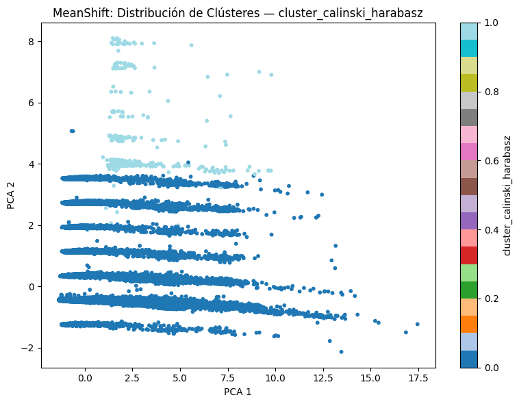
Self-Organizing Maps (SOM)#
# %% ------------------------ CONFIGURACIÓN DE MODELO ------------------------
params = {
'som_shape': (10, 10),
'sigma': 1.0,
'learning_rate': 0.5,
'num_epochs': 100,
'random_seed': 42
}
# %% ------------------------ ENTRENAMIENTO ------------------------
try:
print("⚙️ Configuración del modelo:")
print(f"- Tamaño SOM: {params['som_shape'][0]}x{params['som_shape'][1]}")
print(f"- Sigma: {params['sigma']} | Tasa aprendizaje: {params['learning_rate']}")
print(f"- Épocas: {params['num_epochs']} | Semilla: {params['random_seed']}\n")
# Inicializar y entrenar modelo
som = MiniSom(
params['som_shape'][0],
params['som_shape'][1],
X.shape[1],
sigma=params['sigma'],
learning_rate=params['learning_rate'],
random_seed=params['random_seed']
)
print("🚀 Entrenando SOM...")
start_time = time.time()
# Barra de progreso mejorada
with tqdm(total=params['num_epochs'], desc="Progreso", unit="época") as pbar:
for _ in range(params['num_epochs']):
som.train_random(X.values, num_iteration=1, verbose=False)
pbar.update(1)
train_time = time.time() - start_time
# Asignación de clusters
winner_coordinates = np.array([som.winner(x) for x in X.values])
cluster_ids = winner_coordinates[:, 0] * params['som_shape'][1] + winner_coordinates[:, 1]
n_clusters = len(np.unique(cluster_ids))
# Cálculo de métricas
metrics = {}
if n_clusters > 1:
metrics = {
'silhouette': silhouette_score(X, cluster_ids),
'davies_bouldin': davies_bouldin_score(X, cluster_ids),
'calinski_harabasz': calinski_harabasz_score(X, cluster_ids)
}
else:
metrics = {k: np.nan for k in ['silhouette', 'davies_bouldin', 'calinski_harabasz']}
# Guardar resultados
results_df = pd.DataFrame([{
**params,
**metrics,
'n_clusters': n_clusters,
'tiempo_entrenamiento': train_time
}])
results_df.to_csv('resultados_SOM.csv', index=False)
# Guardar artefactos
X_clustered = X.copy()
X_clustered['cluster'] = cluster_ids
X_clustered.to_pickle('datos_clusterizados_SOM.pkl')
with open('mejor_modelo_SOM.pkl', 'wb') as f:
pickle.dump(som, f)
print("\n✅ Entrenamiento completado:")
print(f"- Tiempo total: {train_time:.2f} segundos")
print(f"- Clusters detectados: {n_clusters}")
print(f"📊 Métricas:")
print(f" • Silhouette: {metrics['silhouette']:.3f}")
print(f" • Davies-Bouldin: {metrics['davies_bouldin']:.3f}")
print(f" • Calinski-Harabasz: {metrics['calinski_harabasz']:.1f}")
except Exception as e:
print(f"\n❌ Error durante el entrenamiento: {str(e)}")
exit()
# %% ------------------------ ANÁLISIS POST-ENTRENAMIENTO ------------------------
try:
print("\n🔍 Análisis de clusters:")
print(X_clustered['cluster'].value_counts().sort_index().to_string(name='Muestras'))
print("\n📊 Estadísticas por cluster:")
print(X_clustered.groupby('cluster').mean().T.to_string(float_format="%.2f"))
print(f"\n💾 Resultados guardados en:")
print("- results_SOM.csv")
print("- datos_clusterizados_SOM.pkl")
print("- mejor_modelo_SOM.pkl")
except Exception as e:
print(f"\n⚠️ Error en análisis post-entrenamiento: {str(e)}")
⏳ Cargando datos...
✅ Datos cargados correctamente:
Muestras: 150000 | Características: 15
Columnas: ['feature_0', 'feature_1', 'feature_2', 'feature_3', 'feature_4', 'feature_5', 'feature_6', 'feature_7', 'feature_8', 'feature_9', 'feature_10', 'feature_11', 'feature_12', 'feature_13', 'feature_14']
⚠️ MiniSom no instalado. Instalando...
⚙️ Configuración del modelo:
- Tamaño SOM: 10x10
- Sigma: 1.0 | Tasa aprendizaje: 0.5
- Épocas: 100 | Semilla: 42
🚀 Entrenando SOM...
Progreso: 100%|██████████| 100/100 [00:00<00:00, 6794.38época/s]
✅ Entrenamiento completado:
- Tiempo total: 0.02 segundos
- Clusters detectados: 60
📊 Métricas:
• Silhouette: 0.072
• Davies-Bouldin: 1.835
• Calinski-Harabasz: 4968.1
🔍 Análisis de clusters:
cluster
2 10
3 75
5 6
7 8
9 36
11 1
13 1
14 27
15 84
16 365
17 18450
18 453
21 3
24 4
26 40
27 3
33 129
35 128
36 7
37 1
38 38
39 1044
40 198
41 2
43 32
45 12381
47 2
49 5
50 9908
51 4452
52 51586
53 1441
54 340
56 1
57 24
59 1
60 227
61 15
62 3
64 2
68 96
70 7743
72 13
73 19098
74 2
76 5
78 27
80 19283
81 102
82 1
83 1
86 1
88 124
89 2
90 8
92 11
94 1069
95 33
96 756
97 92
Name: count
📊 Estadísticas por cluster:
cluster 2 3 5 7 9 11 13 14 15 16 17 18 21 24 26 27 33 35 36 37 38 39 40 41 43 45 47 49 50 51 52 53 54 56 57 59 60 61 62 64 68 70 72 73 74 76 78 80 81 82 83 86 88 89 90 92 94 95 96 97
feature_0 -0.07 -0.15 -0.04 -0.75 -0.75 4.17 -0.77 0.21 -0.27 0.26 -0.33 0.82 2.24 -0.08 0.70 -0.45 -0.44 -0.72 1.50 -0.23 -0.53 -0.67 -0.70 2.24 1.00 1.15 2.02 1.15 -0.48 -0.01 -0.41 1.02 3.71 -0.77 -0.73 -0.57 -0.62 -0.05 -0.69 -0.75 0.48 2.85 0.38 -0.47 0.05 0.34 0.28 0.05 -0.59 1.92 -0.38 -0.77 -0.74 -0.36 0.92 -0.59 -0.50 1.62 2.07 1.26
feature_1 -1.28 -0.46 0.49 -0.46 0.24 -0.46 -0.46 0.26 2.98 1.42 1.95 1.78 -0.74 -0.46 -0.44 -0.46 -0.46 -0.26 0.70 -0.46 1.45 -0.69 -0.53 -0.46 -0.39 -0.34 -0.46 -0.46 0.57 -0.39 -0.39 2.28 1.94 0.35 -0.53 -0.46 -1.27 -0.46 1.17 -0.05 -0.42 -0.02 -0.78 -0.47 -0.87 -0.46 3.38 -0.52 -0.44 -0.46 -0.46 -0.46 -0.47 -0.46 0.35 -0.46 -0.45 -1.21 -0.48 0.54
feature_2 -0.22 -0.22 -0.22 -0.22 -0.22 -0.22 0.53 -0.22 -0.22 -0.16 -0.22 1.39 -0.22 -0.22 -0.22 -0.22 -0.22 -0.22 -0.22 -0.22 -0.22 -0.22 -0.22 -0.22 -0.22 -0.22 -0.22 4.00 -0.22 -0.22 -0.22 -0.22 -0.22 -0.22 -0.22 -0.22 -0.22 3.75 6.21 -0.22 0.26 3.88 -0.22 -0.22 -0.22 0.50 -0.22 -0.22 -0.22 -0.22 -0.22 -0.22 0.16 -0.22 -0.22 8.66 -0.22 3.95 -0.22 -0.22
feature_3 -0.04 -0.00 -0.01 -0.22 -0.21 -0.23 -0.22 0.07 1.93 -0.02 -0.09 7.56 -0.22 0.22 0.06 5.98 -0.12 -0.22 0.22 -0.04 -0.09 -0.20 -0.21 -0.20 -0.02 0.45 0.08 0.10 -0.13 -0.06 -0.12 0.13 0.34 -0.20 -0.19 -0.23 -0.17 -0.09 -0.19 -0.20 1.43 0.24 0.07 -0.11 -0.23 -0.05 -0.05 0.00 -0.17 0.02 0.63 -0.23 -0.22 -0.16 0.15 -0.16 -0.02 0.07 0.13 0.05
feature_4 -0.19 -0.16 -0.13 -1.09 4.66 -1.21 -0.87 0.20 0.55 0.20 -0.38 0.79 -0.92 0.40 0.06 -0.59 -0.58 2.74 1.21 1.35 3.12 -0.84 -0.87 -0.83 0.13 1.18 2.10 0.86 -0.48 -0.23 -0.41 1.09 3.11 -1.18 -1.05 -0.91 -0.64 0.32 -0.22 -0.35 1.09 3.03 3.34 -0.56 0.40 0.13 1.81 0.12 -0.08 1.23 -0.14 0.48 3.75 -1.18 0.68 0.48 -0.06 1.72 1.35 0.72
feature_5 0.00 0.00 1.00 0.00 1.00 0.00 0.00 0.00 1.00 0.98 0.42 0.39 0.00 0.00 0.95 0.00 0.00 0.16 0.00 1.00 0.89 0.00 0.00 0.00 0.00 0.99 1.00 1.00 0.98 0.00 1.00 1.00 0.64 0.00 0.17 0.00 0.99 1.00 0.33 0.00 0.10 0.75 0.62 0.00 0.00 0.40 0.07 0.83 0.94 0.00 1.00 0.00 0.86 0.00 0.00 0.18 1.00 1.00 0.00 0.00
feature_6 0.00 0.00 0.00 0.00 0.00 0.00 0.00 0.00 0.00 0.00 0.58 0.61 0.00 0.00 0.05 1.00 0.00 0.73 0.00 0.00 0.00 1.00 0.00 0.00 0.09 0.01 0.00 0.00 0.00 1.00 0.00 0.00 0.36 0.00 0.83 1.00 0.01 0.00 0.00 1.00 0.85 0.24 0.31 1.00 0.00 0.00 0.93 0.17 0.00 1.00 0.00 0.00 0.10 0.00 1.00 0.82 0.00 0.00 0.97 0.98
feature_7 1.00 0.99 0.00 1.00 0.00 1.00 1.00 1.00 0.00 0.01 0.00 0.00 1.00 1.00 0.00 0.00 1.00 0.10 0.86 0.00 0.11 0.00 1.00 1.00 0.88 0.00 0.00 0.00 0.01 0.00 0.00 0.00 0.01 1.00 0.00 0.00 0.00 0.00 0.67 0.00 0.04 0.00 0.00 0.00 1.00 0.00 0.00 0.00 0.00 0.00 0.00 0.00 0.03 1.00 0.00 0.00 0.00 0.00 0.02 0.00
feature_8 0.00 0.01 0.00 0.00 0.00 0.00 0.00 0.00 0.00 0.01 0.00 0.00 0.00 0.00 0.00 0.00 0.00 0.00 0.14 0.00 0.00 0.00 0.00 0.00 0.03 0.00 0.00 0.00 0.01 0.00 0.00 0.00 0.00 0.00 0.00 0.00 0.00 0.00 0.00 0.00 0.00 0.00 0.08 0.00 0.00 0.60 0.00 0.00 0.06 0.00 0.00 1.00 0.01 0.00 0.00 0.00 0.00 0.00 0.00 0.02
feature_9 1.00 1.00 0.00 0.00 0.08 1.00 1.00 1.00 0.86 1.00 1.00 0.99 1.00 1.00 0.00 1.00 1.00 0.05 1.00 0.00 0.13 1.00 1.00 1.00 0.97 0.95 0.00 0.00 1.00 1.00 1.00 1.00 0.55 0.00 0.00 0.00 0.99 1.00 0.67 0.00 0.99 0.62 0.00 1.00 0.00 1.00 0.52 1.00 0.00 0.00 1.00 0.00 0.00 0.00 1.00 1.00 1.00 0.91 0.99 1.00
feature_10 0.00 0.00 0.00 0.12 0.22 0.00 0.00 0.00 0.00 0.00 0.00 0.01 0.00 0.00 0.00 0.00 0.00 0.82 0.00 0.00 0.21 0.00 0.00 0.00 0.00 0.03 0.00 0.00 0.00 0.00 0.00 0.00 0.45 0.00 0.00 0.00 0.00 0.00 0.00 0.00 0.01 0.34 0.92 0.00 0.00 0.00 0.41 0.00 0.00 0.00 0.00 0.00 0.04 0.00 0.00 0.00 0.00 0.00 0.00 0.00
feature_11 0.00 0.00 0.00 0.00 0.00 0.00 0.00 0.00 0.00 0.00 0.00 0.00 0.00 0.00 0.00 0.00 0.00 0.09 0.00 0.00 0.24 0.00 0.00 0.00 0.00 0.00 0.00 0.00 0.00 0.00 0.00 0.00 0.00 0.00 0.00 0.00 0.00 0.00 0.00 1.00 0.00 0.02 0.00 0.00 1.00 0.00 0.00 0.00 0.00 0.00 0.00 1.00 0.00 0.00 0.00 0.00 0.00 0.00 0.00 0.00
feature_12 0.00 0.00 0.00 0.00 0.00 0.00 0.00 0.00 0.00 0.00 0.00 0.00 0.00 0.00 0.00 0.00 0.00 0.00 0.00 0.00 0.00 0.00 0.00 0.00 0.00 0.00 1.00 0.00 0.00 0.00 0.00 0.00 0.00 0.00 0.00 1.00 0.01 0.00 0.00 0.00 0.00 0.00 0.00 0.00 0.00 0.00 0.00 0.00 0.00 0.00 0.00 0.00 0.00 0.00 0.00 0.00 0.00 0.00 0.00 0.00
feature_13 0.00 0.00 1.00 0.88 0.69 0.00 0.00 0.00 0.14 0.00 0.00 0.00 0.00 0.00 1.00 0.00 0.00 0.03 0.00 1.00 0.42 0.00 0.00 0.00 0.03 0.03 0.00 1.00 0.00 0.00 0.00 0.00 0.00 1.00 1.00 0.00 0.00 0.00 0.33 0.00 0.00 0.02 0.08 0.00 0.00 0.00 0.07 0.00 1.00 1.00 0.00 0.00 0.96 1.00 0.00 0.00 0.00 0.09 0.00 0.00
feature_14 0.00 0.00 0.00 0.00 0.00 0.00 0.00 0.00 0.00 0.00 0.00 0.00 0.00 0.00 0.00 0.00 0.00 0.00 0.00 0.00 0.00 0.00 0.00 0.00 0.00 0.00 0.00 0.00 0.00 0.00 0.00 0.00 0.00 0.00 0.00 0.00 0.00 0.00 0.00 0.00 0.00 0.00 0.00 0.00 0.00 0.00 0.00 0.00 0.00 0.00 0.00 0.00 0.00 0.00 0.00 0.00 0.00 0.00 0.00 0.00
💾 Resultados guardados en:
- results_SOM.csv
- datos_clusterizados_SOM.pkl
- mejor_modelo_SOM.pkl
# -----------------------------
# 1. Cargar el modelo SOM entrenado
# -----------------------------
with open("best_SOM_model.pkl", "rb") as f:
som_loaded = pickle.load(f)
if isinstance(som_loaded, dict):
som = som_loaded['model']
else:
som = som_loaded
# -----------------------------
# 2. Asignar clusters según winners
# -----------------------------
coords = np.array([som.winner(x) for x in X_sample.values])
n_cols = som._weights.shape[1]
cluster_ids = coords[:, 0] * n_cols + coords[:, 1]
# -----------------------------
# 3. Construir DataFrame y mostrar distribución
# -----------------------------
df_full = X_sample.copy()
df_full['cluster_SOM'] = cluster_ids
print("Distribución de clusters SOM (normalizada):")
print(df_full['cluster_SOM'].value_counts(normalize=True).sort_index())
# -----------------------------
# 4. Guardar etiquetas en CSV
# -----------------------------
df_full.to_csv("clusters_SOM_sample.csv", index=False)
print("✅ 'clusters_SOM_sample.csv' guardado.")
# -----------------------------
# 5. PCA y visualización
# -----------------------------
pca = PCA(n_components=2, random_state=42)
X_pca = pca.fit_transform(X_sample.values)
pca_df = pd.DataFrame(X_pca, columns=['PCA1', 'PCA2'], index=X_sample.index)
pca_df['cluster_SOM'] = cluster_ids
fig, ax = plt.subplots(figsize=(8, 6))
scatter = ax.scatter(
pca_df['PCA1'], pca_df['PCA2'],
c=pca_df['cluster_SOM'], cmap='tab20', s=10
)
ax.set_title("SOM: Distribución de Clústeres")
ax.set_xlabel("PCA 1")
ax.set_ylabel("PCA 2")
plt.colorbar(scatter, label='cluster_SOM')
plt.tight_layout()
plt.show()
Distribución de clusters SOM (normalizada):
cluster_SOM
2 0.000067
3 0.000500
5 0.000040
7 0.000053
9 0.000240
11 0.000007
13 0.000007
14 0.000180
15 0.000560
16 0.002433
17 0.123000
18 0.003020
21 0.000020
24 0.000027
26 0.000267
27 0.000020
33 0.000860
35 0.000853
36 0.000047
37 0.000007
38 0.000253
39 0.006960
40 0.001320
41 0.000013
43 0.000213
45 0.082540
47 0.000013
49 0.000033
50 0.066053
51 0.029680
52 0.343907
53 0.009607
54 0.002267
56 0.000007
57 0.000160
59 0.000007
60 0.001513
61 0.000100
62 0.000020
64 0.000013
68 0.000640
70 0.051620
72 0.000087
73 0.127320
74 0.000013
76 0.000033
78 0.000180
80 0.128553
81 0.000680
82 0.000007
83 0.000007
86 0.000007
88 0.000827
89 0.000013
90 0.000053
92 0.000073
94 0.007127
95 0.000220
96 0.005040
97 0.000613
Name: proportion, dtype: float64
✅ 'clusters_SOM_sample.csv' guardado.
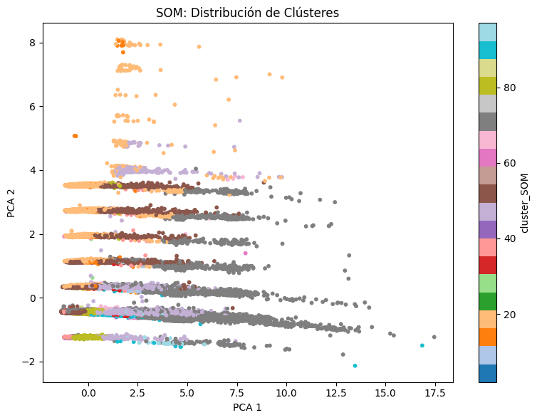
HDBSCAN#
def formatear_tiempo(segundos):
minutos = int(segundos // 60)
segundos = int(segundos % 60)
return f"{minutos}m {segundos}s"
Silhouette#
# Definir la grilla de hiperparámetros
param_grid = {
'min_cluster_size': [10, 30, 50],
'min_samples': [10, 20],
'metric': ['euclidean', 'manhattan']
}
# Intentar cargar resultados parciales
try:
resultados_parciales = pd.read_csv(resultados_path)
print("✅ Resultados parciales cargados.")
iteracion_inicial = len(resultados_parciales)
mejor_score = resultados_parciales['silhouette'].max()
mejor_idx = resultados_parciales['silhouette'].idxmax()
mejor_modelo = pickle.load(open(modelo_path, 'rb'))
except:
resultados_parciales = []
iteracion_inicial = 0
mejor_score = -1
mejor_modelo = None
# Inicializar timer global
inicio_total = time.time()
total_iteraciones = len(list(ParameterGrid(param_grid)))
# Bucle principal con barra de progreso
with tqdm(total=total_iteraciones, initial=iteracion_inicial, desc="Entrenando HDBSCAN") as pbar:
for i, params in enumerate(ParameterGrid(param_grid)):
if i < iteracion_inicial:
continue # Saltar ya entrenados
print(f"▶ Iteración {i+1}/{total_iteraciones} - {params}")
inicio = time.time()
modelo = hdbscan.HDBSCAN(**params)
modelo.fit(X_sample)
etiquetas = modelo.labels_
tiempo = round(time.time() - inicio, 2)
elapsed = time.time() - inicio
tiempo_total = time.time() - inicio_total
# Validación: al menos 2 clústeres válidos
if len(set(etiquetas)) <= 1 or (etiquetas == -1).all():
print("⚠️ Solo se encontró un clúster o todos son ruido. Se omite esta combinación.")
sil, db, ch = np.nan, np.nan, np.nan
else:
try:
sil = silhouette_score(X_sample, etiquetas)
except:
sil = np.nan
# Guardar mejor modelo
if sil > mejor_score:
mejor_score = sil
mejor_modelo = modelo
pickle.dump(mejor_modelo, open("hdbscan_model_final.pkl", "wb"))
print("✅ Nuevo mejor modelo guardado.")
# Almacenar resultados parciales
resultados_parciales.append({
**params,
"silhouette": sil,
"tiempo_iter_s": round(elapsed, 2),
"tiempo_s": tiempo
})
pd.DataFrame(resultados_parciales).to_csv("resultados_parciales_hdbscan.csv", index=False)
# Mostrar en tiempo real
pbar.set_postfix({
"Silhouette": f"{sil:.3f}",
"Iteración": f"{formatear_tiempo(elapsed)}",
"Total": f"{formatear_tiempo(time.time() - inicio_total)}"
})
print(f"⏱️ Tiempo de esta iteración: {formatear_tiempo(elapsed)}")
print(f"⏱️ Tiempo total acumulado: {formatear_tiempo(time.time() - inicio_total)}")
pd.DataFrame(resultados_parciales)
Entrenando HDBSCAN: 0%| | 0/12 [00:00<?, ?it/s]
▶ Iteración 1/12 - {'metric': 'euclidean', 'min_cluster_size': 10, 'min_samples': 10}
Entrenando HDBSCAN: 0%| | 0/12 [06:25<?, ?it/s, Silhouette=-0.267, Iteración=1m 12s, Total=6m 25s]
✅ Nuevo mejor modelo guardado.
⏱️ Tiempo de esta iteración: 1m 12s
⏱️ Tiempo total acumulado: 6m 25s
▶ Iteración 2/12 - {'metric': 'euclidean', 'min_cluster_size': 10, 'min_samples': 20}
Entrenando HDBSCAN: 0%| | 0/12 [12:33<?, ?it/s, Silhouette=-0.184, Iteración=1m 17s, Total=12m 33s]
✅ Nuevo mejor modelo guardado.
⏱️ Tiempo de esta iteración: 1m 17s
⏱️ Tiempo total acumulado: 12m 33s
▶ Iteración 3/12 - {'metric': 'euclidean', 'min_cluster_size': 30, 'min_samples': 10}
Entrenando HDBSCAN: 0%| | 0/12 [18:59<?, ?it/s, Silhouette=-0.177, Iteración=1m 19s, Total=18m 59s]
✅ Nuevo mejor modelo guardado.
⏱️ Tiempo de esta iteración: 1m 19s
⏱️ Tiempo total acumulado: 18m 59s
▶ Iteración 4/12 - {'metric': 'euclidean', 'min_cluster_size': 30, 'min_samples': 20}
Entrenando HDBSCAN: 0%| | 0/12 [24:44<?, ?it/s, Silhouette=-0.209, Iteración=1m 14s, Total=24m 44s]
⏱️ Tiempo de esta iteración: 1m 14s
⏱️ Tiempo total acumulado: 24m 44s
▶ Iteración 5/12 - {'metric': 'euclidean', 'min_cluster_size': 50, 'min_samples': 10}
Entrenando HDBSCAN: 0%| | 0/12 [30:35<?, ?it/s, Silhouette=-0.163, Iteración=1m 17s, Total=30m 35s]
✅ Nuevo mejor modelo guardado.
⏱️ Tiempo de esta iteración: 1m 17s
⏱️ Tiempo total acumulado: 30m 35s
▶ Iteración 6/12 - {'metric': 'euclidean', 'min_cluster_size': 50, 'min_samples': 20}
Entrenando HDBSCAN: 0%| | 0/12 [36:33<?, ?it/s, Silhouette=0.254, Iteración=1m 9s, Total=36m 33s]
✅ Nuevo mejor modelo guardado.
⏱️ Tiempo de esta iteración: 1m 9s
⏱️ Tiempo total acumulado: 36m 33s
▶ Iteración 7/12 - {'metric': 'manhattan', 'min_cluster_size': 10, 'min_samples': 10}
Entrenando HDBSCAN: 0%| | 0/12 [42:57<?, ?it/s, Silhouette=-0.301, Iteración=1m 23s, Total=42m 57s]
⏱️ Tiempo de esta iteración: 1m 23s
⏱️ Tiempo total acumulado: 42m 57s
▶ Iteración 8/12 - {'metric': 'manhattan', 'min_cluster_size': 10, 'min_samples': 20}
Entrenando HDBSCAN: 0%| | 0/12 [48:41<?, ?it/s, Silhouette=-0.236, Iteración=1m 2s, Total=48m 41s]
⏱️ Tiempo de esta iteración: 1m 2s
⏱️ Tiempo total acumulado: 48m 41s
▶ Iteración 9/12 - {'metric': 'manhattan', 'min_cluster_size': 30, 'min_samples': 10}
Entrenando HDBSCAN: 0%| | 0/12 [54:22<?, ?it/s, Silhouette=-0.181, Iteración=1m 9s, Total=54m 22s]
⏱️ Tiempo de esta iteración: 1m 9s
⏱️ Tiempo total acumulado: 54m 22s
▶ Iteración 10/12 - {'metric': 'manhattan', 'min_cluster_size': 30, 'min_samples': 20}
Entrenando HDBSCAN: 0%| | 0/12 [59:57<?, ?it/s, Silhouette=-0.219, Iteración=1m 3s, Total=59m 57s]
⏱️ Tiempo de esta iteración: 1m 3s
⏱️ Tiempo total acumulado: 59m 57s
▶ Iteración 11/12 - {'metric': 'manhattan', 'min_cluster_size': 50, 'min_samples': 10}
Entrenando HDBSCAN: 0%| | 0/12 [1:05:42<?, ?it/s, Silhouette=-0.171, Iteración=1m 11s, Total=65m 42s]
⏱️ Tiempo de esta iteración: 1m 11s
⏱️ Tiempo total acumulado: 65m 43s
▶ Iteración 12/12 - {'metric': 'manhattan', 'min_cluster_size': 50, 'min_samples': 20}
Entrenando HDBSCAN: 0%| | 0/12 [1:11:11<?, ?it/s, Silhouette=-0.183, Iteración=1m 1s, Total=71m 11s]
⏱️ Tiempo de esta iteración: 1m 1s
⏱️ Tiempo total acumulado: 71m 11s
| metric | min_cluster_size | min_samples | silhouette | tiempo_iter_s | tiempo_s | |
|---|---|---|---|---|---|---|
| 0 | euclidean | 10 | 10 | -0.267135 | 72.70 | 72.70 |
| 1 | euclidean | 10 | 20 | -0.183518 | 77.20 | 77.20 |
| 2 | euclidean | 30 | 10 | -0.177210 | 79.68 | 79.68 |
| 3 | euclidean | 30 | 20 | -0.209133 | 74.97 | 74.97 |
| 4 | euclidean | 50 | 10 | -0.162844 | 77.59 | 77.59 |
| 5 | euclidean | 50 | 20 | 0.254351 | 69.93 | 69.93 |
| 6 | manhattan | 10 | 10 | -0.301494 | 83.61 | 83.61 |
| 7 | manhattan | 10 | 20 | -0.235952 | 62.91 | 62.91 |
| 8 | manhattan | 30 | 10 | -0.180631 | 69.52 | 69.52 |
| 9 | manhattan | 30 | 20 | -0.219254 | 63.85 | 63.85 |
| 10 | manhattan | 50 | 10 | -0.170671 | 71.13 | 71.13 |
| 11 | manhattan | 50 | 20 | -0.183236 | 61.98 | 61.98 |
Davies - Bouldin#
# Definir la grilla de hiperparámetros
param_grid = {
'min_cluster_size': [10, 30, 50],
'min_samples': [10, 20],
'metric': ['euclidean', 'manhattan']
}
# Intentar cargar resultados parciales
try:
resultados_parciales = pd.read_csv(resultados_path)
print("✅ Resultados parciales cargados.")
iteracion_inicial = len(resultados_parciales)
mejor_score = resultados_parciales['davies_bouldin'].min()
mejor_idx = resultados_parciales['davies_bouldin'].idxmin()
mejor_modelo = pickle.load(open(modelo_path, 'rb'))
except:
resultados_parciales = []
iteracion_inicial = 0
mejor_score = -1
mejor_modelo = None
# Inicializar timer global
inicio_total = time.time()
total_iteraciones = len(list(ParameterGrid(param_grid)))
# Bucle principal con barra de progreso
with tqdm(total=total_iteraciones, initial=iteracion_inicial, desc="Entrenando HDBSCAN") as pbar:
for i, params in enumerate(ParameterGrid(param_grid)):
if i < iteracion_inicial:
continue # Saltar ya entrenados
print(f"▶ Iteración {i+1}/{total_iteraciones} - {params}")
inicio = time.time()
modelo = hdbscan.HDBSCAN(**params)
modelo.fit(X_sample)
etiquetas = modelo.labels_
tiempo = round(time.time() - inicio, 2)
elapsed = time.time() - inicio
tiempo_total = time.time() - inicio_total
# Validación: al menos 2 clústeres válidos
if len(set(etiquetas)) <= 1 or (etiquetas == -1).all():
print("⚠️ Solo se encontró un clúster o todos son ruido. Se omite esta combinación.")
db = np.nan
else:
try:
db = davies_bouldin_score(X_sample, etiquetas)
except:
db = np.nan
# Guardar mejor modelo
if db < mejor_score or mejor_score == -1:
mejor_score = db
mejor_modelo = modelo
pickle.dump(mejor_modelo, open("hdbscan_model_final_db.pkl", "wb"))
print("✅ Nuevo mejor modelo guardado.")
# Almacenar resultados parciales
resultados_parciales.append({
**params,
"davies_bouldin": db,
"tiempo_iter_s": round(elapsed, 2),
"tiempo_s": tiempo
})
pd.DataFrame(resultados_parciales).to_csv("resultados_parciales_hdbscan_db.csv", index=False)
print(f"⏱️ Tiempo de esta iteración: {formatear_tiempo(elapsed)}")
print(f"⏱️ Tiempo total acumulado: {formatear_tiempo(time.time() - inicio_total)}")
pd.DataFrame(resultados_parciales)
Entrenando HDBSCAN: 0%| | 0/12 [00:00<?, ?it/s]
▶ Iteración 1/12 - {'metric': 'euclidean', 'min_cluster_size': 10, 'min_samples': 10}
✅ Nuevo mejor modelo guardado.
⏱️ Tiempo de esta iteración: 1m 12s
⏱️ Tiempo total acumulado: 1m 13s
▶ Iteración 2/12 - {'metric': 'euclidean', 'min_cluster_size': 10, 'min_samples': 20}
⏱️ Tiempo de esta iteración: 1m 5s
⏱️ Tiempo total acumulado: 2m 19s
▶ Iteración 3/12 - {'metric': 'euclidean', 'min_cluster_size': 30, 'min_samples': 10}
⏱️ Tiempo de esta iteración: 1m 7s
⏱️ Tiempo total acumulado: 3m 28s
▶ Iteración 4/12 - {'metric': 'euclidean', 'min_cluster_size': 30, 'min_samples': 20}
⏱️ Tiempo de esta iteración: 1m 4s
⏱️ Tiempo total acumulado: 4m 32s
▶ Iteración 5/12 - {'metric': 'euclidean', 'min_cluster_size': 50, 'min_samples': 10}
⏱️ Tiempo de esta iteración: 1m 8s
⏱️ Tiempo total acumulado: 5m 41s
▶ Iteración 6/12 - {'metric': 'euclidean', 'min_cluster_size': 50, 'min_samples': 20}
⏱️ Tiempo de esta iteración: 1m 4s
⏱️ Tiempo total acumulado: 6m 46s
▶ Iteración 7/12 - {'metric': 'manhattan', 'min_cluster_size': 10, 'min_samples': 10}
✅ Nuevo mejor modelo guardado.
⏱️ Tiempo de esta iteración: 1m 3s
⏱️ Tiempo total acumulado: 7m 51s
▶ Iteración 8/12 - {'metric': 'manhattan', 'min_cluster_size': 10, 'min_samples': 20}
⏱️ Tiempo de esta iteración: 0m 56s
⏱️ Tiempo total acumulado: 8m 48s
▶ Iteración 9/12 - {'metric': 'manhattan', 'min_cluster_size': 30, 'min_samples': 10}
⏱️ Tiempo de esta iteración: 1m 3s
⏱️ Tiempo total acumulado: 9m 51s
▶ Iteración 10/12 - {'metric': 'manhattan', 'min_cluster_size': 30, 'min_samples': 20}
⏱️ Tiempo de esta iteración: 0m 56s
⏱️ Tiempo total acumulado: 10m 49s
▶ Iteración 11/12 - {'metric': 'manhattan', 'min_cluster_size': 50, 'min_samples': 10}
⏱️ Tiempo de esta iteración: 1m 6s
⏱️ Tiempo total acumulado: 11m 55s
▶ Iteración 12/12 - {'metric': 'manhattan', 'min_cluster_size': 50, 'min_samples': 20}
Entrenando HDBSCAN: 0%| | 0/12 [12:56<?, ?it/s]
⏱️ Tiempo de esta iteración: 1m 0s
⏱️ Tiempo total acumulado: 12m 56s
| metric | min_cluster_size | min_samples | davies_bouldin | tiempo_iter_s | tiempo_s | |
|---|---|---|---|---|---|---|
| 0 | euclidean | 10 | 10 | 1.598389 | 72.47 | 72.47 |
| 1 | euclidean | 10 | 20 | 1.712387 | 65.54 | 65.54 |
| 2 | euclidean | 30 | 10 | 1.827837 | 67.96 | 67.96 |
| 3 | euclidean | 30 | 20 | 1.672745 | 64.25 | 64.25 |
| 4 | euclidean | 50 | 10 | 1.920436 | 68.40 | 68.40 |
| 5 | euclidean | 50 | 20 | 1.880606 | 64.98 | 64.98 |
| 6 | manhattan | 10 | 10 | 1.559594 | 63.30 | 63.30 |
| 7 | manhattan | 10 | 20 | 1.626352 | 56.72 | 56.72 |
| 8 | manhattan | 30 | 10 | 1.739717 | 63.07 | 63.07 |
| 9 | manhattan | 30 | 20 | 1.652296 | 56.92 | 56.92 |
| 10 | manhattan | 50 | 10 | 1.808909 | 66.10 | 66.10 |
| 11 | manhattan | 50 | 20 | 1.748098 | 60.73 | 60.73 |
Calinski - Harabasz#
# Definir la grilla de hiperparámetros
param_grid = {
'min_cluster_size': [10, 30, 50],
'min_samples': [10, 20],
'metric': ['euclidean', 'manhattan']
}
# Intentar cargar resultados parciales
try:
resultados_parciales = pd.read_csv(resultados_path)
print("✅ Resultados parciales cargados.")
iteracion_inicial = len(resultados_parciales)
mejor_score = resultados_parciales['calinski_harabasz'].max()
mejor_idx = resultados_parciales['calinski_harabasz'].idxmax()
mejor_modelo = pickle.load(open(modelo_path, 'rb'))
except:
resultados_parciales = []
iteracion_inicial = 0
mejor_score = -1
mejor_modelo = None
# Inicializar timer global
inicio_total = time.time()
total_iteraciones = len(list(ParameterGrid(param_grid)))
# Bucle principal con barra de progreso
with tqdm(total=total_iteraciones, initial=iteracion_inicial, desc="Entrenando HDBSCAN") as pbar:
for i, params in enumerate(ParameterGrid(param_grid)):
if i < iteracion_inicial:
continue # Saltar ya entrenados
print(f"▶ Iteración {i+1}/{total_iteraciones} - {params}")
inicio = time.time()
modelo = hdbscan.HDBSCAN(**params)
modelo.fit(X_sample)
etiquetas = modelo.labels_
tiempo = round(time.time() - inicio, 2)
elapsed = time.time() - inicio
tiempo_total = time.time() - inicio_total
# Validación: al menos 2 clústeres válidos
if len(set(etiquetas)) <= 1 or (etiquetas == -1).all():
print("⚠️ Solo se encontró un clúster o todos son ruido. Se omite esta combinación.")
ch = np.nan
else:
try:
ch = calinski_harabasz_score(X_sample, etiquetas)
except:
ch = np.nan
# Guardar mejor modelo
if ch > mejor_score:
mejor_score = ch
mejor_modelo = modelo
pickle.dump(mejor_modelo, open("hdbscan_model_final_ch.pkl", "wb"))
print("✅ Nuevo mejor modelo guardado.")
# Almacenar resultados parciales
resultados_parciales.append({
**params,
"calinski_harabasz": ch,
"tiempo_iter_s": round(elapsed, 2),
"tiempo_s": tiempo
})
pd.DataFrame(resultados_parciales).to_csv("resultados_parciales_hdbscan_ch.csv", index=False)
print(f"⏱️ Tiempo de esta iteración: {formatear_tiempo(elapsed)}")
print(f"⏱️ Tiempo total acumulado: {formatear_tiempo(time.time() - inicio_total)}")
pd.DataFrame(resultados_parciales)
Entrenando HDBSCAN: 0%| | 0/12 [00:00<?, ?it/s]
▶ Iteración 1/12 - {'metric': 'euclidean', 'min_cluster_size': 10, 'min_samples': 10}
✅ Nuevo mejor modelo guardado.
⏱️ Tiempo de esta iteración: 1m 13s
⏱️ Tiempo total acumulado: 1m 14s
▶ Iteración 2/12 - {'metric': 'euclidean', 'min_cluster_size': 10, 'min_samples': 20}
✅ Nuevo mejor modelo guardado.
⏱️ Tiempo de esta iteración: 1m 3s
⏱️ Tiempo total acumulado: 2m 18s
▶ Iteración 3/12 - {'metric': 'euclidean', 'min_cluster_size': 30, 'min_samples': 10}
✅ Nuevo mejor modelo guardado.
⏱️ Tiempo de esta iteración: 1m 7s
⏱️ Tiempo total acumulado: 3m 26s
▶ Iteración 4/12 - {'metric': 'euclidean', 'min_cluster_size': 30, 'min_samples': 20}
✅ Nuevo mejor modelo guardado.
⏱️ Tiempo de esta iteración: 1m 5s
⏱️ Tiempo total acumulado: 4m 32s
▶ Iteración 5/12 - {'metric': 'euclidean', 'min_cluster_size': 50, 'min_samples': 10}
✅ Nuevo mejor modelo guardado.
⏱️ Tiempo de esta iteración: 1m 8s
⏱️ Tiempo total acumulado: 5m 40s
▶ Iteración 6/12 - {'metric': 'euclidean', 'min_cluster_size': 50, 'min_samples': 20}
✅ Nuevo mejor modelo guardado.
⏱️ Tiempo de esta iteración: 1m 3s
⏱️ Tiempo total acumulado: 6m 44s
▶ Iteración 7/12 - {'metric': 'manhattan', 'min_cluster_size': 10, 'min_samples': 10}
⏱️ Tiempo de esta iteración: 1m 3s
⏱️ Tiempo total acumulado: 7m 48s
▶ Iteración 8/12 - {'metric': 'manhattan', 'min_cluster_size': 10, 'min_samples': 20}
⏱️ Tiempo de esta iteración: 0m 56s
⏱️ Tiempo total acumulado: 8m 46s
▶ Iteración 9/12 - {'metric': 'manhattan', 'min_cluster_size': 30, 'min_samples': 10}
⏱️ Tiempo de esta iteración: 1m 7s
⏱️ Tiempo total acumulado: 9m 54s
▶ Iteración 10/12 - {'metric': 'manhattan', 'min_cluster_size': 30, 'min_samples': 20}
⏱️ Tiempo de esta iteración: 0m 57s
⏱️ Tiempo total acumulado: 10m 51s
▶ Iteración 11/12 - {'metric': 'manhattan', 'min_cluster_size': 50, 'min_samples': 10}
⏱️ Tiempo de esta iteración: 1m 5s
⏱️ Tiempo total acumulado: 11m 57s
▶ Iteración 12/12 - {'metric': 'manhattan', 'min_cluster_size': 50, 'min_samples': 20}
Entrenando HDBSCAN: 0%| | 0/12 [12:56<?, ?it/s]
⏱️ Tiempo de esta iteración: 0m 58s
⏱️ Tiempo total acumulado: 12m 56s
| metric | min_cluster_size | min_samples | calinski_harabasz | tiempo_iter_s | tiempo_s | |
|---|---|---|---|---|---|---|
| 0 | euclidean | 10 | 10 | 378.549875 | 73.85 | 73.85 |
| 1 | euclidean | 10 | 20 | 751.807226 | 63.98 | 63.98 |
| 2 | euclidean | 30 | 10 | 1040.806655 | 67.37 | 67.37 |
| 3 | euclidean | 30 | 20 | 1097.885641 | 65.72 | 65.72 |
| 4 | euclidean | 50 | 10 | 1562.382405 | 68.07 | 68.07 |
| 5 | euclidean | 50 | 20 | 5904.171760 | 63.51 | 63.51 |
| 6 | manhattan | 10 | 10 | 318.973320 | 63.76 | 63.76 |
| 7 | manhattan | 10 | 20 | 571.749445 | 56.94 | 56.94 |
| 8 | manhattan | 30 | 10 | 825.539069 | 67.56 | 67.56 |
| 9 | manhattan | 30 | 20 | 1005.732535 | 57.50 | 57.50 |
| 10 | manhattan | 50 | 10 | 1466.631091 | 65.36 | 65.36 |
| 11 | manhattan | 50 | 20 | 1810.745993 | 58.86 | 58.86 |
# Eliminar columnas duplicadas antes de unir (como tiempo_s o iter_s)
sil_df = sil_df.drop(columns=['tiempo_iter_s', 'tiempo_s'], errors='ignore')
ch_df = ch_df.drop(columns=['tiempo_iter_s', 'tiempo_s'], errors='ignore')
db_df = db_df.drop(columns=['tiempo_iter_s', 'tiempo_s'], errors='ignore')
df_final = sil_df.merge(ch_df, on=['metric', 'min_cluster_size', 'min_samples'], how='inner')
df_final = df_final.merge(db_df, on=['metric', 'min_cluster_size', 'min_samples'], how='inner')
print("✅ Tabla combinada guardada correctamente")
df_final
✅ Tabla combinada guardada correctamente
| metric | min_cluster_size | min_samples | silhouette | calinski_harabasz | davies_bouldin | |
|---|---|---|---|---|---|---|
| 0 | euclidean | 10 | 10 | -0.267135 | 378.549875 | 1.598389 |
| 1 | euclidean | 10 | 20 | -0.183518 | 751.807226 | 1.712387 |
| 2 | euclidean | 30 | 10 | -0.177210 | 1040.806655 | 1.827837 |
| 3 | euclidean | 30 | 20 | -0.209133 | 1097.885641 | 1.672745 |
| 4 | euclidean | 50 | 10 | -0.162844 | 1562.382405 | 1.920436 |
| 5 | euclidean | 50 | 20 | 0.254351 | 5904.171760 | 1.880606 |
| 6 | manhattan | 10 | 10 | -0.301494 | 318.973320 | 1.559594 |
| 7 | manhattan | 10 | 20 | -0.235952 | 571.749445 | 1.626352 |
| 8 | manhattan | 30 | 10 | -0.180631 | 825.539069 | 1.739717 |
| 9 | manhattan | 30 | 20 | -0.219254 | 1005.732535 | 1.652296 |
| 10 | manhattan | 50 | 10 | -0.170671 | 1466.631091 | 1.808909 |
| 11 | manhattan | 50 | 20 | -0.183236 | 1810.745993 | 1.748098 |
Visualización Clusters HDBSCAN#
# Asignar clústeres sobre X_sample
cluster_labels = {}
for key, model in models.items():
labels = model.fit_predict(X_sample)
cluster_labels[key] = labels
# Agregar etiquetas al DataFrame
sample_df = pd.DataFrame(X_sample)
for key in cluster_labels:
sample_df[f"cluster_{key}"] = cluster_labels[key]
print("ok")
# Guardar el DataFrame como archivo CSV
sample_df.to_csv("sample_df_hdbscan_clusters.csv", index=False)
print("✅ Archivo 'variables_clustering.csv' guardado correctamente.")
sample_df
ok
✅ Archivo 'variables_clustering.csv' guardado correctamente.
| 0 | 1 | 2 | 3 | 4 | 5 | 6 | 7 | 8 | 9 | 10 | 11 | 12 | 13 | 14 | cluster_silhouette | cluster_calinski_harabasz | cluster_davies_bouldin | |
|---|---|---|---|---|---|---|---|---|---|---|---|---|---|---|---|---|---|---|
| 0 | 0.397969 | -0.463200 | -0.221665 | -0.223972 | -0.907863 | 0.0 | 0.0 | 1.0 | 0.0 | 1.0 | 0.0 | 0.0 | 0.0 | 0.0 | 0.0 | 22 | 22 | -1 |
| 1 | -0.405570 | -0.463200 | -0.221665 | 0.026813 | 0.005213 | 1.0 | 0.0 | 0.0 | 0.0 | 1.0 | 0.0 | 0.0 | 0.0 | 0.0 | 0.0 | 41 | 41 | -1 |
| 2 | -0.599528 | 0.353273 | -0.221665 | -0.199454 | -0.828808 | 0.0 | 1.0 | 0.0 | 0.0 | 1.0 | 0.0 | 0.0 | 0.0 | 0.0 | 0.0 | 30 | 30 | 178 |
| 3 | -0.546882 | -0.463200 | -0.221665 | -0.153921 | -0.610619 | 1.0 | 0.0 | 0.0 | 0.0 | 1.0 | 0.0 | 0.0 | 0.0 | 0.0 | 0.0 | 41 | 41 | 1047 |
| 4 | -0.521945 | 3.619164 | -0.221665 | -0.161393 | -0.515754 | 1.0 | 0.0 | 0.0 | 0.0 | 1.0 | 0.0 | 0.0 | 0.0 | 0.0 | 0.0 | 36 | 36 | 92 |
| ... | ... | ... | ... | ... | ... | ... | ... | ... | ... | ... | ... | ... | ... | ... | ... | ... | ... | ... |
| 149995 | -0.599528 | 0.353273 | -0.221665 | -0.156256 | -0.670700 | 0.0 | 1.0 | 0.0 | 0.0 | 1.0 | 0.0 | 0.0 | 0.0 | 0.0 | 0.0 | 30 | 30 | 188 |
| 149996 | -0.516403 | -0.463200 | -0.221665 | -0.181941 | -0.658842 | 1.0 | 0.0 | 0.0 | 0.0 | 1.0 | 0.0 | 0.0 | 0.0 | 0.0 | 0.0 | 41 | 41 | 1001 |
| 149997 | 1.453654 | -0.463200 | -0.221665 | 0.087057 | 1.108018 | 1.0 | 0.0 | 0.0 | 0.0 | 1.0 | 0.0 | 0.0 | 0.0 | 0.0 | 0.0 | 41 | 41 | -1 |
| 149998 | -0.599528 | -0.463200 | -0.221665 | -0.147616 | -0.710227 | 0.0 | 1.0 | 0.0 | 0.0 | 1.0 | 0.0 | 0.0 | 0.0 | 0.0 | 0.0 | 46 | 46 | 368 |
| 149999 | 1.872049 | 2.802691 | 4.089800 | 0.141464 | 2.164972 | 1.0 | 0.0 | 0.0 | 0.0 | 1.0 | 0.0 | 0.0 | 0.0 | 0.0 | 0.0 | 19 | 19 | 52 |
150000 rows × 18 columns
# Aplicar PCA para visualización (2D)
pca = PCA(n_components=2, random_state=42)
pca_result = pca.fit_transform(X_sample)
pca_result
array([[-0.47840259, -0.4780012 ],
[-0.33457582, -0.44054728],
[-1.02922468, 0.3518941 ],
...,
[ 1.42341303, -0.4753338 ],
[-0.96138185, -0.43272576],
[ 4.59820639, 2.54429971]])
sample_df[['pca1', 'pca2']] = pca_result
sample_df
| 0 | 1 | 2 | 3 | 4 | 5 | 6 | 7 | 8 | 9 | 10 | 11 | 12 | 13 | 14 | cluster_silhouette | cluster_calinski_harabasz | cluster_davies_bouldin | pca1 | pca2 | |
|---|---|---|---|---|---|---|---|---|---|---|---|---|---|---|---|---|---|---|---|---|
| 0 | 0.397969 | -0.463200 | -0.221665 | -0.223972 | -0.907863 | 0.0 | 0.0 | 1.0 | 0.0 | 1.0 | 0.0 | 0.0 | 0.0 | 0.0 | 0.0 | 22 | 22 | -1 | -0.478403 | -0.478001 |
| 1 | -0.405570 | -0.463200 | -0.221665 | 0.026813 | 0.005213 | 1.0 | 0.0 | 0.0 | 0.0 | 1.0 | 0.0 | 0.0 | 0.0 | 0.0 | 0.0 | 41 | 41 | -1 | -0.334576 | -0.440547 |
| 2 | -0.599528 | 0.353273 | -0.221665 | -0.199454 | -0.828808 | 0.0 | 1.0 | 0.0 | 0.0 | 1.0 | 0.0 | 0.0 | 0.0 | 0.0 | 0.0 | 30 | 30 | 178 | -1.029225 | 0.351894 |
| 3 | -0.546882 | -0.463200 | -0.221665 | -0.153921 | -0.610619 | 1.0 | 0.0 | 0.0 | 0.0 | 1.0 | 0.0 | 0.0 | 0.0 | 0.0 | 0.0 | 41 | 41 | 1047 | -0.810399 | -0.467652 |
| 4 | -0.521945 | 3.619164 | -0.221665 | -0.161393 | -0.515754 | 1.0 | 0.0 | 0.0 | 0.0 | 1.0 | 0.0 | 0.0 | 0.0 | 0.0 | 0.0 | 36 | 36 | 92 | -0.689826 | 3.499005 |
| ... | ... | ... | ... | ... | ... | ... | ... | ... | ... | ... | ... | ... | ... | ... | ... | ... | ... | ... | ... | ... |
| 149995 | -0.599528 | 0.353273 | -0.221665 | -0.156256 | -0.670700 | 0.0 | 1.0 | 0.0 | 0.0 | 1.0 | 0.0 | 0.0 | 0.0 | 0.0 | 0.0 | 30 | 30 | 188 | -0.928609 | 0.358651 |
| 149996 | -0.516403 | -0.463200 | -0.221665 | -0.181941 | -0.658842 | 1.0 | 0.0 | 0.0 | 0.0 | 1.0 | 0.0 | 0.0 | 0.0 | 0.0 | 0.0 | 41 | 41 | 1001 | -0.825063 | -0.473536 |
| 149997 | 1.453654 | -0.463200 | -0.221665 | 0.087057 | 1.108018 | 1.0 | 0.0 | 0.0 | 0.0 | 1.0 | 0.0 | 0.0 | 0.0 | 0.0 | 0.0 | 41 | 41 | -1 | 1.423413 | -0.475334 |
| 149998 | -0.599528 | -0.463200 | -0.221665 | -0.147616 | -0.710227 | 0.0 | 1.0 | 0.0 | 0.0 | 1.0 | 0.0 | 0.0 | 0.0 | 0.0 | 0.0 | 46 | 46 | 368 | -0.961382 | -0.432726 |
| 149999 | 1.872049 | 2.802691 | 4.089800 | 0.141464 | 2.164972 | 1.0 | 0.0 | 0.0 | 0.0 | 1.0 | 0.0 | 0.0 | 0.0 | 0.0 | 0.0 | 19 | 19 | 52 | 4.598206 | 2.544300 |
150000 rows × 20 columns
# Silhouette
plt.figure()
sns.scatterplot(data=sample_df, x='pca1', y='pca2', hue='cluster_silhouette', palette='Set2', s=30, legend=False)
plt.title("Clusters según Silhouette Score")
plt.show()
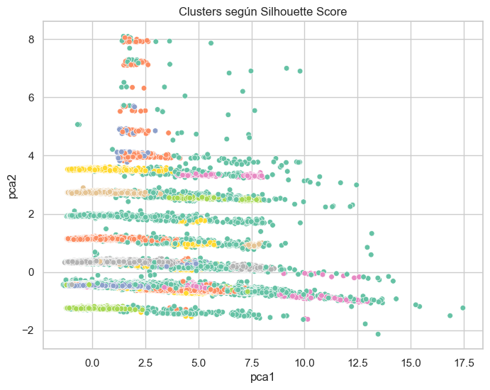
# Calinski-Harabasz
plt.figure()
sns.scatterplot(data=sample_df, x='pca1', y='pca2', hue='cluster_calinski_harabasz', palette='Set2', s=30, legend=False)
plt.title("Clusters según Calinski-Harabasz Score")
plt.show()
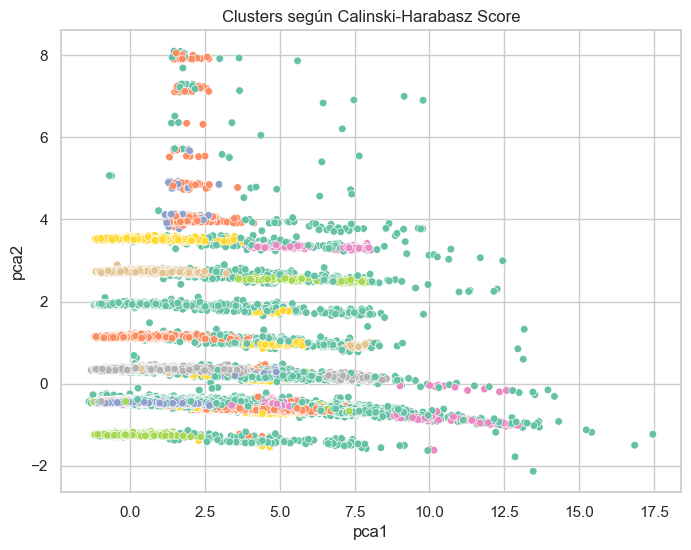
# Davies-Bouldin
plt.figure()
sns.scatterplot(data=sample_df, x='pca1', y='pca2', hue='cluster_davies_bouldin', palette='Set2', s=30, legend=False)
plt.title("Clusters según Davies-Bouldin Score")
plt.show()
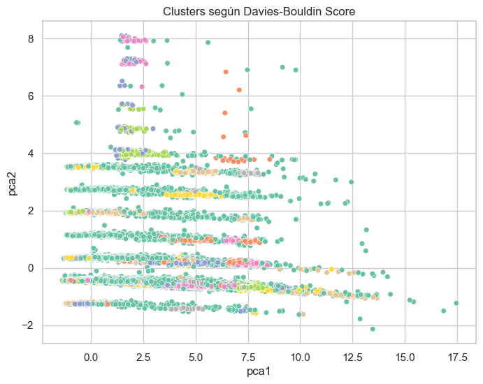
# Mostrar tamaños por clúster
sample_df['cluster_silhouette'].value_counts(normalize=True).head(10)
cluster_silhouette
41 0.470873
38 0.093893
-1 0.059447
30 0.040673
37 0.027667
40 0.025860
36 0.017407
24 0.017133
32 0.011933
29 0.011720
Name: proportion, dtype: float64
# Mostrar tamaños por clúster
sample_df['cluster_calinski_harabasz'].value_counts(normalize=True).head(10)
cluster_calinski_harabasz
41 0.470873
38 0.093893
-1 0.059447
30 0.040673
37 0.027667
40 0.025860
36 0.017407
24 0.017133
32 0.011933
29 0.011720
Name: proportion, dtype: float64
# Mostrar tamaños por clúster
sample_df['cluster_davies_bouldin'].value_counts(normalize=True).head(10)
cluster_davies_bouldin
-1 0.457567
63 0.025547
103 0.024400
92 0.014560
98 0.013573
61 0.011153
231 0.010133
230 0.008707
35 0.007687
89 0.007520
Name: proportion, dtype: float64
cluster_counts_df
| Métrica | Cantidad de Clústeres | |
|---|---|---|
| 0 | cluster_silhouette | 85 |
| 1 | cluster_calinski_harabasz | 85 |
| 2 | cluster_davies_bouldin | 1082 |
Agglomerative Hierarchical Clustering#
Silhouette#
# Definir la grilla de hiperparámetros
param_grid = {
'n_clusters': range(2, 11),
'linkage': [ 'single']
}
# Intentar cargar resultados parciales
try:
resultados_parciales = pd.read_csv(resultados_path)
print("✅ Resultados parciales cargados.")
iteracion_inicial = len(resultados_parciales)
mejor_score = resultados_parciales['silhouette'].max()
mejor_idx = resultados_parciales['silhouette'].idxmax()
mejor_modelo = pickle.load(open(modelo_path, 'rb'))
except:
resultados_parciales = []
iteracion_inicial = 0
mejor_score = -1
mejor_modelo = None
# Inicializar timer global
inicio_total = time.time()
total_iteraciones = len(list(ParameterGrid(param_grid)))
# Bucle principal con barra de progreso
with tqdm(total=total_iteraciones, initial=iteracion_inicial, desc="Entrenando Agglomerative") as pbar:
for i, params in enumerate(ParameterGrid(param_grid)):
if i < iteracion_inicial:
continue # Saltar ya entrenados
print(f"▶ Iteración {i+1}/{total_iteraciones} - {params}")
inicio = time.time()
modelo = AgglomerativeClustering(**params)
modelo.fit(X_sample)
etiquetas = modelo.labels_
tiempo = round(time.time() - inicio, 2)
elapsed = time.time() - inicio
tiempo_total = time.time() - inicio_total
# Validación: al menos 2 clústeres válidos
if len(set(etiquetas)) <= 1 or (etiquetas == -1).all():
print("⚠️ Solo se encontró un clúster o todos son ruido. Se omite esta combinación.")
sil, db, ch = np.nan, np.nan, np.nan
else:
try:
sil = silhouette_score(X_sample, etiquetas)
except:
sil = np.nan
# Guardar mejor modelo
if sil > mejor_score:
mejor_score = sil
mejor_modelo = modelo
pickle.dump(mejor_modelo, open("Agglomerative_model_final_sil.pkl", "wb"))
print("✅ Nuevo mejor modelo guardado.")
# Almacenar resultados parciales
resultados_parciales.append({
**params,
"silhouette": sil,
"tiempo_iter_s": round(elapsed, 2),
"tiempo_s": tiempo
})
pd.DataFrame(resultados_parciales).to_csv("resultados_parciales_Agglomerative_sil.csv", index=False)
print(f"⏱️ Tiempo de esta iteración: {formatear_tiempo(elapsed)}")
print(f"⏱️ Tiempo total acumulado: {formatear_tiempo(time.time() - inicio_total)}")
pd.DataFrame(resultados_parciales)
Entrenando Agglomerative: 0%| | 0/9 [00:00<?, ?it/s]
▶ Iteración 1/9 - {'linkage': 'single', 'n_clusters': 2}
✅ Nuevo mejor modelo guardado.
⏱️ Tiempo de esta iteración: 5m 1s
⏱️ Tiempo total acumulado: 10m 2s
▶ Iteración 2/9 - {'linkage': 'single', 'n_clusters': 3}
✅ Nuevo mejor modelo guardado.
⏱️ Tiempo de esta iteración: 5m 26s
⏱️ Tiempo total acumulado: 20m 36s
▶ Iteración 3/9 - {'linkage': 'single', 'n_clusters': 4}
⏱️ Tiempo de esta iteración: 5m 3s
⏱️ Tiempo total acumulado: 30m 46s
▶ Iteración 4/9 - {'linkage': 'single', 'n_clusters': 5}
⏱️ Tiempo de esta iteración: 5m 4s
⏱️ Tiempo total acumulado: 40m 54s
▶ Iteración 5/9 - {'linkage': 'single', 'n_clusters': 6}
⏱️ Tiempo de esta iteración: 5m 3s
⏱️ Tiempo total acumulado: 51m 3s
▶ Iteración 6/9 - {'linkage': 'single', 'n_clusters': 7}
⏱️ Tiempo de esta iteración: 5m 3s
⏱️ Tiempo total acumulado: 61m 12s
▶ Iteración 7/9 - {'linkage': 'single', 'n_clusters': 8}
⏱️ Tiempo de esta iteración: 5m 3s
⏱️ Tiempo total acumulado: 71m 20s
▶ Iteración 8/9 - {'linkage': 'single', 'n_clusters': 9}
⏱️ Tiempo de esta iteración: 5m 1s
⏱️ Tiempo total acumulado: 81m 19s
▶ Iteración 9/9 - {'linkage': 'single', 'n_clusters': 10}
Entrenando Agglomerative: 0%| | 0/9 [1:31:20<?, ?it/s]
⏱️ Tiempo de esta iteración: 5m 1s
⏱️ Tiempo total acumulado: 91m 20s
| linkage | n_clusters | silhouette | tiempo_iter_s | tiempo_s | |
|---|---|---|---|---|---|
| 0 | single | 2 | 0.847225 | 301.84 | 301.84 |
| 1 | single | 3 | 0.847259 | 326.36 | 326.36 |
| 2 | single | 4 | 0.838934 | 303.54 | 303.54 |
| 3 | single | 5 | 0.838927 | 304.04 | 304.04 |
| 4 | single | 6 | 0.838935 | 303.27 | 303.27 |
| 5 | single | 7 | 0.827464 | 303.98 | 303.98 |
| 6 | single | 8 | 0.812013 | 303.38 | 303.38 |
| 7 | single | 9 | 0.812230 | 301.96 | 301.96 |
| 8 | single | 10 | 0.812216 | 301.78 | 301.78 |
Davies - Bouldin#
# Definir la grilla de hiperparámetros
param_grid = {
'n_clusters': range(2, 11),
# 'linkage': ['ward', 'complete', 'average', 'single']
'linkage': ['single']
}
# Intentar cargar resultados parciales
try:
resultados_parciales = pd.read_csv(resultados_path)
print("✅ Resultados parciales cargados.")
iteracion_inicial = len(resultados_parciales)
mejor_score = resultados_parciales['davies_bouldin'].min()
mejor_idx = resultados_parciales['davies_bouldin'].idxmin()
mejor_modelo = pickle.load(open(modelo_path, 'rb'))
except:
resultados_parciales = []
iteracion_inicial = 0
mejor_score = -1
mejor_modelo = None
# Inicializar timer global
inicio_total = time.time()
total_iteraciones = len(list(ParameterGrid(param_grid)))
# Bucle principal con barra de progreso
with tqdm(total=total_iteraciones, initial=iteracion_inicial, desc="Entrenando Agglomerative") as pbar:
for i, params in enumerate(ParameterGrid(param_grid)):
if i < iteracion_inicial:
continue # Saltar ya entrenados
print(f"▶ Iteración {i+1}/{total_iteraciones} - {params}")
inicio = time.time()
modelo = AgglomerativeClustering(**params)
modelo.fit(X_sample)
etiquetas = modelo.labels_
tiempo = round(time.time() - inicio, 2)
elapsed = time.time() - inicio
tiempo_total = time.time() - inicio_total
# Validación: al menos 2 clústeres válidos
if len(set(etiquetas)) <= 1 or (etiquetas == -1).all():
print("⚠️ Solo se encontró un clúster o todos son ruido. Se omite esta combinación.")
# sil, db, ch = np.nan, np.nan, np.nan
db = np.nan
else:
try:
db = davies_bouldin_score(X_sample, etiquetas)
except:
db = np.nan
# Guardar mejor modelo
if db < mejor_score or mejor_score == -1:
# if sil > mejor_score:
mejor_score = db
mejor_modelo = modelo
pickle.dump(mejor_modelo, open("Agglomerative_model_final_db.pkl", "wb"))
print("✅ Nuevo mejor modelo guardado.")
# Almacenar resultados parciales
resultados_parciales.append({
**params,
"davies_bouldin": db,
"tiempo_iter_s": round(elapsed, 2),
"tiempo_s": tiempo
})
pd.DataFrame(resultados_parciales).to_csv("resultados_parciales_Agglomerative_db.csv", index=False)
print(f"⏱️ Tiempo de esta iteración: {formatear_tiempo(elapsed)}")
print(f"⏱️ Tiempo total acumulado: {formatear_tiempo(time.time() - inicio_total)}")
pd.DataFrame(resultados_parciales)
Entrenando Agglomerative: 0%| | 0/9 [00:00<?, ?it/s]
▶ Iteración 1/9 - {'linkage': 'single', 'n_clusters': 2}
✅ Nuevo mejor modelo guardado.
⏱️ Tiempo de esta iteración: 5m 4s
⏱️ Tiempo total acumulado: 5m 4s
▶ Iteración 2/9 - {'linkage': 'single', 'n_clusters': 3}
⏱️ Tiempo de esta iteración: 5m 6s
⏱️ Tiempo total acumulado: 10m 10s
▶ Iteración 3/9 - {'linkage': 'single', 'n_clusters': 4}
⏱️ Tiempo de esta iteración: 5m 4s
⏱️ Tiempo total acumulado: 15m 15s
▶ Iteración 4/9 - {'linkage': 'single', 'n_clusters': 5}
✅ Nuevo mejor modelo guardado.
⏱️ Tiempo de esta iteración: 5m 4s
⏱️ Tiempo total acumulado: 20m 20s
▶ Iteración 5/9 - {'linkage': 'single', 'n_clusters': 6}
✅ Nuevo mejor modelo guardado.
⏱️ Tiempo de esta iteración: 5m 5s
⏱️ Tiempo total acumulado: 25m 26s
▶ Iteración 6/9 - {'linkage': 'single', 'n_clusters': 7}
⏱️ Tiempo de esta iteración: 5m 5s
⏱️ Tiempo total acumulado: 30m 31s
▶ Iteración 7/9 - {'linkage': 'single', 'n_clusters': 8}
⏱️ Tiempo de esta iteración: 5m 5s
⏱️ Tiempo total acumulado: 35m 37s
▶ Iteración 8/9 - {'linkage': 'single', 'n_clusters': 9}
⏱️ Tiempo de esta iteración: 5m 5s
⏱️ Tiempo total acumulado: 40m 43s
▶ Iteración 9/9 - {'linkage': 'single', 'n_clusters': 10}
Entrenando Agglomerative: 0%| | 0/9 [45:50<?, ?it/s]
⏱️ Tiempo de esta iteración: 5m 7s
⏱️ Tiempo total acumulado: 45m 50s
| linkage | n_clusters | davies_bouldin | tiempo_iter_s | tiempo_s | |
|---|---|---|---|---|---|
| 0 | single | 2 | 0.102661 | 304.32 | 304.32 |
| 1 | single | 3 | 0.156864 | 306.42 | 306.42 |
| 2 | single | 4 | 0.186229 | 304.80 | 304.80 |
| 3 | single | 5 | 0.088210 | 304.90 | 304.90 |
| 4 | single | 6 | 0.087570 | 305.51 | 305.51 |
| 5 | single | 7 | 0.169029 | 305.45 | 305.45 |
| 6 | single | 8 | 0.098262 | 305.75 | 305.75 |
| 7 | single | 9 | 0.169627 | 305.71 | 305.71 |
| 8 | single | 10 | 0.183479 | 307.27 | 307.27 |
Calinski - Harabasz#
# Definir la grilla de hiperparámetros
param_grid = {
'n_clusters': range(2, 11),
# 'linkage': ['ward', 'complete', 'average', 'single']
'linkage': [ 'single']
}
# Intentar cargar resultados parciales
try:
resultados_parciales = pd.read_csv(resultados_path)
print("✅ Resultados parciales cargados.")
iteracion_inicial = len(resultados_parciales)
mejor_score = resultados_parciales['calinski_harabasz'].max()
mejor_idx = resultados_parciales['calinski_harabasz'].idxmax()
mejor_modelo = pickle.load(open(modelo_path, 'rb'))
except:
resultados_parciales = []
iteracion_inicial = 0
mejor_score = -1
mejor_modelo = None
# Inicializar timer global
inicio_total = time.time()
total_iteraciones = len(list(ParameterGrid(param_grid)))
# Bucle principal con barra de progreso
with tqdm(total=total_iteraciones, initial=iteracion_inicial, desc="Entrenando Agglomerative calinski_harabasz") as pbar:
for i, params in enumerate(ParameterGrid(param_grid)):
if i < iteracion_inicial:
continue # Saltar ya entrenados
print(f"▶ Iteración {i+1}/{total_iteraciones} - {params}")
inicio = time.time()
modelo = AgglomerativeClustering(**params)
modelo.fit(X_sample)
etiquetas = modelo.labels_
tiempo = round(time.time() - inicio, 2)
elapsed = time.time() - inicio
tiempo_total = time.time() - inicio_total
# Validación: al menos 2 clústeres válidos
if len(set(etiquetas)) <= 1 or (etiquetas == -1).all():
print("⚠️ Solo se encontró un clúster o todos son ruido. Se omite esta combinación.")
sil, db, ch = np.nan, np.nan, np.nan
else:
try:
ch = calinski_harabasz_score(X_sample, etiquetas)
except:
sil = np.nan
# Guardar mejor modelo
if ch > mejor_score:
mejor_score = ch
mejor_modelo = modelo
pickle.dump(mejor_modelo, open("Agglomerative_model_final_ch.pkl", "wb"))
print("✅ Nuevo mejor modelo guardado.")
# Almacenar resultados parciales
resultados_parciales.append({
**params,
"calinski_harabasz": ch,
"tiempo_iter_s": round(elapsed, 2),
"tiempo_s": tiempo
})
pd.DataFrame(resultados_parciales).to_csv("resultados_parciales_Agglomerative_ch.csv", index=False)
print(f"⏱️ Tiempo de esta iteración: {formatear_tiempo(elapsed)}")
print(f"⏱️ Tiempo total acumulado: {formatear_tiempo(time.time() - inicio_total)}")
pd.DataFrame(resultados_parciales)
Entrenando Agglomerative calinski_harabasz: 0%| | 0/9 [00:00<?, ?it/s]
▶ Iteración 1/9 - {'linkage': 'single', 'n_clusters': 2}
✅ Nuevo mejor modelo guardado.
⏱️ Tiempo de esta iteración: 8m 29s
⏱️ Tiempo total acumulado: 8m 29s
▶ Iteración 2/9 - {'linkage': 'single', 'n_clusters': 3}
✅ Nuevo mejor modelo guardado.
⏱️ Tiempo de esta iteración: 8m 25s
⏱️ Tiempo total acumulado: 16m 55s
▶ Iteración 3/9 - {'linkage': 'single', 'n_clusters': 4}
⏱️ Tiempo de esta iteración: 8m 24s
⏱️ Tiempo total acumulado: 25m 20s
▶ Iteración 4/9 - {'linkage': 'single', 'n_clusters': 5}
⏱️ Tiempo de esta iteración: 8m 36s
⏱️ Tiempo total acumulado: 33m 56s
▶ Iteración 5/9 - {'linkage': 'single', 'n_clusters': 6}
⏱️ Tiempo de esta iteración: 8m 29s
⏱️ Tiempo total acumulado: 42m 26s
▶ Iteración 6/9 - {'linkage': 'single', 'n_clusters': 7}
⏱️ Tiempo de esta iteración: 8m 17s
⏱️ Tiempo total acumulado: 50m 43s
▶ Iteración 7/9 - {'linkage': 'single', 'n_clusters': 8}
⏱️ Tiempo de esta iteración: 8m 21s
⏱️ Tiempo total acumulado: 59m 5s
▶ Iteración 8/9 - {'linkage': 'single', 'n_clusters': 9}
✅ Nuevo mejor modelo guardado.
⏱️ Tiempo de esta iteración: 8m 26s
⏱️ Tiempo total acumulado: 67m 31s
▶ Iteración 9/9 - {'linkage': 'single', 'n_clusters': 10}
Entrenando Agglomerative calinski_harabasz: 0%| | 0/9 [1:15:46<?, ?it/s]
⏱️ Tiempo de esta iteración: 8m 14s
⏱️ Tiempo total acumulado: 75m 46s
| linkage | n_clusters | calinski_harabasz | tiempo_iter_s | tiempo_s | |
|---|---|---|---|---|---|
| 0 | single | 2 | 46.304692 | 509.67 | 509.67 |
| 1 | single | 3 | 159.655796 | 505.81 | 505.81 |
| 2 | single | 4 | 120.231925 | 504.53 | 504.53 |
| 3 | single | 5 | 90.882337 | 516.03 | 516.03 |
| 4 | single | 6 | 86.459954 | 509.56 | 509.56 |
| 5 | single | 7 | 83.647554 | 497.42 | 497.42 |
| 6 | single | 8 | 71.954042 | 501.82 | 501.82 |
| 7 | single | 9 | 332.881135 | 506.23 | 506.23 |
| 8 | single | 10 | 301.027937 | 494.28 | 494.28 |
#Eliminar columnas duplicadas antes de unir (como tiempo_s o iter_s)
sil_df = sil_df.drop(columns=['tiempo_iter_s', 'tiempo_s'], errors='ignore')
ch_df = ch_df.drop(columns=['tiempo_iter_s', 'tiempo_s'], errors='ignore')
db_df = db_df.drop(columns=['tiempo_iter_s', 'tiempo_s'], errors='ignore')
df_final = sil_df.merge(ch_df, on=['linkage', 'n_clusters'], how='inner')
df_final = df_final.merge(db_df, on=['linkage', 'n_clusters'], how='inner')
print("✅ Tabla combinada guardada correctamente")
df_final
✅ Tabla combinada guardada correctamente
| linkage | n_clusters | silhouette | calinski_harabasz | davies_bouldin | |
|---|---|---|---|---|---|
| 0 | single | 2 | 0.847225 | 46.304692 | 0.102661 |
| 1 | single | 3 | 0.847259 | 159.655796 | 0.156864 |
| 2 | single | 4 | 0.838934 | 120.231925 | 0.186229 |
| 3 | single | 5 | 0.838927 | 90.882337 | 0.088210 |
| 4 | single | 6 | 0.838935 | 86.459954 | 0.087570 |
| 5 | single | 7 | 0.827464 | 83.647554 | 0.169029 |
| 6 | single | 8 | 0.812013 | 71.954042 | 0.098262 |
| 7 | single | 9 | 0.812230 | 332.881135 | 0.169627 |
| 8 | single | 10 | 0.812216 | 301.027937 | 0.183479 |
Visualización Clusters Agglomerative Hierarchical Clustering#
# Diccionario para guardar etiquetas por métrica
labels_dict = {}
# Reentrenar con los mismos parámetros y asignar clústeres
for key, path in model_paths.items():
with open(path, "rb") as f:
old_model = pickle.load(f)
params = old_model.get_params()
new_model = AgglomerativeClustering(**params)
labels = new_model.fit_predict(X_sample)
labels_dict[f'cluster_{key}'] = labels
# Construir DataFrame con etiquetas
df_clusters_agglomerative = pd.DataFrame(labels_dict)
df_clusters_agglomerative
C:\Users\kcarrascal\AppData\Local\anaconda3\envs\sklearn_env\lib\site-packages\sklearn\base.py:380: InconsistentVersionWarning: Trying to unpickle estimator AgglomerativeClustering from version 1.5.1 when using version 1.6.1. This might lead to breaking code or invalid results. Use at your own risk. For more info please refer to:
https://scikit-learn.org/stable/model_persistence.html#security-maintainability-limitations
warnings.warn(
| cluster_silhouette | cluster_calinski_harabasz | cluster_davies_bouldin | |
|---|---|---|---|
| 0 | 0 | 0 | 0 |
| 1 | 0 | 0 | 0 |
| 2 | 0 | 0 | 0 |
| 3 | 0 | 0 | 0 |
| 4 | 0 | 0 | 0 |
| ... | ... | ... | ... |
| 149995 | 0 | 0 | 0 |
| 149996 | 0 | 0 | 0 |
| 149997 | 0 | 0 | 0 |
| 149998 | 0 | 0 | 0 |
| 149999 | 0 | 0 | 0 |
150000 rows × 3 columns
df_clusters_agglomerative['cluster_silhouette'].value_counts(normalize=True)
cluster_silhouette
0 0.999980
2 0.000013
1 0.000007
Name: proportion, dtype: float64
df_clusters_agglomerative['cluster_calinski_harabasz'].value_counts(normalize=True)
cluster_calinski_harabasz
0 0.999767
1 0.000187
5 0.000007
6 0.000007
7 0.000007
2 0.000007
8 0.000007
4 0.000007
3 0.000007
Name: proportion, dtype: float64
df_clusters_agglomerative['cluster_davies_bouldin'].value_counts(normalize=True)
cluster_davies_bouldin
0 0.999967
5 0.000007
3 0.000007
2 0.000007
4 0.000007
1 0.000007
Name: proportion, dtype: float64
# Aplicar PCA a X_sample
pca = PCA(n_components=2, random_state=42)
X_pca = pca.fit_transform(X_sample)
# Convertir a DataFrame para graficar
pca_df = pd.DataFrame(X_pca, columns=['PCA1', 'PCA2'])
pca_df = pd.concat([pca_df, df_clusters_agglomerative], axis=1)
pca_df.head()
| PCA1 | PCA2 | cluster_silhouette | cluster_calinski_harabasz | cluster_davies_bouldin | |
|---|---|---|---|---|---|
| 0 | -0.478403 | -0.478001 | 0 | 0 | 0 |
| 1 | -0.334576 | -0.440547 | 0 | 0 | 0 |
| 2 | -1.029225 | 0.351894 | 0 | 0 | 0 |
| 3 | -0.810399 | -0.467652 | 0 | 0 | 0 |
| 4 | -0.689826 | 3.499005 | 0 | 0 | 0 |
# Configurar el estilo
sns.set(style="whitegrid", palette="tab10")
# Iterar sobre cada métrica y graficar
for metric in df_clusters_agglomerative.columns:
plt.figure(figsize=(8, 6))
sns.scatterplot(data=pca_df, x='PCA1', y='PCA2', hue=metric, palette='tab20', s=10, legend=False)
plt.title(f"Distribución de Clústeres - Métrica: {metric}")
plt.xlabel("Componente Principal 1")
plt.ylabel("Componente Principal 2")
plt.tight_layout()
plt.show()
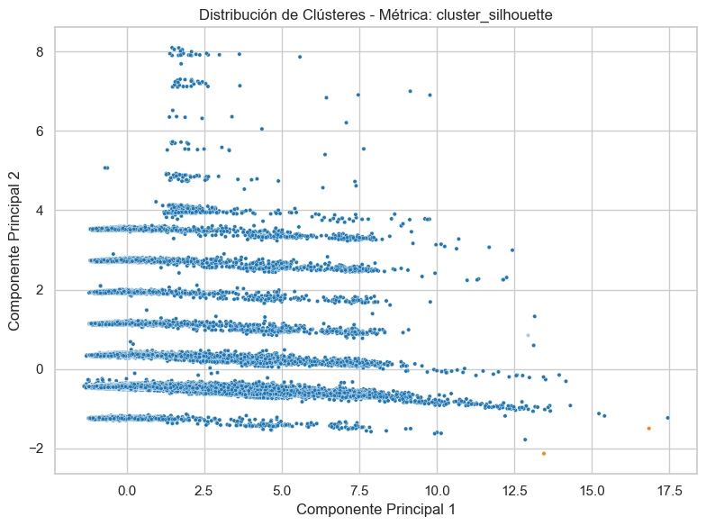
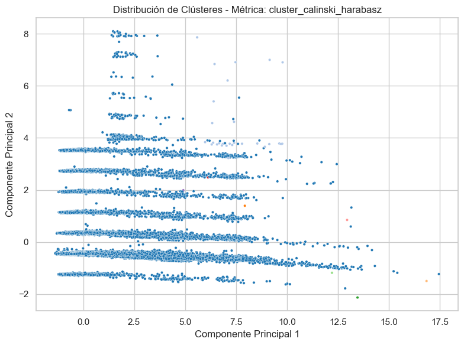
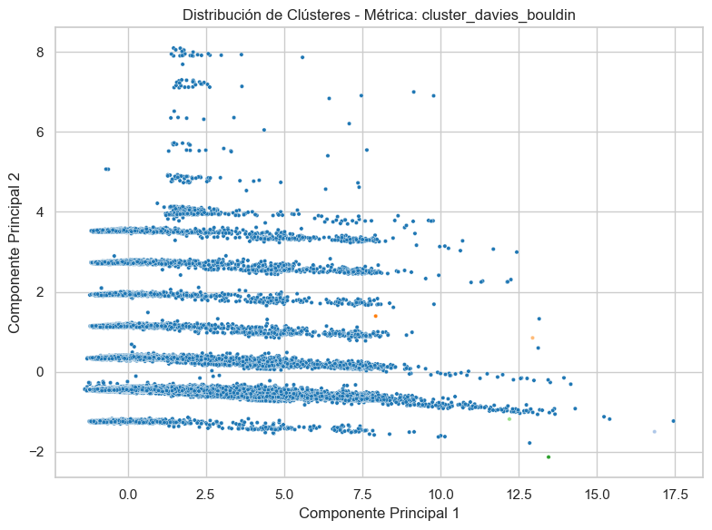
K-Medoids#
Silhouette#
# Definir la grilla de hiperparámetros
param_grid = {
'n_clusters': range(2, 11),
'init': ['heuristic', 'random'],
'method': ['alternate'],
'metric': ['euclidean', 'manhattan']
}
# Intentar cargar resultados parciales
try:
resultados_parciales = pd.read_csv(resultados_path)
print("✅ Resultados parciales cargados.")
iteracion_inicial = len(resultados_parciales)
mejor_score = resultados_parciales['silhouette'].max()
mejor_idx = resultados_parciales['silhouette'].idxmax()
mejor_modelo = pickle.load(open(modelo_path, 'rb'))
except:
resultados_parciales = []
iteracion_inicial = 0
mejor_score = -1
mejor_modelo = None
# Inicializar timer global
inicio_total = time.time()
total_iteraciones = len(list(ParameterGrid(param_grid)))
# Bucle principal con barra de progreso
with tqdm(total=total_iteraciones, initial=iteracion_inicial, desc="Entrenando K-Medoids") as pbar:
for i, params in enumerate(ParameterGrid(param_grid)):
if i < iteracion_inicial:
continue # Saltar ya entrenados
print(f"▶ Iteración {i+1}/{total_iteraciones} - {params}")
inicio = time.time()
modelo = KMedoids(**params, random_state=42)
modelo.fit(X_sample)
etiquetas = modelo.labels_
tiempo = round(time.time() - inicio, 2)
elapsed = time.time() - inicio
tiempo_total = time.time() - inicio_total
# Validación: al menos 2 clústeres válidos
if len(set(etiquetas)) <= 1 or (etiquetas == -1).all():
print("⚠️ Solo se encontró un clúster o todos son ruido. Se omite esta combinación.")
sil, db, ch = np.nan, np.nan, np.nan
else:
try:
sil = silhouette_score(X_sample, etiquetas)
# db = davies_bouldin_score(X_sample, etiquetas)
# ch = calinski_harabasz_score(X_sample, etiquetas)
except:
# sil, db, ch = np.nan, np.nan, np.nan
sil = np.nan
# Guardar mejor modelo
if sil > mejor_score:
mejor_score = sil
mejor_modelo = modelo
pickle.dump(mejor_modelo, open("KMedoids_model_final_sil.pkl", "wb"))
print("✅ Nuevo mejor modelo guardado.")
# Almacenar resultados parciales
resultados_parciales.append({
**params,
"silhouette": sil,
# "davies_bouldin": db,
# "calinski_harabasz": ch,
"tiempo_iter_s": round(elapsed, 2),
"tiempo_s": tiempo
})
pd.DataFrame(resultados_parciales).to_csv("resultados_parciales_KMedoids_sil.csv", index=False)
print(f"⏱️ Tiempo de esta iteración: {formatear_tiempo(elapsed)}")
print(f"⏱️ Tiempo total acumulado: {formatear_tiempo(time.time() - inicio_total)}")
pd.DataFrame(resultados_parciales)
Entrenando K-Medoids: 0%| | 0/36 [00:00<?, ?it/s]
▶ Iteración 1/36 - {'init': 'heuristic', 'method': 'alternate', 'metric': 'euclidean', 'n_clusters': 2}
---------------------------------------------------------------------------
MemoryError Traceback (most recent call last)
Cell In[104], line 36
34 inicio = time.time()
35 modelo = KMedoids(**params, random_state=42)
---> 36 modelo.fit(X_sample)
37 etiquetas = modelo.labels_
38 tiempo = round(time.time() - inicio, 2)
File ~\.conda\envs\sklearn_env\lib\site-packages\sklearn_extra\cluster\_k_medoids.py:239, in KMedoids.fit(self, X, y)
232 if self.n_clusters > X.shape[0]:
233 raise ValueError(
234 "The number of medoids (%d) must be less "
235 "than the number of samples %d."
236 % (self.n_clusters, X.shape[0])
237 )
--> 239 D = pairwise_distances(X, metric=self.metric)
241 medoid_idxs = self._initialize_medoids(
242 D, self.n_clusters, random_state_, X
243 )
244 labels = None
File ~\.conda\envs\sklearn_env\lib\site-packages\sklearn\utils\_param_validation.py:216, in validate_params.<locals>.decorator.<locals>.wrapper(*args, **kwargs)
210 try:
211 with config_context(
212 skip_parameter_validation=(
213 prefer_skip_nested_validation or global_skip_validation
214 )
215 ):
--> 216 return func(*args, **kwargs)
217 except InvalidParameterError as e:
218 # When the function is just a wrapper around an estimator, we allow
219 # the function to delegate validation to the estimator, but we replace
220 # the name of the estimator by the name of the function in the error
221 # message to avoid confusion.
222 msg = re.sub(
223 r"parameter of \w+ must be",
224 f"parameter of {func.__qualname__} must be",
225 str(e),
226 )
File ~\.conda\envs\sklearn_env\lib\site-packages\sklearn\metrics\pairwise.py:2480, in pairwise_distances(X, Y, metric, n_jobs, force_all_finite, ensure_all_finite, **kwds)
2477 return distance.squareform(distance.pdist(X, metric=metric, **kwds))
2478 func = partial(distance.cdist, metric=metric, **kwds)
-> 2480 return _parallel_pairwise(X, Y, func, n_jobs, **kwds)
File ~\.conda\envs\sklearn_env\lib\site-packages\sklearn\metrics\pairwise.py:1973, in _parallel_pairwise(X, Y, func, n_jobs, **kwds)
1970 X, Y, dtype = _return_float_dtype(X, Y)
1972 if effective_n_jobs(n_jobs) == 1:
-> 1973 return func(X, Y, **kwds)
1975 # enforce a threading backend to prevent data communication overhead
1976 fd = delayed(_dist_wrapper)
File ~\.conda\envs\sklearn_env\lib\site-packages\sklearn\utils\_param_validation.py:189, in validate_params.<locals>.decorator.<locals>.wrapper(*args, **kwargs)
187 global_skip_validation = get_config()["skip_parameter_validation"]
188 if global_skip_validation:
--> 189 return func(*args, **kwargs)
191 func_sig = signature(func)
193 # Map *args/**kwargs to the function signature
File ~\.conda\envs\sklearn_env\lib\site-packages\sklearn\metrics\pairwise.py:388, in euclidean_distances(X, Y, Y_norm_squared, squared, X_norm_squared)
382 if Y_norm_squared.shape != (1, Y.shape[0]):
383 raise ValueError(
384 f"Incompatible dimensions for Y of shape {Y.shape} and "
385 f"Y_norm_squared of shape {original_shape}."
386 )
--> 388 return _euclidean_distances(X, Y, X_norm_squared, Y_norm_squared, squared)
File ~\.conda\envs\sklearn_env\lib\site-packages\sklearn\metrics\pairwise.py:424, in _euclidean_distances(X, Y, X_norm_squared, Y_norm_squared, squared)
421 distances = _euclidean_distances_upcast(X, XX, Y, YY)
422 else:
423 # if dtype is already float64, no need to chunk and upcast
--> 424 distances = -2 * safe_sparse_dot(X, Y.T, dense_output=True)
425 distances += XX
426 distances += YY
File ~\.conda\envs\sklearn_env\lib\site-packages\sklearn\utils\extmath.py:203, in safe_sparse_dot(a, b, dense_output)
201 ret = xp.tensordot(a, b, axes=[-1, b_axis])
202 else:
--> 203 ret = a @ b
205 if (
206 sparse.issparse(a)
207 and sparse.issparse(b)
208 and dense_output
209 and hasattr(ret, "toarray")
210 ):
211 return ret.toarray()
MemoryError: Unable to allocate 168. GiB for an array with shape (150000, 150000) and data type float64
Modelos de Deep Learning#
Deep Clustering (DCN)#
# 1. Data
X = np.asarray(X)
input_dim = X.shape[1]
# 2. Función para construir DCN
def build_dcn(input_dim, encoding_dim, n_clusters, learning_rate, loss_weight):
inp = Input(shape=(input_dim,), name='input')
x = Dense(256, activation='relu')(inp)
x = Dense(128, activation='relu')(x)
encoded = Dense(encoding_dim, activation='relu', name='encoder_output')(x)
x = Dense(128, activation='relu')(encoded)
x = Dense(256, activation='relu')(x)
decoded = Dense(input_dim, activation='linear', name='reconstruction')(x)
q = Dense(n_clusters, activation='softmax', name='cluster')(encoded)
model = Model(inputs=inp, outputs=[decoded, q])
model.compile(
optimizer=Adam(learning_rate),
loss={'reconstruction':'mse', 'cluster':'kld'},
loss_weights={'reconstruction':1.0, 'cluster':loss_weight}
)
encoder = Model(inputs=inp, outputs=encoded)
return model, encoder
# 3. Target distribution function
def target_distribution(q):
weight = q**2 / q.sum(axis=0)
return (weight.T / weight.sum(axis=1)).T
# 4. Definir grilla centrada en los 4 hiperparámetros clave
param_grid = {
'encoding_dim': [16, 32],
'loss_weight': [0.1, 0.5],
'learning_rate': [1e-3, 1e-4],
'batch_size': [256, 512],
'ae_epochs': [50], # fijo
'dcn_epochs': [30], # fijo
'n_clusters': [5] # fijo
}
combinations = list(ParameterGrid(param_grid))
# 5. Búsqueda
results = []
for params in tqdm(combinations, desc="Grid Search DCN"):
start = time.time()
# 5.1 Construir y preentrenar autoencoder
dcn, encoder = build_dcn(
input_dim, params['encoding_dim'],
params['n_clusters'], params['learning_rate'],
params['loss_weight']
)
# pretraining
ae = Model(dcn.input, dcn.get_layer('reconstruction').output)
ae.compile(optimizer=Adam(params['learning_rate']), loss='mse')
ae.fit(X, X,
epochs=params['ae_epochs'],
batch_size=params['batch_size'],
verbose=0)
# 5.2 Inicializar cluster centers
emb = encoder.predict(X)
kmeans = KMeans(n_clusters=params['n_clusters'], n_init=10, random_state=42)
labels_init = kmeans.fit_predict(emb)
# set cluster layer weights
cluster_layer = dcn.get_layer('cluster')
cluster_layer.set_weights([kmeans.cluster_centers_.T, np.zeros(params['n_clusters'])])
# 5.3 Entrenamiento DEC
q = dcn.predict(X)[1]
p = target_distribution(q)
for epoch in range(params['dcn_epochs']):
dcn.fit(
X, {'reconstruction': X, 'cluster': p},
batch_size=params['batch_size'], epochs=1, verbose=0
)
if epoch % 10 == 0:
q = dcn.predict(X)[1]
p = target_distribution(q)
# 5.4 Evaluación (con manejo de errores)
try:
sil = silhouette_score(X, labels_init)
db = davies_bouldin_score(X, labels_init)
ch = calinski_harabasz_score(X, labels_init)
except ValueError:
# Sólo hay 1 cluster; no se puede calcular la métrica
sil, db, ch = np.nan, np.nan, np.nan
elapsed = time.time() - start
results.append({
**params,
'silhouette': sil,
'davies_bouldin': db,
'calinski_harabasz': ch,
'time_s': round(elapsed, 2),
'model': dcn
})
# 6. Consolidación
df = pd.DataFrame(results)
df.drop(columns='model').to_csv('deep_clustering_grid_results.csv', index=False)
# 7. Selección de mejores modelos
best_sil = df.loc[df['silhouette'].idxmax()]
best_db = df.loc[df['davies_bouldin'].idxmin()]
best_ch = df.loc[df['calinski_harabasz'].idxmax()]
# 8. Guardar modelos
best_sil['model'].save('dcn_best_silhouette.h5')
best_db ['model'].save('dcn_best_davies_bouldin.h5')
best_ch ['model'].save('dcn_best_calinski_harabasz.h5')
print("Mejores configuraciones:")
print("Silhouette:", best_sil.to_dict())
print("Davies–Bouldin:", best_db.to_dict())
print("Calinski–Harabasz:", best_ch.to_dict())
Grid Search DCN: 0%| | 0/16 [00:00<?, ?it/s]
4688/4688 ━━━━━━━━━━━━━━━━━━━━ 6s 1ms/step
4688/4688 ━━━━━━━━━━━━━━━━━━━━ 7s 1ms/step
4688/4688 ━━━━━━━━━━━━━━━━━━━━ 8s 2ms/step
4688/4688 ━━━━━━━━━━━━━━━━━━━━ 7s 1ms/step
4688/4688 ━━━━━━━━━━━━━━━━━━━━ 7s 2ms/step
Grid Search DCN: 6%|▋ | 1/16 [12:47<3:11:53, 767.59s/it]
4688/4688 ━━━━━━━━━━━━━━━━━━━━ 6s 1ms/step
4688/4688 ━━━━━━━━━━━━━━━━━━━━ 7s 1ms/step
4688/4688 ━━━━━━━━━━━━━━━━━━━━ 7s 2ms/step
4688/4688 ━━━━━━━━━━━━━━━━━━━━ 7s 2ms/step
4688/4688 ━━━━━━━━━━━━━━━━━━━━ 7s 2ms/step
Grid Search DCN: 12%|█▎ | 2/16 [25:20<2:57:07, 759.09s/it]
4688/4688 ━━━━━━━━━━━━━━━━━━━━ 6s 1ms/step
4688/4688 ━━━━━━━━━━━━━━━━━━━━ 6s 1ms/step
4688/4688 ━━━━━━━━━━━━━━━━━━━━ 7s 2ms/step
4688/4688 ━━━━━━━━━━━━━━━━━━━━ 7s 1ms/step
4688/4688 ━━━━━━━━━━━━━━━━━━━━ 7s 1ms/step
Grid Search DCN: 19%|█▉ | 3/16 [37:19<2:40:28, 740.63s/it]
4688/4688 ━━━━━━━━━━━━━━━━━━━━ 6s 1ms/step
4688/4688 ━━━━━━━━━━━━━━━━━━━━ 7s 1ms/step
4688/4688 ━━━━━━━━━━━━━━━━━━━━ 7s 2ms/step
4688/4688 ━━━━━━━━━━━━━━━━━━━━ 8s 2ms/step
4688/4688 ━━━━━━━━━━━━━━━━━━━━ 8s 2ms/step
Grid Search DCN: 25%|██▌ | 4/16 [49:33<2:27:37, 738.09s/it]
4688/4688 ━━━━━━━━━━━━━━━━━━━━ 6s 1ms/step
4688/4688 ━━━━━━━━━━━━━━━━━━━━ 7s 1ms/step
4688/4688 ━━━━━━━━━━━━━━━━━━━━ 7s 1ms/step
4688/4688 ━━━━━━━━━━━━━━━━━━━━ 7s 2ms/step
4688/4688 ━━━━━━━━━━━━━━━━━━━━ 9s 2ms/step
Grid Search DCN: 31%|███▏ | 5/16 [1:02:41<2:18:37, 756.16s/it]
4688/4688 ━━━━━━━━━━━━━━━━━━━━ 6s 1ms/step
4688/4688 ━━━━━━━━━━━━━━━━━━━━ 7s 1ms/step
4688/4688 ━━━━━━━━━━━━━━━━━━━━ 8s 2ms/step
4688/4688 ━━━━━━━━━━━━━━━━━━━━ 7s 2ms/step
4688/4688 ━━━━━━━━━━━━━━━━━━━━ 8s 2ms/step
Grid Search DCN: 38%|███▊ | 6/16 [1:15:34<2:06:58, 761.88s/it]
4688/4688 ━━━━━━━━━━━━━━━━━━━━ 6s 1ms/step
4688/4688 ━━━━━━━━━━━━━━━━━━━━ 7s 1ms/step
4688/4688 ━━━━━━━━━━━━━━━━━━━━ 7s 2ms/step
4688/4688 ━━━━━━━━━━━━━━━━━━━━ 7s 1ms/step
4688/4688 ━━━━━━━━━━━━━━━━━━━━ 7s 2ms/step
Grid Search DCN: 44%|████▍ | 7/16 [1:27:38<1:52:25, 749.54s/it]
4688/4688 ━━━━━━━━━━━━━━━━━━━━ 6s 1ms/step
4688/4688 ━━━━━━━━━━━━━━━━━━━━ 8s 2ms/step
4688/4688 ━━━━━━━━━━━━━━━━━━━━ 7s 1ms/step
4688/4688 ━━━━━━━━━━━━━━━━━━━━ 7s 1ms/step
4688/4688 ━━━━━━━━━━━━━━━━━━━━ 7s 2ms/step
Grid Search DCN: 50%|█████ | 8/16 [1:40:01<1:39:39, 747.38s/it]
4688/4688 ━━━━━━━━━━━━━━━━━━━━ 6s 1ms/step
4688/4688 ━━━━━━━━━━━━━━━━━━━━ 8s 2ms/step
4688/4688 ━━━━━━━━━━━━━━━━━━━━ 8s 2ms/step
4688/4688 ━━━━━━━━━━━━━━━━━━━━ 7s 2ms/step
4688/4688 ━━━━━━━━━━━━━━━━━━━━ 7s 2ms/step
Grid Search DCN: 56%|█████▋ | 9/16 [1:51:04<1:24:05, 720.81s/it]
4688/4688 ━━━━━━━━━━━━━━━━━━━━ 6s 1ms/step
4688/4688 ━━━━━━━━━━━━━━━━━━━━ 7s 1ms/step
4688/4688 ━━━━━━━━━━━━━━━━━━━━ 8s 2ms/step
4688/4688 ━━━━━━━━━━━━━━━━━━━━ 7s 1ms/step
4688/4688 ━━━━━━━━━━━━━━━━━━━━ 7s 2ms/step
Grid Search DCN: 62%|██████▎ | 10/16 [2:02:14<1:10:30, 705.13s/it]
4688/4688 ━━━━━━━━━━━━━━━━━━━━ 6s 1ms/step
4688/4688 ━━━━━━━━━━━━━━━━━━━━ 7s 1ms/step
4688/4688 ━━━━━━━━━━━━━━━━━━━━ 7s 2ms/step
4688/4688 ━━━━━━━━━━━━━━━━━━━━ 8s 2ms/step
4688/4688 ━━━━━━━━━━━━━━━━━━━━ 7s 1ms/step
Grid Search DCN: 69%|██████▉ | 11/16 [2:13:15<57:39, 691.82s/it]
4688/4688 ━━━━━━━━━━━━━━━━━━━━ 6s 1ms/step
4688/4688 ━━━━━━━━━━━━━━━━━━━━ 7s 2ms/step
4688/4688 ━━━━━━━━━━━━━━━━━━━━ 6s 1ms/step
4688/4688 ━━━━━━━━━━━━━━━━━━━━ 7s 2ms/step
4688/4688 ━━━━━━━━━━━━━━━━━━━━ 7s 2ms/step
Grid Search DCN: 75%|███████▌ | 12/16 [2:23:41<44:46, 671.66s/it]
4688/4688 ━━━━━━━━━━━━━━━━━━━━ 6s 1ms/step
4688/4688 ━━━━━━━━━━━━━━━━━━━━ 8s 2ms/step
4688/4688 ━━━━━━━━━━━━━━━━━━━━ 7s 2ms/step
4688/4688 ━━━━━━━━━━━━━━━━━━━━ 7s 1ms/step
4688/4688 ━━━━━━━━━━━━━━━━━━━━ 7s 1ms/step
Grid Search DCN: 81%|████████▏ | 13/16 [2:34:37<33:21, 667.07s/it]
4688/4688 ━━━━━━━━━━━━━━━━━━━━ 6s 1ms/step
4688/4688 ━━━━━━━━━━━━━━━━━━━━ 8s 2ms/step
4688/4688 ━━━━━━━━━━━━━━━━━━━━ 7s 2ms/step
4688/4688 ━━━━━━━━━━━━━━━━━━━━ 7s 2ms/step
4688/4688 ━━━━━━━━━━━━━━━━━━━━ 7s 2ms/step
Grid Search DCN: 88%|████████▊ | 14/16 [2:46:47<22:51, 685.88s/it]
4688/4688 ━━━━━━━━━━━━━━━━━━━━ 7s 1ms/step
4688/4688 ━━━━━━━━━━━━━━━━━━━━ 8s 2ms/step
4688/4688 ━━━━━━━━━━━━━━━━━━━━ 9s 2ms/step
4688/4688 ━━━━━━━━━━━━━━━━━━━━ 8s 2ms/step
4688/4688 ━━━━━━━━━━━━━━━━━━━━ 7s 1ms/step
Grid Search DCN: 94%|█████████▍| 15/16 [2:58:38<11:33, 693.49s/it]
4688/4688 ━━━━━━━━━━━━━━━━━━━━ 7s 1ms/step
4688/4688 ━━━━━━━━━━━━━━━━━━━━ 8s 2ms/step
4688/4688 ━━━━━━━━━━━━━━━━━━━━ 7s 1ms/step
4688/4688 ━━━━━━━━━━━━━━━━━━━━ 8s 2ms/step
4688/4688 ━━━━━━━━━━━━━━━━━━━━ 7s 1ms/step
Grid Search DCN: 100%|██████████| 16/16 [3:10:16<00:00, 713.56s/it]
WARNING:absl:You are saving your model as an HDF5 file via `model.save()` or `keras.saving.save_model(model)`. This file format is considered legacy. We recommend using instead the native Keras format, e.g. `model.save('my_model.keras')` or `keras.saving.save_model(model, 'my_model.keras')`.
WARNING:absl:You are saving your model as an HDF5 file via `model.save()` or `keras.saving.save_model(model)`. This file format is considered legacy. We recommend using instead the native Keras format, e.g. `model.save('my_model.keras')` or `keras.saving.save_model(model, 'my_model.keras')`.
WARNING:absl:You are saving your model as an HDF5 file via `model.save()` or `keras.saving.save_model(model)`. This file format is considered legacy. We recommend using instead the native Keras format, e.g. `model.save('my_model.keras')` or `keras.saving.save_model(model, 'my_model.keras')`.
Mejores configuraciones:
Silhouette: {'ae_epochs': 50, 'batch_size': 512, 'dcn_epochs': 30, 'encoding_dim': 32, 'learning_rate': 0.001, 'loss_weight': 0.5, 'n_clusters': 5, 'silhouette': 0.5902072976360091, 'davies_bouldin': 0.6784898004632246, 'calinski_harabasz': 107496.38865002993, 'time_s': 729.36, 'model': <Functional name=functional_45, built=True>}
Davies–Bouldin: {'ae_epochs': 50, 'batch_size': 256, 'dcn_epochs': 30, 'encoding_dim': 32, 'learning_rate': 0.001, 'loss_weight': 0.1, 'n_clusters': 5, 'silhouette': 0.5901062067237657, 'davies_bouldin': 0.6783717220777754, 'calinski_harabasz': 106355.90629336008, 'time_s': 788.19, 'model': <Functional name=functional_18, built=True>}
Calinski–Harabasz: {'ae_epochs': 50, 'batch_size': 512, 'dcn_epochs': 30, 'encoding_dim': 32, 'learning_rate': 0.001, 'loss_weight': 0.5, 'n_clusters': 5, 'silhouette': 0.5902072976360091, 'davies_bouldin': 0.6784898004632246, 'calinski_harabasz': 107496.38865002993, 'time_s': 729.36, 'model': <Functional name=functional_45, built=True>}
# Cargar resultados
df = pd.read_csv('deep_clustering_grid_results.csv')
# Selección de mejores combinaciones
mejor_silhouette = df.loc[df['silhouette'].idxmax()]
mejor_davies = df.loc[df['davies_bouldin'].idxmin()]
mejor_calinski = df.loc[df['calinski_harabasz'].idxmax()]
# Cargar modelos
encoder_silhouette = load_model('dcn_best_silhouette.h5', compile=False)
encoder_davies = load_model('dcn_best_davies_bouldin.h5', compile=False)
encoder_calinski = load_model('dcn_best_calinski_harabasz.h5', compile=False)
# Obtener embeddings
X_emb_sil = encoder_silhouette.predict(X)
X_emb_dav = encoder_davies.predict(X)
X_emb_cal = encoder_calinski.predict(X)
4688/4688 ━━━━━━━━━━━━━━━━━━━━ 11s 2ms/step
4688/4688 ━━━━━━━━━━━━━━━━━━━━ 6s 1ms/step
4688/4688 ━━━━━━━━━━━━━━━━━━━━ 7s 1ms/step
# Silhouette
X_emb_sil = encoder_silhouette.predict(X_sample)[1]
kmeans_sil = KMeans(n_clusters=int(mejor_silhouette["n_clusters"]), random_state=42)
labels_sil = kmeans_sil.fit_predict(X_emb_sil)
# Davies–Bouldin
X_emb_davies = encoder_davies.predict(X_sample)[1]
kmeans_davies = KMeans(n_clusters=int(mejor_davies["n_clusters"]), random_state=42)
labels_davies = kmeans_davies.fit_predict(X_emb_davies)
# Calinski–Harabasz
X_emb_calinski = encoder_calinski.predict(X_sample)[1]
kmeans_calinski = KMeans(n_clusters=int(mejor_calinski["n_clusters"]), random_state=42)
labels_calinski = kmeans_calinski.fit_predict(X_emb_calinski)
4688/4688 ━━━━━━━━━━━━━━━━━━━━ 9s 2ms/step
4688/4688 ━━━━━━━━━━━━━━━━━━━━ 7s 2ms/step
4688/4688 ━━━━━━━━━━━━━━━━━━━━ 7s 2ms/step
Visualización Clusters Deep Clustering (DCN)#
# DataFrame base
df_sample = pd.DataFrame(X)
df_sample["cluster_silhouette"] = labels_sil
df_sample["cluster_davies_bouldin"] = labels_davies
df_sample["cluster_calinski_harabasz"] = labels_calinski
# PCA para visualización
pca = PCA(n_components=2)
pca_result = pca.fit_transform(X)
df_sample["pca1"] = pca_result[:, 0]
df_sample["pca2"] = pca_result[:, 1]
def plot_clusters(df, col_cluster, title):
plt.figure(figsize=(10, 6))
# Tamaños
cluster_counts = df[col_cluster].value_counts().to_dict()
df['cluster_size'] = df[col_cluster].map(cluster_counts)
df['marker_size'] = df['cluster_size'] / df['cluster_size'].max() * 100
scatter = sns.scatterplot(
x='pca1',
y='pca2',
hue=col_cluster,
size='marker_size',
sizes=(30, 300),
data=df,
alpha=0.7,
edgecolor='white',
palette='tab10',
legend='brief'
)
# Eliminar leyenda de tamaños
handles, labels = scatter.get_legend_handles_labels()
new_handles, new_labels = [], []
for h, l in zip(handles, labels):
if "marker_size" in l:
break
new_handles.append(h)
new_labels.append(l)
plt.title(title)
plt.legend(new_handles, new_labels, loc='best')
plt.tight_layout()
plt.show()
import matplotlib.pyplot as plt
import seaborn as sns
def plot_cluster_distribution(labels, title):
plt.figure(figsize=(6, 4))
sns.countplot(x=labels)
plt.title(title)
plt.xlabel("Cluster")
plt.ylabel("Cantidad de muestras")
plt.show()
# Visualizar resultados
plot_cluster_distribution(labels_sil, "Distribución - Silhouette")
plot_cluster_distribution(labels_davies, "Distribución - Davies–Bouldin")
plot_cluster_distribution(labels_calinski, "Distribución - Calinski–Harabasz")
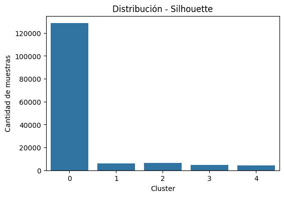
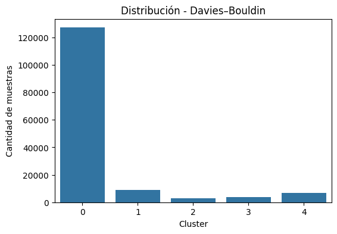
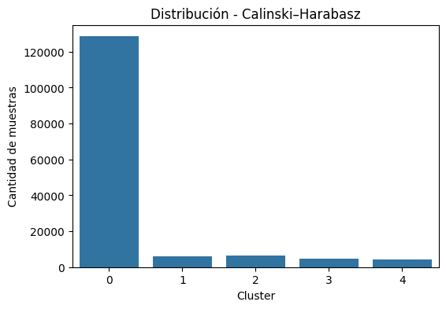
plot_clusters(df_sample, 'cluster_silhouette', "Clusters asignados por DCN (Silhouette)")
plot_clusters(df_sample, 'cluster_davies_bouldin', "Clusters asignados por DCN (Davies-Bouldin)")
plot_clusters(df_sample, 'cluster_calinski_harabasz', "Clusters asignados por DCN (Calinski-Harabasz)")
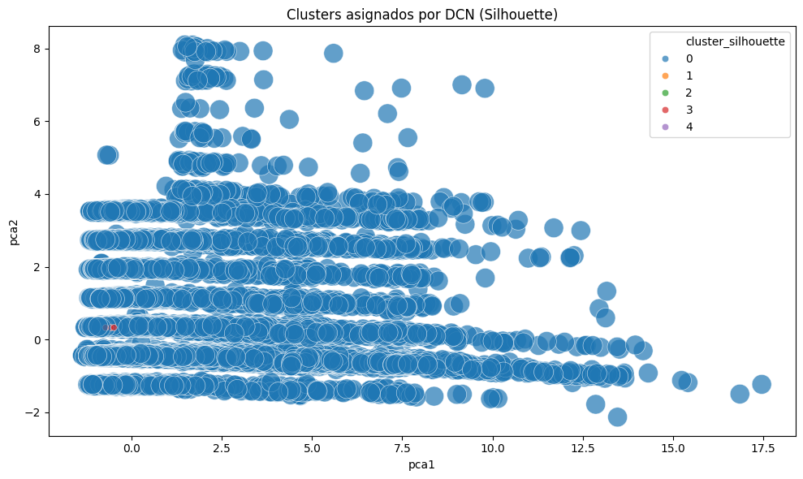
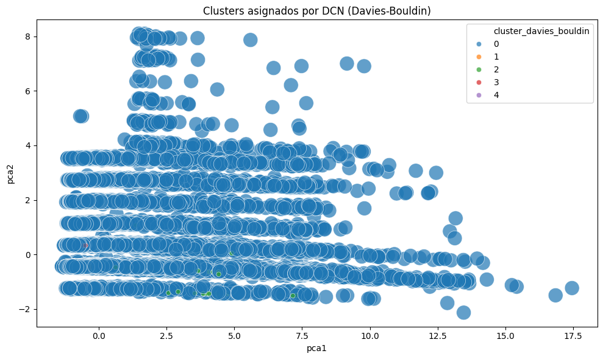
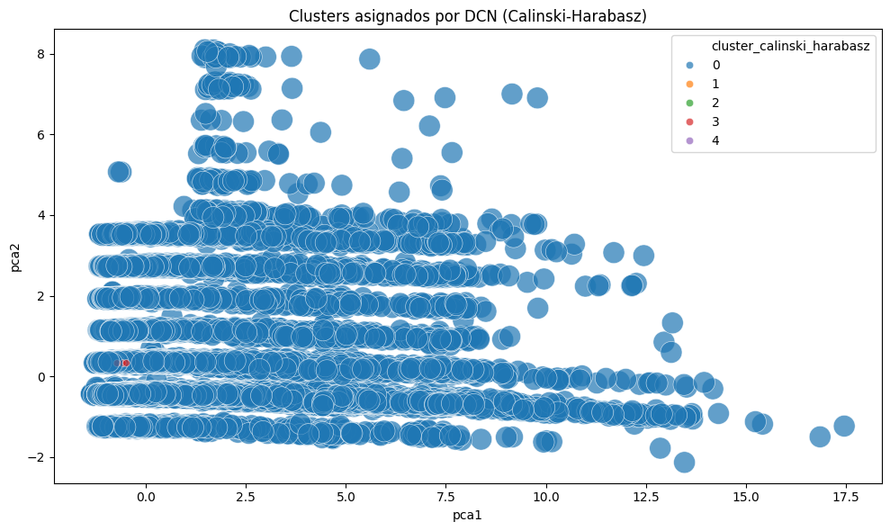
Deep Embedding Clustering (DEC)#
# Cargar X_sample
input_dim = X_sample.shape[1]
# ===========================
# Función para crear modelo
# ===========================
def build_autoencoder(input_dim, embedding_dim):
input_layer = Input(shape=(input_dim,))
x = Dense(128, activation='relu')(input_layer)
x = Dense(64, activation='relu')(x)
embedding = Dense(embedding_dim, activation='relu', name='embedding')(x)
x = Dense(64, activation='relu')(embedding)
x = Dense(128, activation='relu')(x)
output = Dense(input_dim, activation='linear')(x)
autoencoder = Model(input_layer, output)
encoder = Model(input_layer, embedding)
autoencoder.compile(optimizer=Adam(), loss='mse')
return autoencoder, encoder
# ===========================
# Definir grilla
# ===========================
param_grid = {
"n_clusters": [5, 6, 8],
"embedding_dim": [10, 20],
"pretrain_epochs": [30, 50]
}
combinaciones = list(product(param_grid["n_clusters"], param_grid["embedding_dim"], param_grid["pretrain_epochs"]))
resultados = []
# ===========================
# Loop de entrenamiento y evaluación
# ===========================
for i, (n_clusters, embedding_dim, epochs) in enumerate(tqdm(combinaciones, desc="Buscando mejor modelo DEC")):
print(f"\n▶ Iteración {i+1}/{len(combinaciones)} - Clusters={n_clusters}, Embedding={embedding_dim}, Epochs={epochs}")
inicio = time.time()
# Construir modelo
autoencoder, encoder = build_autoencoder(input_dim, embedding_dim)
# Entrenar autoencoder
autoencoder.fit(X_sample, X_sample, epochs=epochs, batch_size=256, shuffle=True, validation_split=0.2, verbose=0)
# Obtener embeddings
embeddings = encoder.predict(X_sample)
# Clustering
kmeans = KMeans(n_clusters=n_clusters, random_state=42)
etiquetas = kmeans.fit_predict(embeddings)
# Evaluación
try:
sil = silhouette_score(embeddings, etiquetas)
db = davies_bouldin_score(embeddings, etiquetas)
ch = calinski_harabasz_score(embeddings, etiquetas)
except:
sil, db, ch = np.nan, np.nan, np.nan
elapsed = round(time.time() - inicio, 2)
# Guardar modelo
model_name = f"dec_k{n_clusters}_emb{embedding_dim}_ep{epochs}"
autoencoder.save(f"{model_name}_autoencoder.h5")
encoder.save(f"{model_name}_encoder.h5")
# Guardar resultados
resultados.append({
"n_clusters": n_clusters,
"embedding_dim": embedding_dim,
"pretrain_epochs": epochs,
"silhouette": sil,
"davies_bouldin": db,
"calinski_harabasz": ch,
"tiempo_s": elapsed
})
# Guardado parcial en caso de interrupción
pd.DataFrame(resultados).to_csv("resultados_grid_DEC.csv", index=False)
# Mostrar tabla final
df_resultados = pd.DataFrame(resultados)
df_resultados
Buscando mejor modelo DEC: 0%| | 0/12 [00:00<?, ?it/s]
▶ Iteración 1/12 - Clusters=5, Embedding=10, Epochs=30
4688/4688 ━━━━━━━━━━━━━━━━━━━━ 8s 2ms/step
WARNING:absl:You are saving your model as an HDF5 file via `model.save()` or `keras.saving.save_model(model)`. This file format is considered legacy. We recommend using instead the native Keras format, e.g. `model.save('my_model.keras')` or `keras.saving.save_model(model, 'my_model.keras')`.
WARNING:absl:You are saving your model as an HDF5 file via `model.save()` or `keras.saving.save_model(model)`. This file format is considered legacy. We recommend using instead the native Keras format, e.g. `model.save('my_model.keras')` or `keras.saving.save_model(model, 'my_model.keras')`.
Buscando mejor modelo DEC: 8%|████▍ | 1/12 [12:36<2:18:36, 756.05s/it]
▶ Iteración 2/12 - Clusters=5, Embedding=10, Epochs=50
4688/4688 ━━━━━━━━━━━━━━━━━━━━ 7s 2ms/step
WARNING:absl:You are saving your model as an HDF5 file via `model.save()` or `keras.saving.save_model(model)`. This file format is considered legacy. We recommend using instead the native Keras format, e.g. `model.save('my_model.keras')` or `keras.saving.save_model(model, 'my_model.keras')`.
WARNING:absl:You are saving your model as an HDF5 file via `model.save()` or `keras.saving.save_model(model)`. This file format is considered legacy. We recommend using instead the native Keras format, e.g. `model.save('my_model.keras')` or `keras.saving.save_model(model, 'my_model.keras')`.
Buscando mejor modelo DEC: 17%|████████▊ | 2/12 [25:37<2:08:32, 771.22s/it]
▶ Iteración 3/12 - Clusters=5, Embedding=20, Epochs=30
4688/4688 ━━━━━━━━━━━━━━━━━━━━ 8s 2ms/step
WARNING:absl:You are saving your model as an HDF5 file via `model.save()` or `keras.saving.save_model(model)`. This file format is considered legacy. We recommend using instead the native Keras format, e.g. `model.save('my_model.keras')` or `keras.saving.save_model(model, 'my_model.keras')`.
WARNING:absl:You are saving your model as an HDF5 file via `model.save()` or `keras.saving.save_model(model)`. This file format is considered legacy. We recommend using instead the native Keras format, e.g. `model.save('my_model.keras')` or `keras.saving.save_model(model, 'my_model.keras')`.
Buscando mejor modelo DEC: 25%|█████████████▎ | 3/12 [38:17<1:54:51, 765.71s/it]
▶ Iteración 4/12 - Clusters=5, Embedding=20, Epochs=50
4688/4688 ━━━━━━━━━━━━━━━━━━━━ 8s 2ms/step
WARNING:absl:You are saving your model as an HDF5 file via `model.save()` or `keras.saving.save_model(model)`. This file format is considered legacy. We recommend using instead the native Keras format, e.g. `model.save('my_model.keras')` or `keras.saving.save_model(model, 'my_model.keras')`.
WARNING:absl:You are saving your model as an HDF5 file via `model.save()` or `keras.saving.save_model(model)`. This file format is considered legacy. We recommend using instead the native Keras format, e.g. `model.save('my_model.keras')` or `keras.saving.save_model(model, 'my_model.keras')`.
Buscando mejor modelo DEC: 33%|█████████████████▋ | 4/12 [52:01<1:45:10, 788.81s/it]
▶ Iteración 5/12 - Clusters=6, Embedding=10, Epochs=30
4688/4688 ━━━━━━━━━━━━━━━━━━━━ 8s 2ms/step
WARNING:absl:You are saving your model as an HDF5 file via `model.save()` or `keras.saving.save_model(model)`. This file format is considered legacy. We recommend using instead the native Keras format, e.g. `model.save('my_model.keras')` or `keras.saving.save_model(model, 'my_model.keras')`.
WARNING:absl:You are saving your model as an HDF5 file via `model.save()` or `keras.saving.save_model(model)`. This file format is considered legacy. We recommend using instead the native Keras format, e.g. `model.save('my_model.keras')` or `keras.saving.save_model(model, 'my_model.keras')`.
Buscando mejor modelo DEC: 42%|█████████████████████▎ | 5/12 [1:04:54<1:31:22, 783.15s/it]
▶ Iteración 6/12 - Clusters=6, Embedding=10, Epochs=50
4688/4688 ━━━━━━━━━━━━━━━━━━━━ 8s 2ms/step
WARNING:absl:You are saving your model as an HDF5 file via `model.save()` or `keras.saving.save_model(model)`. This file format is considered legacy. We recommend using instead the native Keras format, e.g. `model.save('my_model.keras')` or `keras.saving.save_model(model, 'my_model.keras')`.
WARNING:absl:You are saving your model as an HDF5 file via `model.save()` or `keras.saving.save_model(model)`. This file format is considered legacy. We recommend using instead the native Keras format, e.g. `model.save('my_model.keras')` or `keras.saving.save_model(model, 'my_model.keras')`.
Buscando mejor modelo DEC: 50%|█████████████████████████▌ | 6/12 [1:18:18<1:19:01, 790.28s/it]
▶ Iteración 7/12 - Clusters=6, Embedding=20, Epochs=30
4688/4688 ━━━━━━━━━━━━━━━━━━━━ 8s 2ms/step
WARNING:absl:You are saving your model as an HDF5 file via `model.save()` or `keras.saving.save_model(model)`. This file format is considered legacy. We recommend using instead the native Keras format, e.g. `model.save('my_model.keras')` or `keras.saving.save_model(model, 'my_model.keras')`.
WARNING:absl:You are saving your model as an HDF5 file via `model.save()` or `keras.saving.save_model(model)`. This file format is considered legacy. We recommend using instead the native Keras format, e.g. `model.save('my_model.keras')` or `keras.saving.save_model(model, 'my_model.keras')`.
Buscando mejor modelo DEC: 58%|█████████████████████████████▊ | 7/12 [1:30:56<1:04:58, 779.76s/it]
▶ Iteración 8/12 - Clusters=6, Embedding=20, Epochs=50
4688/4688 ━━━━━━━━━━━━━━━━━━━━ 8s 2ms/step
WARNING:absl:You are saving your model as an HDF5 file via `model.save()` or `keras.saving.save_model(model)`. This file format is considered legacy. We recommend using instead the native Keras format, e.g. `model.save('my_model.keras')` or `keras.saving.save_model(model, 'my_model.keras')`.
WARNING:absl:You are saving your model as an HDF5 file via `model.save()` or `keras.saving.save_model(model)`. This file format is considered legacy. We recommend using instead the native Keras format, e.g. `model.save('my_model.keras')` or `keras.saving.save_model(model, 'my_model.keras')`.
Buscando mejor modelo DEC: 67%|███████████████████████████████████▎ | 8/12 [1:44:22<52:32, 788.02s/it]
▶ Iteración 9/12 - Clusters=8, Embedding=10, Epochs=30
4688/4688 ━━━━━━━━━━━━━━━━━━━━ 8s 2ms/step
WARNING:absl:You are saving your model as an HDF5 file via `model.save()` or `keras.saving.save_model(model)`. This file format is considered legacy. We recommend using instead the native Keras format, e.g. `model.save('my_model.keras')` or `keras.saving.save_model(model, 'my_model.keras')`.
WARNING:absl:You are saving your model as an HDF5 file via `model.save()` or `keras.saving.save_model(model)`. This file format is considered legacy. We recommend using instead the native Keras format, e.g. `model.save('my_model.keras')` or `keras.saving.save_model(model, 'my_model.keras')`.
Buscando mejor modelo DEC: 75%|███████████████████████████████████████▊ | 9/12 [1:56:30<38:28, 769.46s/it]
▶ Iteración 10/12 - Clusters=8, Embedding=10, Epochs=50
4688/4688 ━━━━━━━━━━━━━━━━━━━━ 8s 2ms/step
WARNING:absl:You are saving your model as an HDF5 file via `model.save()` or `keras.saving.save_model(model)`. This file format is considered legacy. We recommend using instead the native Keras format, e.g. `model.save('my_model.keras')` or `keras.saving.save_model(model, 'my_model.keras')`.
WARNING:absl:You are saving your model as an HDF5 file via `model.save()` or `keras.saving.save_model(model)`. This file format is considered legacy. We recommend using instead the native Keras format, e.g. `model.save('my_model.keras')` or `keras.saving.save_model(model, 'my_model.keras')`.
Buscando mejor modelo DEC: 83%|███████████████████████████████████████████▎ | 10/12 [2:09:43<25:52, 776.50s/it]
▶ Iteración 11/12 - Clusters=8, Embedding=20, Epochs=30
4688/4688 ━━━━━━━━━━━━━━━━━━━━ 8s 2ms/step
WARNING:absl:You are saving your model as an HDF5 file via `model.save()` or `keras.saving.save_model(model)`. This file format is considered legacy. We recommend using instead the native Keras format, e.g. `model.save('my_model.keras')` or `keras.saving.save_model(model, 'my_model.keras')`.
WARNING:absl:You are saving your model as an HDF5 file via `model.save()` or `keras.saving.save_model(model)`. This file format is considered legacy. We recommend using instead the native Keras format, e.g. `model.save('my_model.keras')` or `keras.saving.save_model(model, 'my_model.keras')`.
Buscando mejor modelo DEC: 92%|███████████████████████████████████████████████▋ | 11/12 [2:21:57<12:43, 763.45s/it]
▶ Iteración 12/12 - Clusters=8, Embedding=20, Epochs=50
4688/4688 ━━━━━━━━━━━━━━━━━━━━ 8s 2ms/step
WARNING:absl:You are saving your model as an HDF5 file via `model.save()` or `keras.saving.save_model(model)`. This file format is considered legacy. We recommend using instead the native Keras format, e.g. `model.save('my_model.keras')` or `keras.saving.save_model(model, 'my_model.keras')`.
WARNING:absl:You are saving your model as an HDF5 file via `model.save()` or `keras.saving.save_model(model)`. This file format is considered legacy. We recommend using instead the native Keras format, e.g. `model.save('my_model.keras')` or `keras.saving.save_model(model, 'my_model.keras')`.
Buscando mejor modelo DEC: 100%|████████████████████████████████████████████████████| 12/12 [2:34:55<00:00, 774.59s/it]
| n_clusters | embedding_dim | pretrain_epochs | silhouette | davies_bouldin | calinski_harabasz | tiempo_s | |
|---|---|---|---|---|---|---|---|
| 0 | 5 | 10 | 30 | 0.567796 | 0.739243 | 150499.703125 | 755.95 |
| 1 | 5 | 10 | 50 | 0.412293 | 0.830088 | 121364.523438 | 781.75 |
| 2 | 5 | 20 | 30 | 0.487276 | 0.730394 | 110319.460938 | 759.07 |
| 3 | 5 | 20 | 50 | 0.564310 | 0.769590 | 111616.703125 | 824.12 |
| 4 | 6 | 10 | 30 | 0.483696 | 0.887546 | 133387.531250 | 773.05 |
| 5 | 6 | 10 | 50 | 0.502141 | 0.778423 | 156733.734375 | 804.02 |
| 6 | 6 | 20 | 30 | 0.519925 | 0.778003 | 115384.242188 | 758.02 |
| 7 | 6 | 20 | 50 | 0.475878 | 0.864508 | 107902.515625 | 805.65 |
| 8 | 8 | 10 | 30 | 0.534043 | 0.827977 | 131844.968750 | 728.56 |
| 9 | 8 | 10 | 50 | 0.356904 | 0.978793 | 96493.187500 | 792.17 |
| 10 | 8 | 20 | 30 | 0.508519 | 0.838063 | 116991.046875 | 733.77 |
| 11 | 8 | 20 | 50 | 0.522543 | 0.888485 | 106664.898438 | 777.93 |
Silhouette#
# Buscar la mejor combinación por la metrica Silhouette
mejor_fila_silhouette = resultados_grid_DEC.loc[resultados_grid_DEC['silhouette'].idxmax()]
print("Mejor configuración basada en Silhouette:")
print(mejor_fila_silhouette)
# Obtener los hiperparámetros del mejor modelo
best_params_silhouette = {
"n_clusters": int(mejor_fila_silhouette["n_clusters"]),
"embedding_dim": int(mejor_fila_silhouette["embedding_dim"]),
"pretrain_epochs": int(mejor_fila_silhouette["pretrain_epochs"]),
}
Mejor configuración basada en Silhouette:
n_clusters 5.000000
embedding_dim 10.000000
pretrain_epochs 30.000000
silhouette 0.567796
davies_bouldin 0.739243
calinski_harabasz 150499.703125
tiempo_s 755.950000
Name: 0, dtype: float64
# Obtener el embedding
X_embedded = encoder.predict(X_sample)
# Clustering con KMeans
kmeans = KMeans(n_clusters=5, random_state=42)
labels = kmeans.fit_predict(X_embedded)
WARNING:absl:No training configuration found in the save file, so the model was *not* compiled. Compile it manually.
4688/4688 ━━━━━━━━━━━━━━━━━━━━ 8s 2ms/step
# Asignar al DataFrame de muestra cluster_silhouette
df_sample_DEC = pd.DataFrame(X_sample.toarray() if hasattr(X_sample, "toarray") else X_sample)
df_sample_DEC["cluster_silhouette"] = labels
df_sample_DEC.head()
| 0 | 1 | 2 | 3 | 4 | 5 | 6 | 7 | 8 | 9 | 10 | 11 | 12 | 13 | 14 | cluster_silhouette | |
|---|---|---|---|---|---|---|---|---|---|---|---|---|---|---|---|---|
| 0 | 0.397969 | -0.463200 | -0.221665 | -0.223972 | -0.907863 | 0.0 | 0.0 | 1.0 | 0.0 | 1.0 | 0.0 | 0.0 | 0.0 | 0.0 | 0.0 | 4 |
| 1 | -0.405570 | -0.463200 | -0.221665 | 0.026813 | 0.005213 | 1.0 | 0.0 | 0.0 | 0.0 | 1.0 | 0.0 | 0.0 | 0.0 | 0.0 | 0.0 | 1 |
| 2 | -0.599528 | 0.353273 | -0.221665 | -0.199454 | -0.828808 | 0.0 | 1.0 | 0.0 | 0.0 | 1.0 | 0.0 | 0.0 | 0.0 | 0.0 | 0.0 | 1 |
| 3 | -0.546882 | -0.463200 | -0.221665 | -0.153921 | -0.610619 | 1.0 | 0.0 | 0.0 | 0.0 | 1.0 | 0.0 | 0.0 | 0.0 | 0.0 | 0.0 | 1 |
| 4 | -0.521945 | 3.619164 | -0.221665 | -0.161393 | -0.515754 | 1.0 | 0.0 | 0.0 | 0.0 | 1.0 | 0.0 | 0.0 | 0.0 | 0.0 | 0.0 | 0 |
# Mostrar tamaños por clúster
df_sample_DEC['cluster_silhouette'].value_counts(normalize=True).plot(kind='bar', title='Proporción de Clústeres')
plt.ylabel("Proporción")
plt.xlabel("Cluster")
plt.show()
df_sample_DEC['cluster_silhouette'].value_counts(normalize=True)
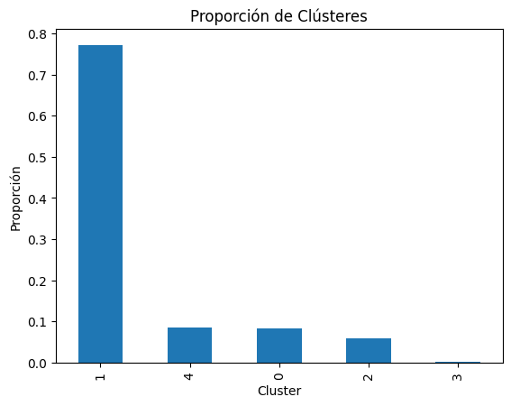
cluster_silhouette
1 0.771853
4 0.084547
0 0.082373
2 0.058687
3 0.002540
Name: proportion, dtype: float64
pca = PCA(n_components=2)
pca_result = pca.fit_transform(X_sample)
df_sample_DEC["pca1"] = pca_result[:, 0]
df_sample_DEC["pca2"] = pca_result[:, 1]
Visualización Clusters Deep Embedding Clustering (DEC)#
# Contar elementos por clúster
cluster_counts = df_sample_DEC['cluster_silhouette'].value_counts().to_dict()
# Mapear esos tamaños como escala
df_sample_DEC['cluster_size'] = df_sample_DEC['cluster_silhouette'].map(lambda c: cluster_counts[c])
df_sample_DEC['marker_size'] = df_sample_DEC['cluster_size'] / df_sample_DEC['cluster_size'].max() * 100 # escala
# Eliminar la leyenda de tamaños (marker_size)
# Obtiene los handles y labels actuales
handles, labels = scatter.get_legend_handles_labels()
# Filtra para mantener solo los elementos que son de clúster
new_handles = []
new_labels = []
for h, l in zip(handles, labels):
if 'marker_size' in l:
break
new_handles.append(h)
new_labels.append(l)
# Visualización
plt.figure(figsize=(10, 6))
sns.scatterplot(
x='pca1',
y='pca2',
hue='cluster_silhouette',
size='marker_size',
sizes=(30, 300), # control del rango de tamaño visible
data=df_sample_DEC,
alpha=0.7,
edgecolor='white',
palette='tab10',
legend='brief'
)
plt.title("Clusters asignados por DEC (Silhouette)")
plt.legend(new_handles, new_labels, loc='best')
plt.tight_layout()
plt.show()
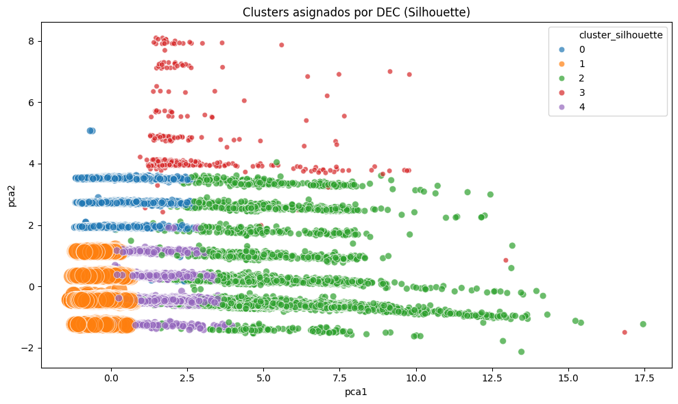
Davies - Bouldin#
# Buscar la mejor combinación para la métrica davies_bouldin
mejor_fila_davies_bouldin = resultados_grid_DEC.loc[resultados_grid_DEC['davies_bouldin'].idxmin()]
print("Mejor configuración basada en davies_bouldin:")
print(mejor_fila_davies_bouldin)
# Obtener los hiperparámetros del mejor modelo
best_params_davies_bouldin = {
"n_clusters": int(mejor_fila_davies_bouldin["n_clusters"]),
"embedding_dim": int(mejor_fila_davies_bouldin["embedding_dim"]),
"pretrain_epochs": int(mejor_fila_davies_bouldin["pretrain_epochs"]),
}
Mejor configuración basada en davies_bouldin:
n_clusters 5.000000
embedding_dim 20.000000
pretrain_epochs 30.000000
silhouette 0.487276
davies_bouldin 0.730394
calinski_harabasz 110319.460938
tiempo_s 759.070000
Name: 2, dtype: float64
# Clustering con KMeans
kmeans = KMeans(n_clusters=5, random_state=42)
labels = kmeans.fit_predict(X_embedded)
WARNING:absl:No training configuration found in the save file, so the model was *not* compiled. Compile it manually.
4688/4688 ━━━━━━━━━━━━━━━━━━━━ 7s 2ms/step
df_sample_DEC["cluster_davies_bouldin"] = labels
df_sample_DEC.head()
| 0 | 1 | 2 | 3 | 4 | 5 | 6 | 7 | 8 | 9 | ... | 11 | 12 | 13 | 14 | cluster_silhouette | pca1 | pca2 | cluster_size | marker_size | cluster_davies_bouldin | |
|---|---|---|---|---|---|---|---|---|---|---|---|---|---|---|---|---|---|---|---|---|---|
| 0 | 0.397969 | -0.463200 | -0.221665 | -0.223972 | -0.907863 | 0.0 | 0.0 | 1.0 | 0.0 | 1.0 | ... | 0.0 | 0.0 | 0.0 | 0.0 | 4 | -0.478403 | -0.478001 | 12682 | 10.953722 | 3 |
| 1 | -0.405570 | -0.463200 | -0.221665 | 0.026813 | 0.005213 | 1.0 | 0.0 | 0.0 | 0.0 | 1.0 | ... | 0.0 | 0.0 | 0.0 | 0.0 | 1 | -0.334576 | -0.440547 | 115778 | 100.000000 | 2 |
| 2 | -0.599528 | 0.353273 | -0.221665 | -0.199454 | -0.828808 | 0.0 | 1.0 | 0.0 | 0.0 | 1.0 | ... | 0.0 | 0.0 | 0.0 | 0.0 | 1 | -1.029225 | 0.351894 | 115778 | 100.000000 | 3 |
| 3 | -0.546882 | -0.463200 | -0.221665 | -0.153921 | -0.610619 | 1.0 | 0.0 | 0.0 | 0.0 | 1.0 | ... | 0.0 | 0.0 | 0.0 | 0.0 | 1 | -0.810399 | -0.467652 | 115778 | 100.000000 | 2 |
| 4 | -0.521945 | 3.619164 | -0.221665 | -0.161393 | -0.515754 | 1.0 | 0.0 | 0.0 | 0.0 | 1.0 | ... | 0.0 | 0.0 | 0.0 | 0.0 | 0 | -0.689826 | 3.499005 | 12356 | 10.672148 | 0 |
5 rows × 21 columns
# Mostrar tamaños por clúster
df_sample_DEC['cluster_davies_bouldin'].value_counts(normalize=True).plot(kind='bar', title='Proporción de Clústeres')
plt.ylabel("Proporción")
plt.xlabel("Cluster")
plt.show()
df_sample_DEC['cluster_davies_bouldin'].value_counts(normalize=True)
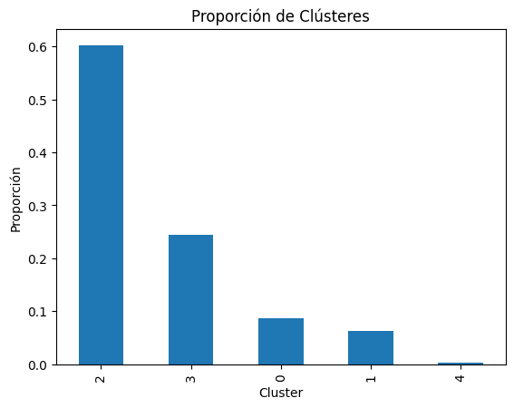
cluster_davies_bouldin
2 0.602233
3 0.244560
0 0.087460
1 0.063200
4 0.002547
Name: proportion, dtype: float64
pca = PCA(n_components=2)
pca_result = pca.fit_transform(X_sample)
df_sample_DEC["pca1_db"] = pca_result[:, 0]
df_sample_DEC["pca2_db"] = pca_result[:, 1]
Visualización Clusters Deep Embedding Clustering (DEC)#
# Contar elementos por clúster
cluster_counts = df_sample_DEC['cluster_davies_bouldin'].value_counts().to_dict()
# Mapear esos tamaños como escala proporcional
df_sample_DEC['cluster_size_db'] = df_sample_DEC['cluster_davies_bouldin'].map(lambda c: cluster_counts[c])
df_sample_DEC['marker_size_db'] = df_sample_DEC['cluster_size_db'] / df_sample_DEC['cluster_size_db'].max() * 100 # escala relativa
# Visualización
plt.figure(figsize=(10, 6))
scatter = sns.scatterplot(
x='pca1_db',
y='pca2_db',
hue='cluster_davies_bouldin',
size='marker_size_db',
sizes=(30, 300),
data=df_sample_DEC,
alpha=0.7,
edgecolor='white',
palette='tab10',
legend='brief'
)
# Eliminar la leyenda de tamaños (marker_size)
handles, labels = scatter.get_legend_handles_labels()
new_handles = []
new_labels = []
for h, l in zip(handles, labels):
if 'marker_size_db' in l:
break
new_handles.append(h)
new_labels.append(l)
# Aplicar solo la leyenda de clusters
plt.legend(new_handles, new_labels, loc='best')
plt.title("Clusters asignados por DEC (Davies Bouldin)")
plt.tight_layout()
plt.show()
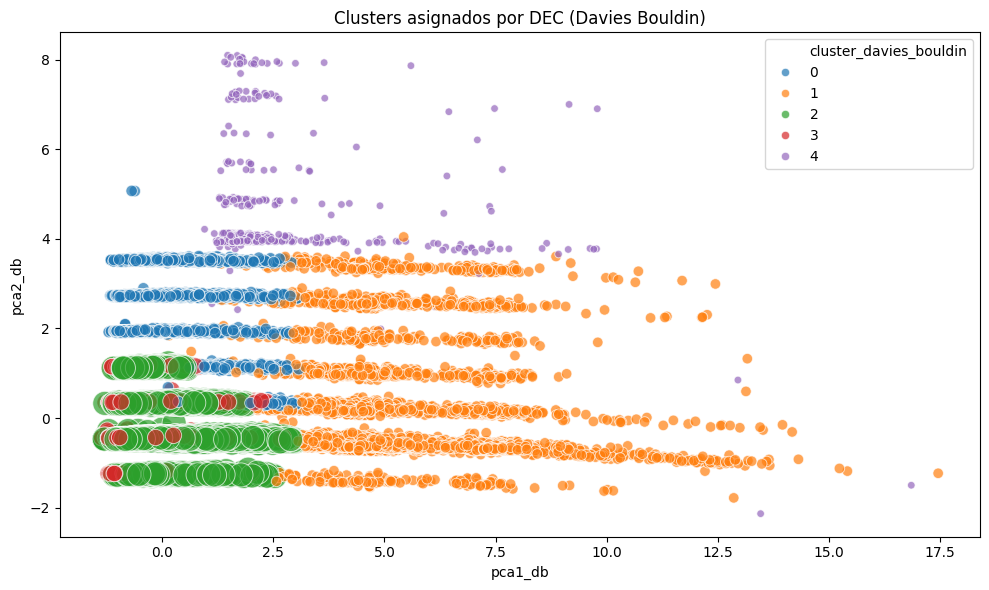
Calinski - Harabasz#
# Buscar la mejor combinación por cada métrica
mejor_fila_calinski_harabasz = resultados_grid_DEC.loc[resultados_grid_DEC['calinski_harabasz'].idxmax()]
print("Mejor configuración basada en calinski_harabasz:")
print(mejor_fila_calinski_harabasz)
# Obtener los hiperparámetros del mejor modelo
best_params_calinski_harabasz = {
"n_clusters": int(mejor_fila_calinski_harabasz["n_clusters"]),
"embedding_dim": int(mejor_fila_calinski_harabasz["embedding_dim"]),
"pretrain_epochs": int(mejor_fila_calinski_harabasz["pretrain_epochs"]),
}
Mejor configuración basada en calinski_harabasz:
n_clusters 6.000000
embedding_dim 10.000000
pretrain_epochs 50.000000
silhouette 0.502141
davies_bouldin 0.778423
calinski_harabasz 156733.734375
tiempo_s 804.020000
Name: 5, dtype: float64
# Clustering con KMeans
kmeans = KMeans(n_clusters=5, random_state=42)
labels = kmeans.fit_predict(X_embedded)
WARNING:absl:No training configuration found in the save file, so the model was *not* compiled. Compile it manually.
4688/4688 ━━━━━━━━━━━━━━━━━━━━ 8s 2ms/step
df_sample_DEC["cluster_calinski_harabasz"] = labels
df_sample_DEC.head()
| 0 | 1 | 2 | 3 | 4 | 5 | 6 | 7 | 8 | 9 | ... | pca1 | pca2 | cluster_size | marker_size | cluster_davies_bouldin | pca1_db | pca2_db | cluster_size_db | marker_size_db | cluster_calinski_harabasz | |
|---|---|---|---|---|---|---|---|---|---|---|---|---|---|---|---|---|---|---|---|---|---|
| 0 | 0.397969 | -0.463200 | -0.221665 | -0.223972 | -0.907863 | 0.0 | 0.0 | 1.0 | 0.0 | 1.0 | ... | -0.478403 | -0.478001 | 12682 | 10.953722 | 3 | -0.478403 | -0.478001 | 36684 | 40.608845 | 2 |
| 1 | -0.405570 | -0.463200 | -0.221665 | 0.026813 | 0.005213 | 1.0 | 0.0 | 0.0 | 0.0 | 1.0 | ... | -0.334576 | -0.440547 | 115778 | 100.000000 | 2 | -0.334576 | -0.440547 | 90335 | 100.000000 | 3 |
| 2 | -0.599528 | 0.353273 | -0.221665 | -0.199454 | -0.828808 | 0.0 | 1.0 | 0.0 | 0.0 | 1.0 | ... | -1.029225 | 0.351894 | 115778 | 100.000000 | 3 | -1.029225 | 0.351894 | 36684 | 40.608845 | 2 |
| 3 | -0.546882 | -0.463200 | -0.221665 | -0.153921 | -0.610619 | 1.0 | 0.0 | 0.0 | 0.0 | 1.0 | ... | -0.810399 | -0.467652 | 115778 | 100.000000 | 2 | -0.810399 | -0.467652 | 90335 | 100.000000 | 3 |
| 4 | -0.521945 | 3.619164 | -0.221665 | -0.161393 | -0.515754 | 1.0 | 0.0 | 0.0 | 0.0 | 1.0 | ... | -0.689826 | 3.499005 | 12356 | 10.672148 | 0 | -0.689826 | 3.499005 | 13119 | 14.522610 | 0 |
5 rows × 26 columns
# Mostrar tamaños por clúster
df_sample_DEC['cluster_calinski_harabasz'].value_counts(normalize=True).plot(kind='bar', title='Proporción de Clústeres')
plt.ylabel("Proporción")
plt.xlabel("Cluster")
plt.show()
df_sample_DEC['cluster_calinski_harabasz'].value_counts(normalize=True)
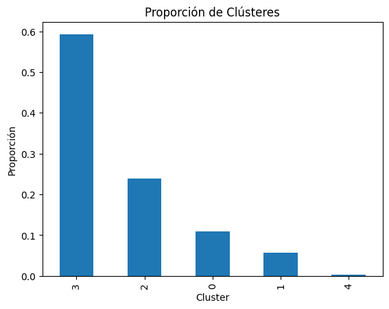
cluster_calinski_harabasz
3 0.592807
2 0.239507
0 0.108727
1 0.056413
4 0.002547
Name: proportion, dtype: float64
pca = PCA(n_components=2)
pca_result = pca.fit_transform(X_sample)
df_sample_DEC["pca1_ch"] = pca_result[:, 0]
df_sample_DEC["pca2_ch"] = pca_result[:, 1]
Visualización Clusters Deep Embedding Clustering (DEC)#
# Contar elementos por clúster
cluster_counts = df_sample_DEC['cluster_calinski_harabasz'].value_counts().to_dict()
# Mapear esos tamaños como escala proporcional
df_sample_DEC['cluster_size_ch'] = df_sample_DEC['cluster_calinski_harabasz'].map(lambda c: cluster_counts[c])
df_sample_DEC['marker_size_ch'] = df_sample_DEC['cluster_size_ch'] / df_sample_DEC['cluster_size_ch'].max() * 100 # escala relativa
# Visualización
plt.figure(figsize=(10, 6))
scatter = sns.scatterplot(
x='pca1_ch',
y='pca2_ch',
hue='cluster_calinski_harabasz',
size='marker_size_ch',
sizes=(30, 300),
data=df_sample_DEC,
alpha=0.7,
edgecolor='white',
palette='tab10',
legend='brief'
)
# Eliminar la leyenda de tamaños (marker_size)
handles, labels = scatter.get_legend_handles_labels()
new_handles = []
new_labels = []
for h, l in zip(handles, labels):
if 'marker_size_ch' in l:
break
new_handles.append(h)
new_labels.append(l)
# Aplicar solo la leyenda de clusters
plt.legend(new_handles, new_labels, loc='best')
plt.title("Clusters asignados por DEC (Calinski Harabasz)")
plt.tight_layout()
plt.show()
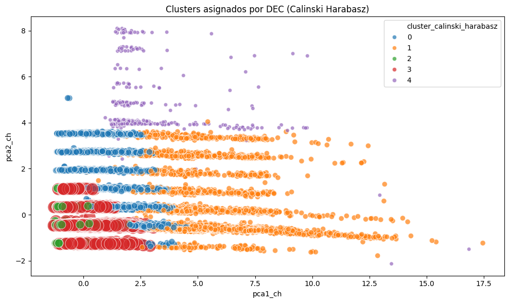
Autoencoder#
Silhpuete
# --------------------------
# 1. Custom Transformer (Autoencoder)
# --------------------------
class AutoencoderEncoder(BaseEstimator, TransformerMixin):
def __init__(self, encoding_dim=3, hidden_units=128, epochs=10, batch_size=32):
self.encoding_dim = encoding_dim
self.hidden_units = hidden_units
self.epochs = epochs
self.batch_size = batch_size
self.encoder = None
self.autoencoder = None
def build_model(self, input_dim):
model = keras.Sequential([
keras.layers.Dense(self.hidden_units, activation='relu', input_shape=(input_dim,)),
keras.layers.Dense(self.encoding_dim, activation='relu', name='encoder'),
keras.layers.Dense(self.hidden_units, activation='relu'),
keras.layers.Dense(input_dim)
])
model.compile(optimizer='adam', loss='mse')
return model
def fit(self, X, y=None):
input_dim = X.shape[1]
self.autoencoder = self.build_model(input_dim)
self.autoencoder.fit(X, X, epochs=self.epochs, batch_size=self.batch_size, verbose=0)
self.encoder = keras.Model(inputs=self.autoencoder.input,
outputs=self.autoencoder.get_layer('encoder').output)
return self
def transform(self, X):
return self.encoder.predict(X, verbose=0)
# --------------------------
# 3. Pipeline: Autoencoder + KMeans
# --------------------------
pipeline = Pipeline([
('autoencoder', AutoencoderEncoder()),
('kmeans', KMeans(random_state=42, n_init='auto'))
])
# --------------------------
# 4. GridSearchCV
# --------------------------
param_grid = {
'autoencoder__encoding_dim': [2, 3, 5],
'autoencoder__hidden_units': [64, 128],
'kmeans__n_clusters': [2, 3, 4, 5]
}
def silhouette_scorer(estimator, X):
latent_space = estimator.named_steps['autoencoder'].transform(X)
labels = estimator.named_steps['kmeans'].fit_predict(latent_space)
if len(np.unique(labels)) < 2:
return -1
return silhouette_score(latent_space, labels)
grid_search = GridSearchCV(pipeline, param_grid, cv=3, scoring=silhouette_scorer)
print("🔍 Entrenando Autoencoder + KMeans con búsqueda de hiperparámetros...")
grid_search.fit(X_sample)
# --------------------------
# 5. Resultados
# --------------------------
print("\n✅ Mejores parámetros encontrados:")
print(grid_search.best_params_)
# Obtener etiquetas finales
best_model = grid_search.best_estimator_
X_latent = best_model.named_steps['autoencoder'].transform(X_sample)
final_labels = best_model.named_steps['kmeans'].predict(X_latent)
🔍 Entrenando Autoencoder + KMeans con búsqueda de hiperparámetros...
✅ Mejores parámetros encontrados:
{'autoencoder__encoding_dim': 5, 'autoencoder__hidden_units': 64, 'kmeans__n_clusters': 2}
Visualización Clusters Autoencoder#
# Reducimos a 2D el espacio latente para visualizar
pca = PCA(n_components=2)
X_pca = pca.fit_transform(X_latent)
# Visualizamos los clusters
plt.figure(figsize=(10, 6))
scatter = plt.scatter(X_pca[:, 0], X_pca[:, 1],
c=final_labels, cmap='viridis', s=60, alpha=0.7, edgecolors='k')
plt.xlabel('PCA 1')
plt.ylabel('PCA 2')
plt.title('Clusters en espacio latente (Autoencoder + KMeans)')
plt.colorbar(scatter, label='Etiqueta de Cluster')
plt.grid(True)
plt.tight_layout()
plt.show()
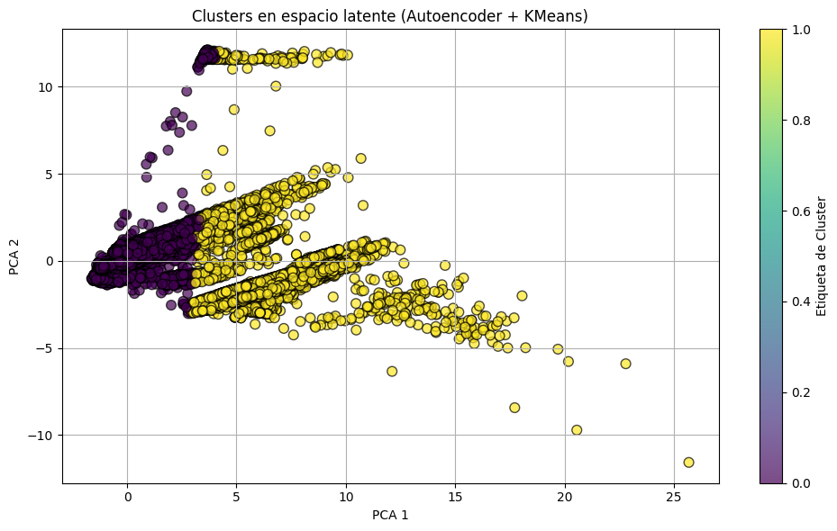
Davies-Bouldin
# --------------------------
# Reemplazar la función de evaluación
# --------------------------
def davies_bouldin_scorer(estimator, X):
latent_space = estimator.named_steps['autoencoder'].transform(X)
labels = estimator.named_steps['kmeans'].fit_predict(latent_space)
if len(np.unique(labels)) < 2:
return float('inf') # Poner el peor valor posible si solo hay un cluster
return -davies_bouldin_score(latent_space, labels) # Negativo porque GridSearchCV maximiza
# --------------------------
# GridSearchCV con nueva métrica
# --------------------------
grid_search = GridSearchCV(pipeline, param_grid, cv=3, scoring=davies_bouldin_scorer)
print("🔍 Entrenando Autoencoder + KMeans usando Davies-Bouldin Index como métrica...")
grid_search.fit(X_sample)
# --------------------------
# Resultados
# --------------------------
print("\n✅ Mejores parámetros encontrados:")
print(grid_search.best_params_)
# Obtener etiquetas finales
best_model = grid_search.best_estimator_
X_latent = best_model.named_steps['autoencoder'].transform(X_sample)
final_labels = best_model.named_steps['kmeans'].predict(X_latent)
# Imprimir número de clusters encontrados
n_clusters = len(np.unique(final_labels))
print(f"\n🔢 Número de clusters encontrados: {n_clusters}")
# (Opcional) Imprimir el mejor Davies-Bouldin Score
best_score = -grid_search.best_score_ # Volver al valor positivo original
print(f"📉 Mejor Davies-Bouldin Score: {best_score:.4f}")
🔍 Entrenando Autoencoder + KMeans usando Davies-Bouldin Index como métrica...
✅ Mejores parámetros encontrados:
{'autoencoder__encoding_dim': 2, 'autoencoder__hidden_units': 128, 'kmeans__n_clusters': 3}
🔢 Número de clusters encontrados: 3
📉 Mejor Davies-Bouldin Score: 0.3873
plt.figure(figsize=(8, 6))
scatter = plt.scatter(X_latent[:, 0], X_latent[:, 1], c=final_labels, cmap='viridis', s=50, alpha=0.7)
plt.title("🔍 Clustering en espacio latente (2D)", fontsize=14)
plt.xlabel("Dimensión latente 1")
plt.ylabel("Dimensión latente 2")
plt.colorbar(scatter, label="Cluster")
plt.grid(True)
plt.tight_layout()
plt.show()
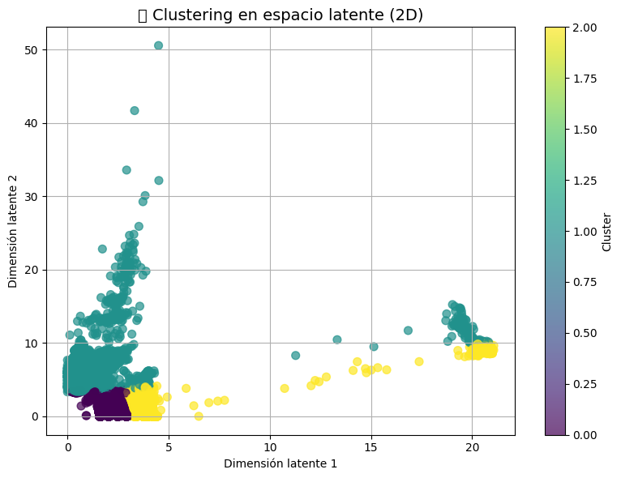
Calinski - Harabasz
from sklearn.base import BaseEstimator, TransformerMixin
from sklearn.pipeline import Pipeline
from sklearn.cluster import KMeans
from sklearn.model_selection import GridSearchCV
from sklearn.metrics import calinski_harabasz_score
import numpy as np
from tensorflow import keras
# --------------------------
# 1. Custom Transformer (Autoencoder)
# --------------------------
class AutoencoderEncoder(BaseEstimator, TransformerMixin):
def __init__(self, encoding_dim=3, hidden_units=128, epochs=10, batch_size=32):
self.encoding_dim = encoding_dim
self.hidden_units = hidden_units
self.epochs = epochs
self.batch_size = batch_size
self.encoder = None
self.autoencoder = None
def build_model(self, input_dim):
model = keras.Sequential([
keras.layers.Dense(self.hidden_units, activation='relu', input_shape=(input_dim,)),
keras.layers.Dense(self.encoding_dim, activation='relu', name='encoder'),
keras.layers.Dense(self.hidden_units, activation='relu'),
keras.layers.Dense(input_dim)
])
model.compile(optimizer='adam', loss='mse')
return model
def fit(self, X, y=None):
input_dim = X.shape[1]
self.autoencoder = self.build_model(input_dim)
self.autoencoder.fit(X, X, epochs=self.epochs, batch_size=self.batch_size, verbose=0)
self.encoder = keras.Model(inputs=self.autoencoder.input,
outputs=self.autoencoder.get_layer('encoder').output)
return self
def transform(self, X):
return self.encoder.predict(X, verbose=0)
# --------------------------
# 2. Pipeline + Parámetros
# --------------------------
pipeline = Pipeline([
('autoencoder', AutoencoderEncoder()),
('kmeans', KMeans(random_state=42, n_init='auto'))
])
param_grid = {
'autoencoder__encoding_dim': [2, 3, 5],
'autoencoder__hidden_units': [64, 128],
'kmeans__n_clusters': [2, 3, 4, 5]
}
# --------------------------
# 3. Scorer Calinski-Harabasz
# --------------------------
def calinski_harabasz_scorer(estimator, X):
latent = estimator.named_steps['autoencoder'].transform(X)
labels = estimator.named_steps['kmeans'].fit_predict(latent)
if len(np.unique(labels)) < 2:
return 0
return calinski_harabasz_score(latent, labels)
# --------------------------
# 4. GridSearchCV y entrenamiento
# --------------------------
print("🔍 Entrenando Autoencoder + KMeans usando Calinski-Harabasz Index como métrica...")
grid_search = GridSearchCV(pipeline, param_grid, cv=3, scoring=calinski_harabasz_scorer)
grid_search.fit(X_sample)
# --------------------------
# 5. Resultados
# --------------------------
print("\n Mejores parámetros encontrados:")
print(grid_search.best_params_)
best_model = grid_search.best_estimator_
X_latent = best_model.named_steps['autoencoder'].transform(X_sample)
final_labels = best_model.named_steps['kmeans'].predict(X_latent)
n_clusters = len(np.unique(final_labels))
print(f"\n Número de clusters encontrados: {n_clusters}")
best_score = grid_search.best_score_
print(f" Mejor Calinski-Harabasz Score: {best_score:.4f}")
🔍 Entrenando Autoencoder + KMeans usando Calinski-Harabasz Index como métrica...
Mejores parámetros encontrados:
{'autoencoder__encoding_dim': 2, 'autoencoder__hidden_units': 128, 'kmeans__n_clusters': 5}
Número de clusters encontrados: 5
Mejor Calinski-Harabasz Score: 105067.4509
# --------------------------
# Visualización de Clusters en espacio latente (2D)
# --------------------------
plt.figure(figsize=(8, 6))
scatter = plt.scatter(X_latent[:, 0], X_latent[:, 1], c=final_labels, cmap='viridis', s=60, alpha=0.8, edgecolors='k')
plt.title("🔍 Clustering en espacio latente (2D)", fontsize=14)
plt.xlabel("Dimensión Latente 1")
plt.ylabel("Dimensión Latente 2")
plt.colorbar(scatter, label="Cluster")
plt.grid(True)
plt.tight_layout()
plt.show()
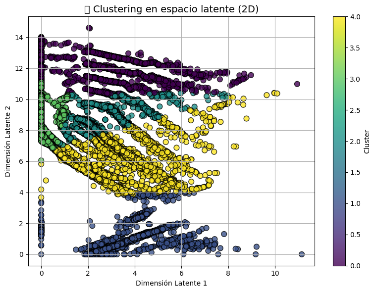